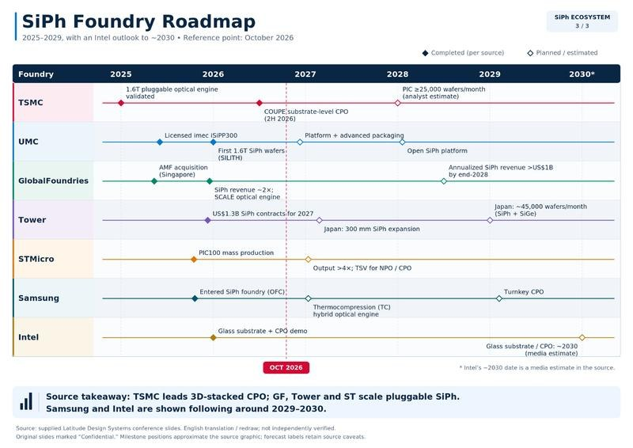
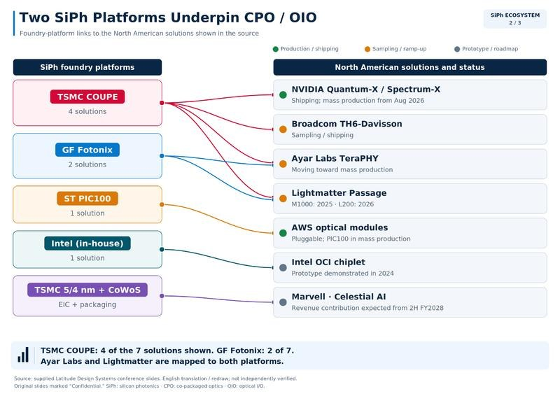
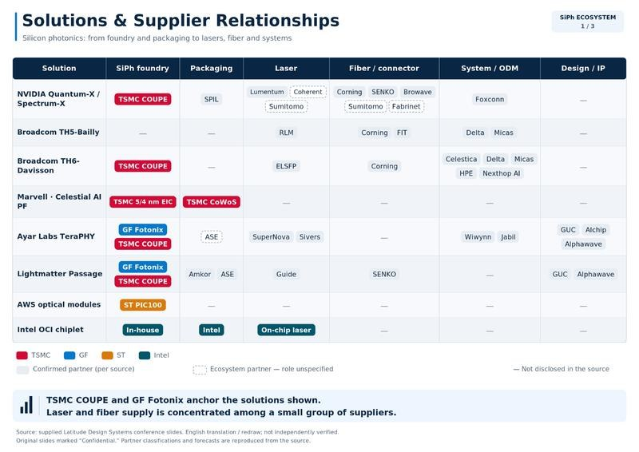

调研纪要 · 2026-10-18 新闻日报
星球 ID: 28855458518111 | 共 121 条帖子 | 精华 31 条
| 查看研究积累
书签
🌞周观点更新：业绩为王，应用提速1018
🌞周观点更新：业绩为王，应用提速1018
1️⃣对于AI硬件端，我们维持观点：#短期筹码扰动不改基本面趋势，基建升级仍在持续演绎。台积电Q3净利同比+68.7%，并明确2026-2028年资本开支将大幅超过过去三年约1010亿美元。国内PCB/光链公司Q3预告集中高增，#景气度正被业绩逐一验证。
2️⃣国常会再提深化''人工智能+''，强调#需求侧与商业化持续兑现，符合我们''AI叙事向需求端倾斜''的判断。#北美叙事RSI+AI4S+物理AI持续火热，#继续看好AI4S&物理AI&AI安全等落地场景，低位板块共振有望延续。
相关标的：
1）AI应用&数据&安全：中控技术、美年健康、金马游乐、能科科技、友邦吊顶、安恒信息、亚信安全、江顺科技等；
2）PCB：景旺电子、生益科技、华正新材、德福科技、瑞丰高材、东材科技、圣泉集团、凌玮科技、联瑞新材、瑞晨环保、安德利；
3）Msap：红板科技、兴森科技、深南电路、鹏鼎控股、三孚新科；
4）液冷&金刚石：远东股份、国机精工、沃尔德、宏昌科技、黄河旋风、金洲管道、美湖股份、飞龙股份、瑞玛精密；
5）光&小光：优迅股份、华源控股、光库科技、杰普特、灿瑞科技、天孚通信、海泰新光、天通股份；
6）玻璃基板：京东方、奥来德、力诺药包；
7）缺电&电源：三环集团、风华高科、晶丰明源、四方股份、京泉华、壹连科技、振华股份、海星股份、江海股份、颀中科技；
8）算力租赁：香江控股、宏景科技、行云科技、利通电子、协创数据等。
【东北计算机】20261018行业周报：业绩为王，应用提速
【东北计算机】20261018行业周报：业绩为王，应用提速
——————————————
计算机(申万)指数本周下跌5.02%，创业板指数本周下跌8.90%，上证指数本周下跌2.56%。
行业观点：
1️⃣对于AI硬件端，我们维持观点：#短期筹码扰动不改基本面趋势，基建升级仍在持续演绎。台积电Q3净利同比+68.7%，并明确2026-2028年资本开支将大幅超过过去三年约1010亿美元。国内大族激光、深南电路、兴森科技、光迅科技、生益科技、德福科技等PCB/光链公司Q3预告集中高增，#景气度正被业绩逐一验证。
2️⃣国常会再提深化"人工智能+"，强调#以落地应用牵引技术创新、守牢AI安全底线。华为云上调AI使能服务价格，Anthropic单季营收168亿美元并连续两季调整后盈利，#需求侧与商业化持续兑现，符合我们"AI叙事向需求端倾斜"的判断。#北美叙事RSI+AI4S+物理AI持续火热，#继续看好AI4S&物理AI&AI安全等落地场景，低位板块共振有望延续。
行业重要新闻：
💡国内
1. 国常会听取"人工智能+"行动进展汇报，提出以落地应用牵引技术创新、促进算电协同、加大场景培育，并分级分类守牢AI安全底线（来源：央视网）
2. 华为云宣布自11月16日起上调中国区AI使能服务优化与提升服务价格，新购及续费均按新价执行（来源：每日经济新闻）
3. 无问芯穹完成23亿元C轮融资，累计融资达43亿元，单轮及累计规模均创国内AI原生基础设施赛道纪录（来源：北京商报）
4. 星尘智能再融10亿元，投后估值150亿元；DeepSeek领投机器人AI初创Winverse AI，投后估值约4亿美元（来源：钛媒体、21世纪经济报道）
5. 大族激光预计前三季度归母净利润21.2-22.2亿元，同比增长145.55%-157.13%；前三季度新签订单约243亿元，同比增约90%（来源：财联社）
🌍 国际
1. 台积电Q3净利润7630.6亿新台币，同比增长68.7%，创历史新高；2026-2028年累计资本开支将大幅超过过去三年（来源：第一财经）
2. Anthropic Q3营收168亿美元，环比增约46%，连续第二个季度实现调整后盈利（来源：FT）
3. Meta发布开放权重模型Muse Spark Open，总参数816B、激活42B，支持1M上下文，称其为美国最强开放权重模型（来源：IT之家）
4. 韩国10月前10天出口额同比翻倍至261亿美元，其中芯片出口同比激增170.9%至121亿美元（来源：韩联社）
5. AEP计划投资约40亿美元建设702MW燃料电池电站，与谷歌签订20年购电协议，为AI数据中心长期供电（来源：优分析）
☎️欢迎联系东北计算机团队
🧧长沙AI影视调研核心要点
🧧长沙AI影视调研核心要点
本周我们调研了芒果超媒、中广天择、电广传媒，核心要点如下~
#芒果超媒：公司加快AI内容布局，目前储备28部AI中长剧，并向AI艺人、互动内容及综艺延伸。《
后西游记 ↗》已获独家冠名，低门槛植入及二创传播有望吸引更多广告主参与AI长剧合作。依托IP、制作、平台及资金优势，公司推进“内容+技术+平台”战略，探索AI应用研发及潜在外部投资。主业方面，会员结算改善、内容创新及广告恢复有望共同推动2027年经营修复。
#中广天择：公司依托多年音视频制作积累，拓展高难度、高质量数据集业务，已实现头部客户复购及标准化产品复售，自采自标与规模化交付能力逐步得到验证。数据产品可面向不同模型需求调整标注及封装，重复销售有望提升研发投入回报。新控股股东入主后，公司资源整合及资本运作灵活性提升，正研究分步导入部分现金流较好的文旅业务，并推进IP衍生品运营及潜在外延收购。
#电广传媒：公司以文旅和投资为两大战略支柱，借助湖南广电资源推进优质项目拓展。旗下达晨财智累计资产管理规模约800亿元，以智谱为首的人工智能、半导体等领域部分项目有望逐步进入收获期，公司通过管理收益及基金出资分享投资回报。新文旅业务推进轻资产模式以及外延并购，推荐关注后续项目落地。同时，公司正结合文旅、广告等场景打磨AI内容创作平台，探索细分应用商业化。
[發]【国泰海通医药】创新药政策更新：技术出口目录修订征求意见：管''平台''不管''品种''，创新药出海主通道不变
[發]【国泰海通医药】创新药政策更新：技术出口目录修订征求意见：管''平台''不管''品种''，创新药出海主通道不变
[太阳]事件：10月16日（周五盘后），商务部、科技部发布2026年第48号公告，就修订《
中国禁止出口限制出口技术目录 ↗》公开征求意见（反馈截止11月15日），拟在人工智能、生物医药、光伏三个领域增列约40项技术，并同步对相关技术出口实施临时登记管理。其中生物医药拟增列5项，涉及细胞和基因治疗（CGT）、小核酸（siRNA）、病原微生物三个方向。
[太阳]管什么：管''平台与方法''，不管''品种''。拟禁止3项：CGT技术工艺平台、siRNA药物技术工艺平台（仅禁所有权对外转让，授权许可、外包研发生产、品种层面BD、单一品种开发工艺均被注释逐一点名排除）、病原微生物人工基因改造与定向传代增益技术（全面禁止、无例外条款，属生物安全逻辑）；拟限制2项：CGT/siRNA全新靶点发现和验证技术（限全球未公开披露靶点，靶点一经专利、论文、会议披露即出圈；授权许可适用自动许可，即报即出）。法定框架上，禁止=不得出口、无申请通道；限制=许可管理、经许可可以出口。
[太阳]不管什么：出海主通道与技术主类别均在范围之外。技术类别上，抗体、ADC、多肽、小分子等当前BD交易占比最高的类别均未被列入目录，本次拟管控仅覆盖CGT、siRNA、病原微生物三个方向；交易形式上，License-out、品种层面BD、联合开发与共同商业化、授权+股权的NewCo结构、CXO外包服务、学术交流与论文发表，均被官方答记者问及注释条款明确排除；CXO为境外提供研发生产服务亦明确不属于管理范围。
[太阳]后续跟踪三个节点：①11月15日征求意见截止；②正式稿逐条比对，重点为''技术工艺平台''认定标准与''全新靶点''认定细则；③征求意见期间的登记案例披露情况可作为“平台技术”定义的观察窗口。
[玫瑰]联系人：余文心/余克清/廖博闻/汪晋/薛健博
【招商电新】风电板块近期跟踪20261018
【招商电新】风电板块近期跟踪20261018
近期风电板块积极信号持续累积，我们认为，四季度至2027年，国内陆风需求释放、海风项目启动与欧洲订单兑现有望形成共振。
#国内陆风：大型集采接连启动，需求景气有望延续
10月9日，大唐2026-2027年风机年度10GW框采发布中标候选人公示；10月14日，国家电投发布第三批风机规模化采购招标，采购容量达3.075GW，共18个标段。两大央企近期接连推进规模化采购，国内项目储备正逐步向设备招标转化，有望支撑后续整机排产，并为风机价格企稳创造条件。
#国内海风：项目建设与前期工作持续推进，关注2027年放量
10月9日，龙源电力江苏射阳海风项目一期首批机组并网；华润海南CZ10-2场址60万千瓦国管海域项目近期推进新场址测风服务，深远海项目持续开展前期工作。随着国管海域政策和项目审批逐步推进，后续重点关注增量场址核准及海缆、海工基础等环节招标，若项目启动节奏加快，有望为2027年海风订单提供支撑。
#欧洲海风：拍卖与订单持续催化，出口链景气值得关注
法国AO10约10GW海风招标已于10月12日截止申请，预计2027年2月公布授标结果；德国推进海风法修订，英国AR8也有望于2027年上半年公布结果。与此同时，欧洲项目采购持续推进，10月初Boskalis获得荷兰Zeevonk一期海缆铺设合同。随着政策支持逐步转化为项目授标与实际采购，中国海工、海缆企业有望受益于欧洲新增需求。
整体来看，国内陆风集采、国内海风项目启动与欧洲订单兑现三条主线均有积极进展，四季度至2027年上半年催化有望持续。重点关注东方电缆、大金重工、天顺风能、海力风电等海风产业链标的，以及整机环节招标规模和价格变化。
【广发公用 郭鹏/郝兆升】江苏取消固定电价完善电价传导，关注长协电价上行预期
【广发公用 郭鹏/郝兆升】江苏取消固定电价完善电价传导，关注长协电价上行预期
#江苏零售交易指引取消固定价格限制，两广地区批零倒挂问题倒逼电价传导机制完善。10月13日，江苏发文取消2027零售交易固定价格机制，零售套餐的电能量价格与批发市场购电成本挂钩。此前，广西、广东分别暴露相出批零倒挂后售电公司大面积亏损问题。政策完善电价传导机制，有利于电力公司获得稳定的合理回报。
#Q3用电需求不足火电电量承压，水电分化，风光核电稳增。Q3新能源对传统火电的电量挤压延续，华能&华电火电上网电量降幅超10%；来水分化，长江偏枯、雅砻江好转、珠江高基数下回落；核电新机组投产电量上行，广核、中核上网电量同比+14.17%、+7.02%。风光增速回升，华能风电上网电量同比+15.06%，光伏+3.15%。三峡能源风电发电量同比+6.52%，光伏+12.47%。
#煤价上涨电价回升，江苏、广东10月电价大涨。10月广东月度综合价为0.457元/千瓦时，环比9月提升5.3分/千瓦时；江苏月度电价0.395元/千瓦时，环比9月提升5.1分/千瓦时，达到年内新高。四季度年度长协签约周期即将来临，月度电价对年度长协电价的指引越来越强，明年年度长协电价有望企稳回升，尤其沿海省份电价上涨概率较大。
[礼物]建议关注电价预期改善水火核盈利弹性：1.火电：华能H、华电H、国电、宝新、江苏国信、申能、蒙电；2.水电：电价提升、来水好转的川投、国投；3.核电：电价预期扭转、装机投产高峰的中核、广核；4.燃气：气源多元化的九丰、佛燃。
[红包]【国盛有色】贵金属&工业金属观点更新
[红包]【国盛有色】贵金属&工业金属观点更新
[玫瑰]贵金属：财政赤字与AI叙事挑战美元信用，黄金配置价值凸显。美国财政部10月16日公布的数据显示，截至9月30日的2026财年，美国财政赤字同比扩大2170亿美元，至1.99万亿美元，为2021财年以来最高水平，也是历史第三大年度财政赤字。财政支出达到创纪录的7.40万亿美元，同比增长6%。其中，债务偿付支出同比增长12%，至创纪录的1.36万亿美元。此外，美国最高法院此前裁决否定特朗普政府实施的大部分关税，导致2026财年退还关税1450亿美元，净关税收入同比下降11%，至约1730亿美元。本周公布的CPI和PPI双双超预期，黄金却在数据利空情形下快速修复跌幅，部分程度与近期AI叙事出现裂痕有关，周内CoreWeave无担保债券到期收益率直接飙破15%，五年期信用违约互换（CDS）跳升至881个基点，市场定价隐含的五年内违约概率已超过50%。美国财政赤字扩大、AI叙事反转均对美元信用造成挑战，黄金配置价值凸显。#标的：万国黄金、灵宝、赤峰、山东黄金、紫金、中金、山金国际、兴业、盛达等。
[玫瑰]铜：铜矿扰动与冶炼减产，铜价易涨难跌。本周全球铜库存环比+5.4万吨，其中SHFE库存环比+2.8万吨，社会库存环比+2.2万吨，LME铜库存环比-0.8万吨，COMEX铜库存环比+0.4万吨。供给侧，国内冶炼利润承压，部分炼厂释放明确减产意愿，废铜开票问题同样未缓解，10月国内供应预计来到年内低点；海外必和必拓罢工风险阶段性缓和，安托法加斯塔与智利Centinela铜矿两个罢工工会之间的谈判仍未取得任何进展，但公司表示已设法使生产按原计划维持运转，暂未调整全年预期。#标的：西部矿业、中国黄金国际、藏格、洛钼、江铜、金诚信、中国有色矿业、五矿资源、宏达、东方铁塔等。
[玫瑰]铝：10月15日沪铝主力收盘23040元/吨，达到7月中旬后低点。供应方面，本周新疆电解铝企业继续稳定释放新投产产能，其他企业暂无增减产消息，目前中国电解铝开工产能4524.9万吨，较上周微幅增加2万吨。库存方面，铝价连续下跌触及7月末来低位，部分地区接货活跃，铝锭社会库存快速降库，目前铝锭社会库存59.88万吨，已达到往年同期低位。需求方面，广西某铝棒企业上游铝厂下调铝水产量，铝棒产量因而减少；内蒙古某铝棒企业因订单需求调整增产铝棒，暂时为期一个月，其他铝棒企业均保持稳定生产节奏，剔除部分僵尸产能后，产能利用率提升。铝板带箔企业多数生产正常，个别企业因铝价下调增产备货，产量较上周增加，产能利用率提升。全球铝供应持续增加，国内消费端表现并不及预期，铝价高端承压。#标的：创新实业、百通能源、中国铝业、中国宏桥、宏创控股、南山铝业、天山铝业、云铝股份、神火股份等。
⭐⭐【国金金属】小金属双周谈：关注锡去库，钼钽继续看好 1018
⭐⭐【国金金属】小金属双周谈：关注锡去库，钼钽继续看好 1018
[烟花]锡：锡锭本期价格环比-7.51%至37.89万元/吨，库存环比-17.68%至5902吨。本期锡价下探后反弹，周五沃什未释放进一步加息信号，并肯定AI长期增长潜力，加息担忧阶段性缓和，锡市情绪有所修复。全社会库存水位较低，缅甸、印尼供应不及预期叠加AI需求景气，锡价中枢有望不断上抬。
[烟花]钨：钨精矿本期价格环比-22.55%至29.18万元/吨。美国商务部实施为期一年的钨废料出口禁令，日本钨原料或进一步紧缺，利好国内钨材产业链及钨价；行业供应缩紧预期仍存，结合海外加大战略备库的背景下，钨的优先级或较高；钨供需基本面有望迎来强共振。
[烟花]钼：钼精矿环比持平至5490元/吨度；钼铁环比-1.47%至33.5万元/吨。据百川盈孚，本期钼铁开工率有所下降，部分地区环保检查持续，矿端供应仍偏紧。国内钢招持续景气，能化资本开支回暖，造船、风电、工程机械等高端制造带动钼需求增长。海外供给趋降国内增量缓慢，钼价中枢有望继续上行。
[烟花]钽：钽矿本期价格环比+0.41%至243.5美元/磅。据百川盈孚，钽矿现货持续偏紧，终端需求回暖，钽矿价格或延续偏强。AI服务器、先进半导体制造发展有望持续拉动钽电容、钽靶材等领域需求增长。钽市场有望由供给驱动转向供需共振，推动钽价中枢进一步上移。
[烟花]锆：本期锆英砂价格环比-1.69%至1.16万元/吨。两用物项对日出口管制加强，氧化钇对日供应不确定性上升，海外高端氧化锆供给存在收缩预期。SOFC、MLCC及航空发动机热障涂层等新兴应用增长，海外供给扰动、需求增长与国内替代加速有望形成共振。
[烟花]铀：本期现货价格环比+0.28%至90美元/磅U3O8。全球核电扩张抬升中长期铀需求预期，矿山供给释放节奏偏后，铀稀缺性与供给安全溢价有望强化。
[烟花]锑：本期锑锭价格环比-8.82%至9.3万元/吨。据百川盈孚，多国出台禁止原矿出口政策，国内北方矿区开采受阻，锑供给持续偏紧。长期看，锑资源紧缺，海外大矿减产带来全球供应显著下滑，需求稳步上行，全球锑价上行趋势不改。
风险提示：价格波动超预期；需求不及预期。
[玫瑰]小金属双周谈，持续跟踪小金属最新动态，欢迎各位领导关注[抱拳]
报告链接：
【国金金属】小金属双周谈：关注锡去库，钼钽继续看好 ↗
国金金属王钦扬/吴晋恺/宁柯
[太阳]CT食饮周观点：白酒逐步配置，大众品兼具红利与成长（20261018）
[太阳]CT食饮周观点：白酒逐步配置，大众品兼具红利与成长（20261018）
[烟花]白酒：战略看多，秋糖的几个看点。秋糖氛围较为冷清，但行业底部还是多挖掘下积极的信号，逻辑可能更重要：
1）国窖渠道反馈全国经销商库存已经基本处于2.5月左右，南京区域通过增加专卖店等形式2026年销售能做到持平，C端消费在2025年和五粮液价差最大的时候已经见底，2026年是平稳的。随着五泸价差缩小，份额有望提升。
2）古井渠道反馈Q3销售口径下降幅度环比大幅收窄，预估在10%左右。
三季度我们将重点观察老窖和古井的报表质量，#其常态利润市值我们觉得是明显低估的。后续市场的交易将围绕二阶导展开，三季报或是判断的拐点，#一旦确认、有望进入估值切换和股息交易的新阶段。我们维持板块短期窄幅震荡的判断，每一次回调都是逐步配置的机会，当前市场环境下，#时间换空间的收益比显著提升，静待底部改善机会。持续推荐：茅台、老窖、古井、迎驾、金徽、今世缘。
🌟大众品：重视龙头红利，关注三季报弹性和大健康α。
■ 红利：从三季报出发看业绩稳定性，持续推荐：安井（10月金股）、伊利、颐海、天味。
■ 三季报弹性：西麦、HH、中炬。
■ 健康食品原料，逢低布局：安琪、晨光、金达威、百龙。
#核心组合：安井、伊利、颐海、天味、中炬、HH、西麦、茅台
🔥【国金食饮】食饮Q3业绩前瞻：需求&成本仍有承压，关注盈利确定性及分红回报
🔥【国金食饮】食饮Q3业绩前瞻：需求&成本仍有承压，关注盈利确定性及分红回报
🌟投资建议：当前仍处于需求弱复苏阶段，成长板块增速普遍面临高基数压力，传统板块分红回报持续提升，建议关注业绩确定性、现金流及股东回报。重点推荐高股息龙头，#如贵州茅台、伊利股份、颐海国际等。
🌟白酒：26Q3板块业绩预计呈现以下特征：1）#收入端板块预计下滑中单位数、跌幅环比收窄，其中贵州茅台预计微增，今世缘/迎驾/金徽等区域龙头预计延续正增，老窖/古井等多数酒企预计跌幅环比明显收窄。2）#利润端板块预计仍有压力，主要系去库需额外费投、固定开支摊销缺乏规模效应、产品结构仍有下行压力等，部分酒企额外有非经损益影响。#当前推荐贵州茅台及表观走稳的区域龙头，稳健红利属性较强。
🌟啤酒：当前步入旺季后期，今年旺季由于多雨天气扰动叠加餐饮消费相对疲软。预计26Q3板块销量同比小幅下滑、结构升级带动ASP提升趋势仍能延续，利润端受年内铝罐等成本影响进一步传导，酒企间预计利润端分化仍会较强。龙头酒企股息率普遍＞5%、持续关注稳健型配置；#燕京啤酒预计仍能维持不错利润成长性，关注赔率配置。
🌟乳制品：需求小幅改善，#龙头盈利及股东回报确定性较强。Q3乳制品收入端预计延续低个位数增长，伊利预计收入/利润同比+3%/+2%，整体经营保持稳健；新乳业预计+4%/+12%，利润端继续快于收入。随着原奶供需逐步改善，行业价格竞争有望趋缓，龙头费用投放更加理性。当前板块估值处于低位，龙头现金流及分红能力较强，#建议重点关注伊利等高股息标的。
🌟餐饮链：需求仍有承压，#龙头经营韧性突出。海天预计Q3收入/利润同比+3%/+3%，在弱需求环境下保持稳健增长；安琪酵母预计+15%/+18%，国外快于国内；安井10月提价、9月抢先备货，预计Q3收入/利润同比+13%/+15%；中炬、千禾预计低基数下维持双位数增长；天味主业微增并购贡献增量，收入增速预计10-15%。#重点关注海天、安琪等业绩确定性较强的龙头，及颐海、天味等高股息标的。
🌟零食：#高基数下增速逐步回落。万辰预计Q3收入/利润同比+50%/+90%，开店保持较快增速；#西麦加速预计+25%/+40%；盐津预计+7%/+5%，劲仔预计+13%/-10%，传统零食企业利润端开始承压，主要系基数&成本。板块逐步向常态化增长回归，后续更加关注同店、大单品盈利质量。
🌟软饮：#雨水天气+竞争仍有扰动，成本波动上行。东鹏预计收入/利润同比+8%/+12%，有所降速；百润预计+3%/+20%，利润受益于低基数及经营提效。
[烟花]欢迎交流 刘宸倩/叶韬/陈宇君
【国联民生金工】择时观点10.19
【国联民生金工】择时观点10.19
市场或进入超卖反弹
🎙市场继续处于超卖状态，景气度回升下或进入低位震荡。当下流动性保持下行趋势，分歧度继续下行，景气度略有回升，三维择时框架转为一致上涨状态。
🎙从技术形态来看，市场跌破支撑小幅反弹后一直处于下跌波段，当下已大幅低于超卖线，之前的支撑转变为阻力，即便有反弹，后续也大概率为低位震荡。
风险提示：量化结论基于历史统计，如若未来市场环境发生变化不排除失效可能。
联系人：叶尔乐/吴正宇/关舒丹/裴钰琪
【浙商轻纺 史凡可/马莉/詹陆雨】萤石网络：26Q3利润再超预期，毛利率跃升、出海&入户高增
【浙商轻纺 史凡可/马莉/詹陆雨】萤石网络：26Q3利润再超预期，毛利率跃升、出海&入户高增
#业绩一览
1）26Q1-3：营收46.51亿元（同比+8.34%，下同），归母净利润6.16亿元（+45.85%），扣非净利润6.05亿元（+54.73%）。
2）26Q3单季：营收16.44亿元（+12.17%），归母净利润2.06亿元（+72.14%），扣非净利润2.04亿元（+119.85%），超出市场预期。
3）Q1/Q2/Q3收入逐季提速，盈利能力的大幅提升来自毛利率跃升，26Q1-3毛利率49.51%（+5.88pct），Q3单季+4.4pct，得益于低价备库原料红利释放+出海/云平台等高利润业务占比提升。
#各业务成长趋势
1）我们预期海外收入Q3延续H1良好增势（26H1+21%、占比提升至43%），从过往年度看外销毛利率高出内销约3pct，拉动收利双增。
2）26Q3账上存货16.8亿（年初7.6亿），公司在存储等原材料价格上行前锁定低价库存，各项硬件业务毛利率预期均有提升。
3）26Q3费用节降，期间费用率36.27%（-0.79pct），其中销售/管理+研发费用率分别-0.64/-1.98pct，扭转了汇兑导致的财务费用率提升（+1.82pct）。
4）根据艾瑞咨询，26年8月份“萤石云视频”在智能家居类别手机终端月度活跃数量继续保持行业第一，8月末达到4814万台，环比提升3.5%，为云平台业务增长筑基。
5）除现有各智能家居条线新品有序发布外，公司积极开拓户外AI穿戴子品牌Akiitu 爱可途，定位年轻客群，服务场景进一步多元。
太阳26Q3公司利润增长超预期、收入提速，拉长看公司以AI和萤石物联云平台为双核心，智能家居产品线齐全、AI技术优势突出、渠道多元，有望持续保持成长！
风险提示：新品销售不及预期、原材料涨价
欢迎联系：史凡可18811064824/傅嘉成13161688452/曾伟/褚远熙/曹馨茗
长鑫科技业绩预告解析：归母增速低于市场预期，预计少数股东权益占比为主要原因，后续关注公司合并净利润情况
长鑫科技业绩预告解析：归母增速低于市场预期，预计少数股东权益占比为主要原因，后续关注公司合并净利润情况
[玫瑰]事件：Q3收入符合预期，归母低于市场预期。公司披露业绩预告，单Q3看预计收入1147-1197亿元（我们业绩前瞻预期1180-1250亿元），中值环比+17.8%；归母净利润534-549亿元（我们业绩前瞻预期600-650亿元），中值环比+2.5%。
1⃣ 如何理解业绩表现？#我们认为利润归母比例或发生变动，#同时新工艺代际技改与研发项目占用产线影响产量。
1）少数股东损益因素：体内三座晶圆厂，除合肥一期为上市公司全资持有外，#北京一期、合肥二期上市公司穿透股权分别为32%/15%，不同产线利润贡献变化可能是本次归母表现偏弱的主要原因。a）2026年新增产能片数主要来自北京厂，推高少数股东权益比例；b）G3向G4/G4向G5等代际技改通常需要分批停线，我们预计Q3全资老产线持续推进技改影响产出；c）HBM、G5、4F²等研发预计占用产线资源，影响可销售产出。上述因素仍需三季报及后续经营信息交叉验证。
2）毛利率因素：Q3服务器dram仍处涨价区间，#我们判断毛利率预计仍表现强劲。
2⃣ 怎么看后续表现？我们认为应区分阶段性扰动与长期成长，若上述判断成立则无需过度担忧。
公司层面：1）毛利率看，若上述判断成立，毛利率预计维持高位；#单Q3合并净利润预计约850-900亿元，环比约+14%-20%与收入增速对齐；2）少数股东杠杆看，从管理一致性、地方政府化债等角度看，合肥二期、北京一期的少数股权及后续上海、合肥、北京三大新厂，不排除整合至上市公司体内的可能性；3）公司正处于研发成果密集推出、新产品/框架准商业化阶段，研发、技改的投入与产线占用或带来短期业绩扰动，#后续建议持续关注HBM、G5、4F²的商业化节奏。
行业层面：我们认为DRAM供需偏紧有望延续至2028年的基本面向好趋势不变，支撑价格持续维持高位。
[太阳]中长期看，长鑫科技作为国内DRAM制造龙头，有望持续受益于行业景气、国产替代与技术升级，我们维持积极观点，建议密切关注公司三季报具体情况。
韩国券商中拥有最强中国市场专业知识的韩亚证券表示，中国方面普遍认为 YMTC 将在今年 12 月上市，而不是明年 3 月。
韩国券商中拥有最强中国市场专业知识的韩亚证券表示，中国方面普遍认为 YMTC 将在今年 12 月上市，而不是明年 3 月。
【国金AI新材料&建材李阳团队】PCB上下游三季报预告整理
【国金AI新材料&建材李阳团队】PCB上下游三季报预告整理
【国金军工】重视军工确定性机会，Q4催化密集，航展、军贸、十五五规划和国产大飞机都有重要进展。
【国金军工】重视军工确定性机会，Q4催化密集，航展、军贸、十五五规划和国产大飞机都有重要进展。
预期差：航展不止是12月7日的单点事件，从现在到正式开幕催化不断。10月下旬多国军事演习和军贸展会，11月11日空军成立77周年，11月下旬到12月初珠海航展参展装备的集中披露窗口期，届时有望出现超预期的新装备首秀、海外客户订单等，带动军工持续行情。
配置思路：军工主赛道、两机和地面兵装强贝塔方向，首选弹性最大、辨识度最高的【航发科技】【洪都航空】，其他军贸、商发商飞标的均可关注。
推荐组合：
军工主赛道：【洪都航空】（军贸标签，市值看500亿，100%空间）；中航成飞、中航西飞、中航沈飞、国睿科技、航天南湖、锐科激光等。
两机：【航发科技】（商发弹性最大标的，市值看300亿，150%空间）；航发动力、中国动力、万泽股份、航材股份、航宇科技、图南股份、隆达股份、中航重机等。
兵器系强贝塔：【北方导航】（底部位置+远火低成本弹龙头，市值看300亿，70%空间）；国科军工、长城军工、内蒙一机等。
重点标的联系我们提供资料，国金军工杨晨[抱拳]
<浙商食饮|张潇倩> 食饮周观点：股息红利主线持续演绎，继续主推茅台/伊利（20261018）
<浙商食饮|张潇倩> 食饮周观点：股息红利主线持续演绎，继续主推茅台/伊利（20261018）
本周沪深300/食饮/白酒板块涨跌幅分别-0.8%/+2.3%/+4.0%，其中白酒/ 啤酒/调味品涨幅居前（+4.0%/+2.0%/+1.0%）。A—惠泉/今世缘/茅台涨幅居前（+15%/7%/5%）；H—H&H/颐海涨幅居前（+7.0%/5.8%）。
1️⃣白酒：资金风格叠加业绩催化，茅台带动板块上涨
一、26Q3业绩预期：我们预计26Q3今世缘收入/利润增速表现居前，茅台/迎驾仍保持稳定正增，五泸汾等则仍底部出清，板块业绩降幅环比收窄显著，报表触底信号明确。
二、盘面情况：因科技近期回调，资金倾向“业绩具确定性&估值具一定性价比&机构持仓低位”的白酒个股，从而推动本周茅台/今世缘/迎驾股价均涨幅居前。
三、投资建议：板块处“弱动销-低基数-库存分化”状态，尚未迎动销拐点（Q3迎EPS拐点），后续动销边际变化/资金高切低或驱动板块，继续重点推荐强α贵州茅台及Q2-3业绩率先由负转正的区域酒龙头今世缘等。
2️⃣大众品：惠泉α预期抬升，高股息主线重点持续推荐
一、26Q3业绩预期：业绩增速角度看，预计量贩/餐供/软饮料/保健品>休闲零食>乳制品>啤酒，其中东鹏/农夫/中炬/安琪/宝立/千味/安井/立高/颐海/天味/万辰/西麦/洽洽/劲仔/H&H/百龙创园Q3收入增速预计>=10%，仍看好赛道强α龙头业绩催化表现。
二、盘面情况：本周惠泉啤酒因燕啤高管加入催化股价积极，Q3销量预计环比变化不大/结构升级趋势延续，建议持续关注惠泉基本面变化；H&H则外资加持+高股息/Q3收入延续双位数增长催化股价，持续看好反转逻辑。同时，前期我们重点推荐的高股息+经营趋势向好标的伊利股份（10月金股）仍延续优异股价表现，股息主线持续演绎。
三、投资建议：重点推荐股息红利&强赛道龙头个股主线：
① 股息红利：伊利（10月金股)/茅台/颐海/康统等；
② 强赛道龙头个股：蒙牛/新乳业/燕啤/农夫/妙可/安井/海天/安琪/西麦/百龙/H&H/宝立等。
--------------------
浙商食饮 张潇倩Iris/孙天一/杜宛泽/何宇航/隋牧含/杨美云
🔥TIM材料调研更新：材料升级+场景扩容双重驱动，国产厂商迎来份额突破机会，重点推荐鸿富诚
🔥TIM材料调研更新：材料升级+场景扩容双重驱动，国产厂商迎来份额突破机会，重点推荐鸿富诚
🔥材料升级：传统TIM品牌及渠道壁垒较高，新材料迭代带来国产厂商突围机会
➡️传统高端TIM以有机硅、导热凝胶、相变材料为主，长期由汉高、霍尼韦尔等海外企业主导，品牌、客户关系及供应链渠道构成较高壁垒。本次调研进一步验证传统材料的品牌及渠道重要性：美盈森通过与汉高合作，由汉高提供基础材料，公司负责填料混配、模切及表面处理等加工环节，凭借终端客户认可的工程研发能力切入供应链，7月开始实现导热凝胶量产。
➡️新材料升级有望重塑竞争壁垒，为大陆厂商带来突破机会。随着Rubin平台导入石墨烯垫片，竞争要素从传统材料的品牌和配方积累，进一步向垂直取向、压缩应力、界面贴合及量产一致性等工艺能力延伸，鸿富诚等大陆厂商凭借前瞻布局、长期配合客户验证及精密制造能力实现突破。从应用位置看，TIM1涉及芯片制造及先进封装，验证门槛更高；TIM2/TIM1.5更贴近散热模组及系统装配，国内厂商有望率先切入。
🔥场景扩容：从GPU向CPU、ASIC及交换机延伸，打开TIM增量空间
➡️我们认为TIM增量不仅来自材料升级，更来自应用场景持续拓展。随着、ASIC、交换芯片及DPU功耗提升，高端TIM有望向更多散热界面延伸。谷歌、Meta等自研ASIC持续演进，部分芯片封装面积较大，有望进一步增加材料用量。交换机目前部分位置仍采用传统硅胶垫片，石墨烯已在少量场景应用，后续有望向交换芯片及网络互连等环节拓展。
➡️光模块内部石墨烯导入节奏或相对较慢。一方面，现有VC+导热凝胶方案仍具备竞争力，未来单波400G技术升级若减少光模块内部器件数量及功耗，可能降低部分高性能TIM需求；另一方面，光模块对洁净度、绝缘性及装配精度要求较高，石墨烯仍需解决掉粉、导电等可靠性问题。相比之下，我们更看好交换机、Cage及其他网络侧散热界面的增量机会。
🔥技术久期：石墨烯在下一代不必然被替代，头部厂商均储备液态金属等新技术
➡️市场关注液态金属对石墨烯的潜在替代风险，但我们认为石墨烯仍具备较强的应用确定性，且新材料迭代并不意味着完全替代。随着芯片功耗及热流密度持续提升，液态金属凭借较低的界面热阻，有望在Feynman等下一代平台中获得应用机会，但仍需解决泄漏、材料兼容性及长期可靠性等问题。而在Rubin Ultra阶段，石墨烯并不必然被替代，尤其在特殊厚度、装配压力及大面积散热界面中仍具竞争力。
➡️材料迭代不意味着现有供应商必然被替代，头部厂商已提前储备多条技术路线。鸿富诚自2021年起布局液态金属，同时预研金属碳基复合材料、纯金属导热材料、碳纤维及金刚石等方向；科创新源旗下兆科也具备液态金属、石墨烯等材料储备，其中液态金属已开发防泄漏配套方案。
➡️此外，液态金属涉及镓、铟等原材料，未来海外规模化交付仍需关注相关出口管制及供应链合规风险。
🔥本次调研四家公司TIM材料进展更新
➡️鸿富诚：石墨烯垫片已进入NV核心供应链并实现规模化交付，当前产能基本满产，GPU、CPU均已有收入贡献，ASIC等新场景持续推进。公司同时积极推进TIM1验证，并提前布局液态金属、金属碳基复合材料、碳纤维及金刚石等下一代技术路线，其中液态金属自2021年起开始研发。
➡️美盈森：与汉高合作切入海外头部客户TIM供应链，由汉高提供基础材料，公司负责导热凝胶填料混配、分装及硅胶垫片模切等加工环节。导热凝胶7月开始量产，硅胶垫片10月开始小批量交付。
➡️飞荣达：自主研发的双组分导热凝胶已通过NV相关测试验证，导热系数最高约15W/(m·K)，但实际采购份额仍待确定。公司开发的160W/(m·K)石墨烯导热垫已向NV、谷歌送样，同时导热凝胶、相变材料等产品已进入阿里、字节部分供应体系。
➡️科创新源：兆科已形成传统TIM材料客户基础，液态金属于2023–2024年完成产品开发，2025年曾向芯片厂商送样，并储备防泄漏配套方案。石墨烯垫片目前重点推进TIM1.5/TIM2应用，已向北美、台系及国内相关客户持续送样，后续关注验证进展及量产订单落地。
🎉投资建议：重点推荐鸿富诚、中石科技，建议关注科创新源
➡️鸿富诚：卡位NV石墨烯垫片核心供应链，份额领先、工艺及客户认证壁垒较高，有望受益Rubin放量及新场景拓展，同时储备液态金属等下一代技术路线。
➡️中石科技：具备石墨烯垫片布局、重点客户导入机会及液态金属技术储备，有望受益高端TIM国产替代及光通信中的应用场景扩容。
➡️科创新源：收购兆科50%股权形成“液冷板+TIM”协同布局，短期受益于兆科并表及AIDC冷板业务放量，长期有望凭借石墨烯、液态金属技术储备及客户资源实现高端TIM突破。
鸿富诚交流纪要详情、业绩拆分和TIM行业报告欢迎私戳交流～
【国金电新】#迈为股份_靴子落地、利好业务依规有序开展
【国金电新】#迈为股份_靴子落地、利好业务依规有序开展
[太阳]10月16日，商务部、科技部就修订《
中国禁止出口限制出口技术目录 ↗》公开征求意见，拟增列12项光伏技术，管理范围同时涵盖承载相关技术的关键和核心设备，并自公告发布之日起对相关技术实施出口前临时登记管理。
❗️#市场对公司后续业务开展有所担心、但我们认为恰恰相反
1⃣#靴子落地、意味着相关业务开展有规可依。上半年由于未明确出口设备的限制目的和技术范围，设备企业在开展业务时存在较多顾虑；《
目录 ↗》所提控制要点的技术指标上非常详细，对公司实际业务洽谈提供准确的指导。
2⃣#基本不影响公司现有地面光伏业务。从“限制出口”控制要点来看，HJT设备需要审批的主要分为两类，一是太空光伏相关超薄片技术，二是少银/无银化技术。公司历史上推出的四代HJT设备涉及到的产能、适配硅片厚度、金属化银含参数范围较宽，完全可以按需、按规匹配设备各模块。
3⃣#“限制出口”≠“禁止出口”。禁止类技术在任何情况下都不得出口，限制类技术实行许可证管理，履行审批程序、取得许可后仍可出口，公司相关业务通过正常审批程度后仍能正常履约。
[红包]投资建议：此前由于管理形式、力度的不确定，市场已经充分交易出口限制预期，公司当前市值几乎不体现太空光伏估值加成。公司后续看点为先进制程半导体前道设备在国内市场的进入与渗透率提升，仅考虑半导体+地面光伏，我们认为当前位置公司仍然被严重低估，坚定看好并持续推荐。
联系人：姚遥/曾爽
长鑫业绩的一个解读：
长鑫业绩的一个解读：
这个营收和利润肯定是不及预期的，刻板印象大家对国产认知就是大幅扩产，理所当然要把Asp下降当成周期见顶信号，大概率要被砸。
但是聊下来情况大概是现在价格在涨，但通过新一代工艺做出了更高性能的产品，新工艺良率不足（主要是多重曝光去做G5的确实应该是手里设备的极限了，再往下当年三星海力士都没搞定），抑制了实际产出位元（也就是产能）的增长，反而为了做高性能产品带来的研发投入和制造成本抬上来了，需要等新厂4F2的规模上来再替换，而新厂海外设备交付delay得非常厉害，再加上HBM没有通用DRAM更赚钱，因此这个状况大概率会持续数个季度以上
[红包]是时候抄底了吗？——KY策略周思考
[红包]是时候抄底了吗？——KY策略周思考
1️⃣ A的逻辑再受冲击：巨额资本开支后收益能否carry？
本周美国通胀超预期，诱发科技进一步抛售，但短端美债利率冲高回落、道指和欧洲股市逆势走强，说明加息担忧并未持续发酵。更值得关注的是AI的盈利兑现问题：META、谷歌、亚马逊和甲骨文经营性现金流覆盖资本开支的能力持续减弱，2026年均借助债务融资缓解压力。融资成本上升后，哪怕只是资本开支延期，也足以冲击亚洲AI硬件供应商的盈利预期与估值。当前全球AI长期叙事仍在，但市场或正在重新计算投入产出比。
2️⃣ 估值和拥挤度相对合意，反抽随时到来，但强反弹需等右侧信号
我们认为，海外云厂商资本开支担忧对AI供应商的影响已被较充分计价，创业板PE分位数已降至2010年以来的12.13%。与此同时，前5%个股成交额集中度从7月高点49.63%降至41.01%，筹码压力明显缓解，反弹的土壤已经改善。但拥挤度下降不代表增量资金回归，旧叙事尚未破坏，新叙事尚未形成。短期反抽随时可能出现，持续的强反弹仍需新的催化。我们建议等待海外半导体止跌、A股核心品种企稳、成交与赚钱效应持续改善等右侧信号。
3️⃣ 继续再平衡！小微盘优先，提升内需权重。
基准路径仍是“反弹—高波震荡”，继续把握赚钱效应扩散的机会。①小微盘继续重点推荐，关注中证2000、万得微盘股；②科技具备反弹土壤，坚持“大切中小、重视上游、国产>海外”，不急于重新集中到大市值科技；③行业重点推荐有色、化工、医药、农业、造船，同时提升地产及地产消费链的关注度；④银行、公用事业、电力等高股息方向继续作为组合底仓。
中期牛市逻辑尚未破坏，但盈利二阶导放缓，市场上涨斜率需要适度降低预期。下一阶段，继续寻找“科技内部二次点火+内需政策抬升+低位行业基本面改善”的交集。
本周政策观点如下：
本周政策观点如下：
（1）关于宏观经济：在Q2GDP增速4.3%的基础上，Q3经济进一步承压（只有出口仍旧强势），但是我们认为内需政策进一步加码较为困难，其核心问题在于抓手而非意愿，后续Q4可能更多依赖基数效应，最终实现全年经济增速高于4.5%的目标。目前来看2027年进一步政策加码也面临同样的制约，因此整体经济或仍呈现“外强内弱”的特性。
（2）关于AI算力：美国面临数学问题（体量太大，2030年北美资本开支占GDP比重超过6%，地产2005年也才6%，太大很难回本。包括估值过高，整体打包算AI市值13万亿美元以上，AI实际付费收入也就2000亿，市销率60倍。测算2028年融资缺口1万亿美元，美国新增国债融资一年也就1.7万亿美元）。中国主要面临的是技术问题，国产算力产能不足也导致业绩释放较慢。
（3）从科技切到红利更具备合理性。科技不算低，从时间看，龙头股补跌才是结束，英伟达没跌；从幅度看十倍股下跌幅度普遍有60%-80%，比如中国中免、隆基、宁德时代等，现在看还没跌到位。红利股不算高，以四大行为例，跟2023年逻辑一样，保险资金再次资产慌，当时国债收益率从2%降到1.8%，四大行股息率从6%降到3%以上，现在国债收益率1.65%，四大行股息率再次打开空间。
【中信组合策略|周思考】滞胀交易抬头
【中信组合策略|周思考】滞胀交易抬头
AI叙事压力+增长恐慌，全球主要风险资产展开一轮risk-off：油价新高，美债收益率下行，美股下跌，VIX飙升，A股创业板创近10年单周第二大跌幅。
1、风险偏好退潮下，我们的多资产组合表现相对稳健
1）10月最新组合模型持仓调整为：【能化+有色+豆粕+A股】。相较9月，下调了黄金，上调了A股。
商品类资产整体仍保持强劲的夏普动量（涨得好，波动低），从宏观的角度理解，这是典型的“过热”和“滞胀”（主要是美国）周期状态。
2）上周全球多资产的表现，明显在定价“滞胀”
核心触发点还是在于，CoreWeave（GPU二房东）的“信贷暴雷”，CSP自由现金流转负，市场第一次认真定价''AI Capex债务融资的脆弱性''。
为什么PPI超预期，美债收益率反而📉下了？为什么美债下来了，美股还跌了？核心还是定价逻辑变了，长端利率领跌更多反映 避险+空头回补，权益资产对EPS分子端的担忧盖过了分母端的缓和。
因而我们理解当下市场是一轮从【AI叙事压力→增长恐慌】的避险交易。油价新高，美债收益率下行，VIX飙升，权益资产暴跌（纳指100创18个月来最差单周表现，创业板指创近10年单周第二大跌幅）。
3）AI需要自救，FED流动性只是第二条腿
油价和高通胀预期显然难以扭转美元流动性紧缩预期，加息周期中，AI只能自救。
10月下旬开始，重要节点比较多：金融街论坛、中国三季度经济数据、FOMC、全球三季报（北美CSP披露自由现金流和Capex指引、A股财报）、11月3日中期选举。
2、对于A股单资产而言，目前仍是垃圾时间
A股【波动率】上升到19%左右，属于【中波】区间，这是最没有性价比的状态。没有收益趋势，纯贡献波动和回撤。通常没有主线，以快速轮动为主。
从情绪指标来看，目前15%左右，低于20但尚未触及10的绝对底部反弹阈值。
参照前两轮创业板周期（14 15年和21 22年），均呈现典型的ABC三浪结构：第一轮下跌到0.382位置，随后反弹到0.618，再跌回去。参照跌到0.382的极限位置，2600-2650区域将是极强支撑。不必过于悲观。若交易反弹，建议聚焦成长风格，AI链。
中信策略 邓宇林
指数跌破年线，影响大吗？
指数跌破年线，影响大吗？
近两周，上证指数和创业板指等指数跌破年线，这一现象引发市场关注。因为按照过往经验，年线是牛熊分界线，跌破年线似乎意义重要。
然而，果真如此吗？
根据我们对近十年来牛市规律的研究，我们认为，宽基跌破年线的指引意义已经不大。
一、分部牛市常态化
近十年来，随着产业转型的实质性加速，分部牛市已是常态化。这意味着，牛市很多经验规律跟2015年之前已经大不相同。
我们提出【无产业不牛市】框架，尝试对分部牛市的规律进行提炼完善。本次点评，我们就年线的指示意义减弱这点展开讨论。
二、牛市三阶段：分化和波动率会持续加大
近十年以来有三次牛市经验，16-17年经济复苏主导驱动，19-21年大消费、新能源、半导体主导驱动，以及本轮24年9月以来AI硬件主导驱动。
分部牛市常态化，继而牛市运行分为三个阶段：
第一阶段，普涨，主线尚未清晰化，大概半年左右；
第二阶段，分化，主线和非主线收益差别很大，但主线内部普涨；
第三阶段，缩圈，主线内部开始持续分化。
1、分化
以19-21年为例，19年上半年普涨，19年下半年至20年上半年主线和非主线分化，20年下半年至21年全年主线内部也分化。
如果对应到涨幅和年线，第二第三阶段指数差异很大。
一方面，观察21年涨幅，上证指数约5%、上证50负10%，沪深300负5%、创业板指12%，而行业层面分化更大。另一方面，20年7月至21年底，上证指数曾阶段性跌破年线，中证1000、科创50、上证50等也都阶段性跌破年线。
2、波动
除了结构分化，观察波动率或回撤幅度，第三阶段也非常大，20年7月至21年底这段时间，创业板指最大回撤约25%，中证1000约20%，科创50约30%。
三、从【无产业不牛市】视角预测市场
那么分部牛市常态化的背景下，如果预测结构和节奏的立足点是什么？我们认为，答案是回到产业景气本身。
其一，预测【趋势】的核心是，立足AI硬件产业链景气，展望未来一年是否大部分公司的盈利同步步入持续下行通道？我们认为，目前来看大概率否，那么本轮AI硬件牛市尚未结束。
其二，预测【节奏】的核心是，从产业自身季节规律出发，年底估值切换驱动的跨年行情值得重视。
因此，分部牛市常态化背景下，我们建议，从【无产业不牛市】视角预测和理解市场。
风险提示：AI硬件景气不及预期。
《 》
《
从流动性到通胀 ↗》
本周全球资产定价出现显著分化：海外美股科技股剧烈调整，防御板块占优；通胀数据偏热，但美债利率下行、美元走弱，油价受地缘扰动上涨。国内A股震荡走弱，科技成长领跌，宽基ETF尾盘承接延续。
如何理解当前海外市场的定价逻辑？
一、海外市场仍围绕流动性定价。三条主线交织：地缘冲突推升油价、油价传导引发再通胀担忧、AI融资脆弱性逐步显现。
二、本周新增变量是科技融资风险。CoreWeave信用风险及Anthropic收入不及预期，使市场从通胀交易转向担忧融资可持续性，下修美联储加息预期，美债涨、美股跌。
三、我们认为，市场高估了加息节奏，也高估了短期流动性风险。科技融资风险值得警惕，但尚非未来一个季度的主要矛盾。
报告作者：周君芝、吴彬
如感兴趣，欢迎联系建投宏观团队或对口销售。
【中信互联网】恒科资金流周度追踪
【中信互联网】恒科资金流周度追踪
截至10月16日，恒生科技指数月内下跌3.4%。
估值层面，截至10月16日，恒生科技指数NTM PE为18.28x，较上周（ 18.57x ）有所下降。
资金层面，截至10月16日，近30日南向资金累计净流入381亿元，该指标相较上周（ 444亿元）略有下降，近期观察到了南向资金的流入规模收缩。
卖空方面，截至10月16日，港股卖空成交额在市场成交总额占比为18.54%，较上周（ 22.39% ）略有下降。
分公司看，截至10月16日，腾讯、美团、快手、阿里港股通持股占比分别为12.0%、18.7%、20.9%、10.0%，腾讯、阿里、美团、快手、哔哩哔哩未平仓卖空数占总股本比例分别为0.9%、1.0%、2.8%、9.8%、10.5%。
欢迎联系中信互联网廖原/徐航/丁晓月/王悦如/张苡铭/李康威/韩启琛
【国盛计算机】AI4S：从单点验证到全流程闭环，产业落地持续加速
【国盛计算机】AI4S：从单点验证到全流程闭环，产业落地持续加速
#海外科技巨头抢滩AI4S、医药平台/合作与评测体系加速成型。
1、微软：推出实验性AI研究系统Quine，形成“问题提出—模型推理—实验验证—结果反馈”的循环。
Anthropic：诺和诺德与Anthropic宣布达成合作，以支持生物学推理，并助力加速新药的发现与开发。
OpenAI： 宣布推出 GeneBench-Pro 基准测试，主要用于评估 AI 模型在生物学计算任务中的真实研究能力。
#美国创世纪任务二期项目公布、政策加码与科研闭环共振。
政策端，10月8日，美国能源部（DOE）宣布新增 12 个创世纪任务二期项目，一是扩充领域数据资源，如将 RNA 结构数据库扩充至原有规模的五倍；二是推动 AI 与实验、仿真结合，如酶设计、聚变数字孪生、地下储层多智能体研究、科学软件优化。
应用端，AI4S已在科学研究、衣食住行、医疗健康、能源环境等诸多领域落地。
#国内AI4S产业布局提速、药物发现步入规模化产出阶段。国内头部企业持续加大AI4S方面研发投入、强化平台能力建设，部分公司已进入业绩兑现通道。晶泰控股有机业务高速增长，并持续推进AI4S综合平台建设；英矽智能收入实现大幅增长，实现扭亏，AI药物发现步入规模化产出阶段；华兰股份通过平台搭建、股权投资推进AI医药业务布局。
建议关注：英矽智能、迪安诊断、晶泰控股、剂泰科技、华兰股份、志特新材、讯飞医疗科技、东软集团。
风险提示：技术迭代不及预期风险；经济下行超预期风险；行业竞争加剧风险。
联系人：孙行臻/李纯瑶
🔥依然看好国产模型和开源之路（1018）@华泰计算机
🔥依然看好国产模型和开源之路（1018）@华泰计算机
😭Anthropic的廉价模型和ARR不及预期压制板块情绪。
重新审视后更加乐观：
😄1）O/A的ARR后续或不是第一指标，目前海外认为Token实际均价下跌源于模型迁移，#工作负载从高端模型转向“足够好”的开源模型 ，而#国产模型是开源第一梯队。
😄2）DeepSeek V4.1 1017版再次凭借RL后训练#占领帕累托前沿 ，说明国产模型的优化依然强劲，海外性价比无法超越不攻自破。
😄3）周末讨论的《
限制出口技术目录 ↗》，本质仍然“鼓励开源”，目前#智谱 #MiniMax #核心业务和后续开源都不受影响 ，DeepSeek刚开源的V4.1 1017版本也说明#开源仍然顺利进行。
😄4）#智谱 #MiniMax 26年底ARR倍数均为10x上下，海外O/A 20x。这个月底海外云厂的财报，很可能验证——O/A的ARR仍重要，但#已不足以单独衡量整个AI产业需求。
☎️From 华泰计算机 郭雅丽/范昳蕊/袁泽世（15850794285）/岳铂雄/王浩天/徐诚伟
【中金互联网】DeepSeek V4.1 Flash-1017：性价比重回领先
【中金互联网】DeepSeek V4.1 Flash-1017：性价比重回领先
DeepSeek 于 10 月 17 日将 DeepSeek V4.1 Flash 更新至 V4.1-Flash-1017 版本，官方网页端、APP 与 API 模型已同步变更为新模型。
要点：
1、性价比：新版在多个 Harness 下达到了新的性能-费用帕累托最优，即同等费用下效果最好、同等效果下成本最低。在 DeepSWE v1.1（考察真实软件工程任务端到端完成能力）上，max effort的新版 Pass@1 通过率为 77.0%，高于 Opus 5 的 74.0%；单任务费用约 1.3 元，Opus 5 约 80 元，即以约 1/60 的成本取得更高得分。即便是最便宜的 low effort，也能以低于 1 元的成本取得约 73% 的通过率，与 Opus 5 相差不到 2pct。同表中 Kimi K3 为 67.5%，GLM-5.3 为 66.9%
2、较上一版：与 9 月版 V4.1 Flash 相比，通过率由 74.2% 提至 77.0%，单任务成本由约 3.3 元降至约 1.3 元，降幅约 60%。官方称降本来自任务时长和输出长度缩短。当前 deepseek-flash 高峰价为输入（未命中缓存）0.30 美元、输出 1.20 美元/百万 token
3、生态：官方点名针对自家 DeepSeek Harness 及腾讯 CodeBuddy、WorkBuddy 做了专项优化
4、搜索 API：自研搜索引擎的 Search / Fetch 接口对外开放，各 5 元/千次。
5、开源：MIT 协议，权重已同步上传 Hugging Face 和 ModelScope
官方原文
DeepSeek V4.1 Flash 新版本：许愿式编程一键成真 ↗
一个 DeepSeek 更新的测评感受：
一个 DeepSeek 更新的测评感受：
在深度测试了 deepseek_ai 发布的V4.1-Flash-1017之后，有几个感受：
1 这个模型绝对蒸馏了大量的GPT数据（也许是Astra），甚至有点蒸的太狠了。因为现在的V4.1-Flash-1017开始大量的要开始搞冒烟测试和确认门控了……（这一点不太认同，冒烟测试和确认门控确实蒸出了 GPT 味，但 DeepSeek 官方口径已经从蒸馏转为自研重训，1017 的底子更偏后者）
2 写作能力有了一些提升，至少目前写作文风和表达能力比之前的V4.1-Flash和V4-Flash都有提升，甚至让我更觉得接近了之前中文最佳写作模型DeepSeek-V3.1-Terminus（是的，这是个冷知识）。
3 这个V4.1-Flash-1017版本绝对大量训练了游戏或者3D数据，从不同渠道的专家测试都证明了这一点，在游戏构建、3D建模等方面相比于上一个版本的V4.1-Flash有了极大的提升。
4 这个模型让各大中转站的老板们开香槟了，因为这个模型掺到GPT里面我大概率是用不出来的（除非严谨的测试）。也许 thsottiaux 可以考虑一下把这个模型接到Codex里平替GPT6Sol
朋友用V4.1-Flash-1017单次生成的视频，仅仅花了3元人民币的token
有传言称，在美国 AI 实验室对蒸馏技术审查日益加强的背景下，中国的 AI 实验室已经陷入沉默。
有传言称，在美国 AI 实验室对蒸馏技术审查日益加强的背景下，中国的 AI 实验室已经陷入沉默。
显然，DeepSeek 昨天发布的最新模型 DeepSeek-V4.1-Flash-1017 打破了这种沉默。根据我们的核查，预计未来几周中国将有更多模型发布。
最值得注意的是，根据我们之前获悉的日程，Kimi K3.1 原定于明天推出。Moonshot 推出的这款模型值得关注。我们的核查显示，其基准测试分数很可能超过 Opus 5.5。
本月底还将有几款其他模型发布。根据我们的核查，MiniMax 3.1 Pro 和 Qwen M4 也原定在本月底推出。
然而，DeepSeek-V4.1-Flash 昨天的推出可能会影响这些时间表。DeepSeek 激进的 “类别杀手” 叙事及其显著的价格性能优势，可能影响 Kimi K3.1 的发布时间。
发布的 DeepSeek-V4.1-Flash-1017 的基准分数完全不对劲（活跃参数为 8B、16B，在性能和成本上全面碾压 GPT-6、Opus5 和 F...
发布的 DeepSeek-V4.1-Flash-1017 的基准分数完全不对劲（活跃参数为 8B、16B，在性能和成本上全面碾压 GPT-6、Opus5 和 Fable）
原本美国前沿 AI 实验室正乱成一锅粥的时机，所以 DeepSeek 冲击可能再度上演
【国盛建材何亚轩/程龙戈团队】建材行业周度更新
【国盛建材何亚轩/程龙戈团队】建材行业周度更新
[太阳]水泥：本周全国水泥价格指数336.53元/吨，周环比上涨1.47%。价格上涨主要由煤炭价格高位、供给约束延续、需求边际改善共同驱动，虽处于修复通道但尚未回到去年同期水平。需求端缓慢恢复，主要体现在节后重大基建工程项目逐步复工，专项债发行亦进入高峰期；供应端体现为错峰生产政策继续深化执行，窑线运转率上升与库容率下降并存，说明新增产量被需求消化；煤炭成本高位运行下，部分区域水泥售价已接近现金成本线，叠加错峰带来的固定成本分摊增加，进一步强化企业推涨保利意愿。预计下周全国水泥价格延续分化上行走势。
[太阳]浮法玻璃：本周浮法玻璃均价1081.12元/吨，较节前一周下跌11.87元/吨，跌幅1.09%。节后市场刚需稍有改善，浮法厂小幅去库，重点监测省份生产企业库存6586万重箱，环比降1.8%。考虑目前行业库位仍高，且国内多数企业已亏现金流，成本支撑作用趋强，预计短期价格偏稳运行。
[太阳]光伏玻璃：本周国内光伏玻璃主流订单价格稳中有涨，2.0mm镀膜面板主流订单价格10.2-10.5元/平方米，均价环比节前一周上涨0.98%。需求端，节后部分订单集中交付，但近日组件企业生产推进不及预期，多数采购趋缓；供应端，光伏玻璃行业日熔量69950吨，较节前下降0.85%，部分窑炉冷修致供应压力稍缓，库存维持小幅下降趋势。预计短期内终端需求变动不大，生产端仍存冷修计划，主流价格暂时维稳。
[太阳]玻纤：粗纱端，本周2400tex缠绕直接纱均价3695.75元/吨，环比持平，节后市场行情维持弱稳，需求复苏缓慢，供应相对稳定，多数厂库缓增，预计短期价格平稳延续。电子纱端，10月G75纱均价26137.5元/吨，环比上涨13%，7628电子布均价13.3元/米，环比上涨13%，电子纱/布产品紧俏度不减。
[太阳]碳纤维：本周碳纤维市场均价8.55万元/吨，环比持平，行业供需基本面低位震荡。
[太阳]行业周度数据来源：卓创资讯/上海钢联/百川盈孚/国盛证券研究所
[太阳]风险提示：金九银十需求修复力度不及预期风险；传统板块供给收缩进度不及预期风险；原材料价格大幅波动风险；成长板块竞争加剧风险。
☎详细行业数据库欢迎联系【国盛建材团队】何亚轩/程龙戈/陈冠宇
[太阳]【华泰地产】二手房重点数据周度跟踪-W42
[太阳]【华泰地产】二手房重点数据周度跟踪-W42
[玫瑰]二手房边际挂牌价：本周84城冰山指数月环比-0.56%（上周-0.57%），一线、二线、三线城市月环比分别-0.44%、-0.62%、-0.53%；房价周度环比上涨的城市有6个（上周13个）。
[玫瑰]实时成交：10月1-16日，25城二手房门店成交套数同比+27%（9月+19%），年初至今累计同比+16%。
[玫瑰]门店带看：10月12-18日，90城冰山活跃指数(门店带看)同比+4%，环比+1%。
[玫瑰]挂牌量：截至10月16日，49城二手房挂牌量环比上周+0.27%，一线城市环比上周+0.97%。
【广发地产】楼市跟踪（w42）：成交量表现出色
【广发地产】楼市跟踪（w42）：成交量表现出色
‼️实时成交：77城成交套数过去7天成交交29,569套，同比+33.5%，环比+15.2%；10月前17天同比+37.8%，增速较9月份走扩20个百分点。
‼️929贴息政策影响分析：我们将样本城市，按照150w&120平米以下（受贴息影响部分）成交套数占比，分成三类样本。分别是受益套数占比<20%、20%~60%和60%以上。
[烟花]三类样本，“929政策落地”以来分别同比，39.4%、40.0%和31.0%，均有改善。过去一周同比31%、29%、23%，低受益城市增长持续性最好。
‼️实时来访：69城来访过去7天38.6万组，同比+18.0%，10月前17天同比+17.7%。929后第三周来访趋势依旧保持良好。
‼️新房网签过去一周同比-12.9%，9月同比-11.7%，10月前15天同比+1.7%。
‼️截至26年10月18日房价：周环比-0.2%，月环比-0.1%，价格趋势十一之后一周表现较弱。
【水泥专家交流】要点反馈如下，具体情况欢迎交流：我们认为近期水泥板块表现核心源自低位红利轮动+基本面边际改善，当前海螺水泥、塔牌集团承诺分红对应的股息率相较于主...
【水泥专家交流】要点反馈如下，具体情况欢迎交流：我们认为近期水泥板块表现核心源自低位红利轮动+基本面边际改善，当前海螺水泥、塔牌集团承诺分红对应的股息率相较于主流红利仍明显更高，预计配置需求带来的修复有望持续。
涨价情况：9月29日珠三角水泥、熟料普涨30元，10月中旬散装水泥上涨50元，11月底前预计还有50元涨价预期，具体看下游接受情况。
涨价原因：一是广东环保督察引起的超产治理，要求10-12月每月错峰10天；二是广西外部冲击大幅减少，每年10月-次年3月为西江枯水期航运受阻；三是旺季需求的环比改善。
持续情况：往年进入12月价格或有回落，预计今年高价有望持续到2027年2月春节前后，后续随着需求环比回落、西江枯水期结束、企业按照备案产能正常生产等价格开始回落。
限产复盘：环保督察查组9月18日向广东反馈督察情况明确点出“部分水泥熟料生产线年产量超备案产能“；9月24日广东发布《关于推进水泥熟料企业超产问题整改工作的通知》，要求督促超产企业展开错峰、压产限产措施。
能否扩散：目前看广东针对超产的严格管控仍为个别案例，其他市场未有类似的行政性的强制措施，更多为协会倡议为主，后续观察其他省份是否有会有类似环保督察的反馈。
珠海航展-2年一届，如期而至261018
珠海航展-2年一届，如期而至261018
-------------------------
按照中信一级指数，本周食品饮料和银行是上涨的，其他行业均下跌，跌幅最大的是通信-10.7%，其次是电子-8.45%。本周中证军工指数下跌2.2%，属于下跌少的，排名第5。近期行业关注度明显提升。我们更新观点如下：
[玫瑰]2026年初以来至9月，板块持续调整，机构持仓回落至历史低位，虽在4月有短暂的商业航天行情但很快再次进入下跌通道，年初至今中信军工指数下跌28%，排名倒数第二，仅次于消费者服务（-29%）。进入10月，板块活跃度提升，底部基本确立。从当前到12月的未来两个月时间里，我们认为板块或将底部反弹，走出独立行情，是“低位置+筹码结构好+珠海航展催化+订单落地基本面边际改善”多重因素共振下的反弹行情。
[爆竹]第一，位置和筹码机构好，为行情启动奠定基础。此前板块经过长期调整，公募基金持仓降至阶段低配区间，抛压大幅减弱，悲观预期已经充分反映，向下空间有限，少量增量资金即可带动板块反弹。而近期科技资金的流出，或将寻找新的资金去处，板块具备修复基础。
[爆竹]第二，珠海航展事件催化是本轮行情的直接导火索。市场提前博弈12月珠海航展（12.7～13）预期，本届航展规模创历史新高，大量新质装备、无人作战体系、可回收火箭等展品集中亮相，资金提前布局。同时全球地缘冲突持续，弹药消耗逻辑持续强化，国内军贸从单品出口升级为体系化装备输出，军贸逻辑持续强化。
[爆竹]第三，基本面进入周期切换窗口。当前处于十四五订单交付收尾、十五五订单落地前夕，叠加2027建军百年节点，新域新质装备采购预期抬升。Q4起产业链交付与盈利有望修复。
[爆竹]此外，兵器兵装等集团资产重组还在推进，北化等公司公告控股权变动事项后续进展也受到市场关注。商业航天，国产大飞机进展也有持续关注度。
-------------------------
[烟花]从配置角度看，军工板块当前胜率较高，有板块性机会。核心聚焦军贸标的：（1）航空装备：中航沈飞、中航成飞、中航西飞、洪都航空；（2）雷达系统：航天南湖、国睿科技；（3）红外/反无：睿创微纳、国科天成、北方导航、航天南湖、锐科激光；（4）制导装备：北方导航、理工导航、航天电器、长城军工、盟升电子、新雷能、长盈通；（5）地面装备：内蒙一机、北方长龙；（6）航发商发燃机：航发科技，航发动力等。
【申万宏源通信】周观点更新（20261018）
【申万宏源通信】周观点更新（20261018）
✨三季度板块回调后或向业绩兑现方向收敛，Q3景气向好方向：端侧AI、交换机、光无源及部分液冷。
🔔📄近期材料欢迎联系：#q3前瞻；易控调研更新；超节点交换机测算；无源弹性测算等
#AI网络：集群建设中重要性日益凸显、长期看好
近期市场对行业主要担心Q3业绩，我们认为排除存货等扰动因素，高速交换机出货进展积极。且展望27-28年，行业将伴随更多GPU组网+超节点渗透保持高斜率，持续看好。
＃交换机：锐捷、紫光、华勤；连接：华丰；交换芯：盛科；光互联：曦智
#IDC：估值进入显著性价比区间
当前idc等相关标的已接近估值区间下沿，润泽、奥飞等有增持、回购等动作。我们认为大厂capex与订单预计年底对板块形成较强催化，看好有合作、有订单的核心标的。
#标的：润泽、东阳光、奥飞、大位、数据港、光环等
#端侧AI：从1到10预计逐步进入规模化落地阶段。此前存储涨价等影响，目前逐步缓解，端侧AI+机器人+车载等增量明确，底部机会。
#标的：移远（领军业绩拐点alpha/NV高算力合作）、乐鑫、广和通、美格等。
#光模块&有源：FCC相关猜测影响波动，实际条例暂无依据且光模块产能全球布局，情绪可能大于基本面变化。行业需求高增，产能扩张但高端产品预计持续紧缺。持续重视下一代NPO/CPO等技术与TFLN等新材料路径。
#标的：旭创、华工、光迅、源杰、仕佳、永鼎、长光、安孚等
#光无源：MPO加速向MMC等高密度产品演进、重视shuffle增量，随NPO/CPO架构推进，MPO/FAU有望演绎通胀，单通道或提10倍价值量。无源q3业绩和利润率有望继续共振向好。
#标的：杰普特（公告今年11亿订单景气验证）、瑞可达、汇聚、唯科。关注蘅东光、光库、致尚、长芯博创等
欢迎联系申万宏源通信团队～
（刘菁菁15021130724/郝知雨/陈力扬/包轩豪/黄俊儒/赵航/林起贤18926086984等）
【申万金属】重申：避险属性正在回归，关注黄金及黄金股
【申万金属】重申：避险属性正在回归，关注黄金及黄金股
过去几天超预期的美国CPI、PPI、零售等数据整体使美联储加息预期升温，市场对美联储将开启一轮较长加息周期的共识在增强，科技板块、顺周期方向承压，但远端美债利率走低、金价也表现出很强韧性。
我们认为现在美国衰退还未形成主流叙事，长债利率走低和金价的韧性应该主要跟避险需求有关（资本市场波动-避险需求买入美债-美债收益率不增反降-黄金优势凸现），历史上黄金板块也曾经表现出类似于红利板块的避险属性。
三季度虽然黄金板块经历了安全检查导致的经营冲击，部分企业产量出现环比下滑，但整体仍然是阶段性的影响，当前板块整体估值处于历史偏低水平、且整体成长性在有色内部处于第一梯队，#避险属性的回归可能会成为点燃金价和黄金股的新动力～
重点标的：山金国际、赤峰黄金、盛达资源、万国黄金集团、中金黄金、紫金黄金国际、山东黄金、灵宝黄金、招金矿业、中国黄金国际等
欢迎联系沟通重点标的基本面弹性测算及三季报前瞻情况[玫瑰]
【煤炭公用周观点】（10.12-10.18）：价格高位维持，强基本面支撑红利逻辑
【煤炭公用周观点】（10.12-10.18）：价格高位维持，强基本面支撑红利逻辑
【近期要点】
进入10月后内陆电厂补库开启，冬储叠加大秦检修环境下，本周港口煤价以每日5元幅度上涨；为应对当前复产较慢、冬季旺季来临，国家部委持续推动复产保供政策，本周在推动核增打的同时，前往太原细化复产保供措施；炼焦煤价格在下游减产、焦炭二轮提降后，本周企稳，且有小幅回升，产业链的价格环境比之前更健康了一些；国际煤炭价格由于油气价格抬升等因素也在持续冲高。由于价格高位维持，煤炭Q3Q4基本面确定性较强，在市场反复承压的环境下，表现出较强的红利防守逻辑。
价格：
Q5500均价1025元，环比+26元；
Q5000均价929元，环比+27元。
需求：沿海八省日耗203.7万吨，环比+7.44%，同比-4.59%。
库存：沿海八省库存3580吨，环比+25万吨，同比+240万吨；环渤海港口库存1592万吨，环比+40万吨。
【海外动力煤】
纽卡斯尔Q5500（API5）为115.33美元，环比+4.42元；
欧洲ARAQ6000（API2）为147.17美元，环比+2.49美元；
【国内炼焦煤】
价格：
山西低硫主焦煤均价2319.9元环比+80.2元
1/3焦煤均价1886.1元环比-30.8元
肥精煤均价2186.2元环比+17.5元
瘦精煤均价1969.9元环比+29.9元。
需求：铁水日产量233.59万吨，环比-0.13%；
库存：焦化+钢厂+沿海5港库存1808.02万吨，环比-0.82%。
【国外炼焦煤】
澳大利亚峰景矿远期价格290美元/吨，环比-1美元；
蒙古5号精煤甘其毛都口岸价1897元/吨，环比-70元。
汇报2-❗️【天风电新】从SPACEX意见书，美国电力设备禁令落地情况有望好于预期-1018
汇报2-❗️【天风电新】从SPACEX意见书，美国电力设备禁令落地情况有望好于预期-1018
————————————
针对26年9月美国能源部关于主网电力设备禁令的意见征求稿，SPACEX近期回复意见如下：
大方向上，SPACEX建议行政令需明确：禁止交易的前提是认定电力设备会对美国关键基础设施构成威胁和风险，而非仅是敏感外国实体制造，否则将影响美国电力基建、AIDC需求。
细则上：
1、 只要是仅服务于单个并网点（即用户侧、不并入电网），则无论电压等级，应归类于本地配电设施、而非主网电力设备。
2、 电压低于69KV的配电设备不应受影响。
3、 应将变压器铁芯、绕组等无源设备，与可被远程访问或控制的二次设备区分开。
4、 新法规正式颁布前已签订合同的设备不应受影响。
⭐我们对主网电力设备的投资机会判断
仅讨论69KV及以上主网设备（也是当前美国最缺的设备），实际应用包括：
1、电网直接采购，用于输电线路建设；预计禁令明确影响这一场景，但本身国内公司基本没有此部分敞口。
2、用户端接入电网，后自建主变；当前需求和敞口最大的应用，禁令是否影响国内主变出口未知，但从SPACEX意见书看、有望不影响此类应用。
3、表后自建电源，完全离网；我们预计不影响国内设备出口，这个场景预计也是后续美国AIDC最普遍的发电方式之一。
预计禁令实施细则将于27Q1落地，前期受此禁令影响，思源、金盘、潍柴等相关公司调制幅度较大。我们认为，从美国缺电程度及AIDC建设迫切程度看，#最终落地情况有望好于预期。
❗我们预计最终落地情况：禁令可能只限制电网相关直接应用，而用户端表后、自建等场景不影响。
本轮调整后，27年PE【思源】不到20X、【潍柴】不到10X，市场已以最悲观情况（即完全去除美国敞口）定价且超跌，继续推荐板块投资机会：
表后发电及相关上游、变压器等：【思源电气】、【潍柴动力】、【金盘科技】、【神马电力】、【华明装备】、【安靠智电】、【明阳电气】等。
————————————
欢迎交流：孙潇雅/吴佩琳
[红包]【中泰电新】电力设备出口数据跟踪（出口统计快报-2026.09）
[红包]【中泰电新】电力设备出口数据跟踪（出口统计快报-2026.09）
1.变压器：单月出口金额78亿元，同增17.6%，环增20.6%；累计出口金额569亿元，同增22.5%。
2.高压开关及控制装置：单月出口金额51亿元，同增50.2%，环增30.1%；累计出口金额248亿元，同增25.4%。
3.低压开关及控制装置：单月出口金额311亿元，同增36.8%，环增11.2%；累计出口金额2383亿元，同增22%。
4.电线及电缆：单月出口金额289亿元，同增51.3%，环增15.3%；累计出口金额2167亿元，同增28.1%。
9月电力设备出口相比8月环比提升明显，同比增速改善明显，重点关注电力设备出口赛道。
数据来源：海关总署；风险提示：数据更新不及时等。
中泰电新 曾彪/徐梦超 15216717289
🚀🚀【中泰机械】机器人先上车：从 Roadster 尾翼看 Optimus 的产业化进展
🚀🚀【中泰机械】机器人先上车：从 Roadster 尾翼看 Optimus 的产业化进展
[烟花]Roadster的发布会，Optimus或许还没有以完整形态出现，但它的部分核心技术，已经开始以另一种方式展现价值。#Roadster的主动尾翼采用了Optimus机器人的腿部执行器。
[红包]这件事的意义，不只是执行器实现了跨产品复用，更在于它让我们看到了特斯拉机器人硬件产业化的一个侧面。
1️⃣从执行器看特斯拉的系统化设计能力
特斯拉并非针对机器人的每个关节孤立地设计零部件，而是从机器人整体任务需求出发，反推各关节的扭矩、速度、能耗等指标，再对电机、传动机构等进行系统性设计与优化。同时，通过模块化、通用化减少执行器型号，降低设计与制造的复杂度。
这是一套从需求定义、系统设计到零部件选型和制造优化的工程方法。#其核心价值在于持续迭代、提高复用率、并为规模化生产创造条件。
2️⃣Roadster 提供了跨产品应用的验证
Roadster 将 Optimus 的腿部执行器用于主动尾翼，#至少说明部分机器人执行器技术已经具备跨产品应用的能力。表明特斯拉围绕机器人积累的部分硬件设计成果，已经能够服务于其他产品。
3️⃣供应链降本进一步验证经济性
结合我们对中国供应链的跟踪，#执行器成本下降的趋势也在逐步得到验证。如果这一趋势能够持续，就意味着特斯拉的执行器体系不仅在设计和复用层面取得进展，也在不断改善经济性。
对于人形机器人而言，性能固然重要，但能否在满足扭矩、精度、可靠性等要求的同时持续降本，同样是未来规模化放量的关键。
因此，我们可以把这三条线索串起来：系统化设计 → 跨产品应用 → 供应链降本。
它们还不能直接证明 Optimus 即将大规模量产，但为判断其核心硬件产业化条件是否正在改善，提供了更具体的观察依据。下一步，值得持续跟踪执行器成本、制造良率、整机可靠性，以及机器人实际任务能力与出货进展。
[闪电]风险提示：产业进展低于预期
[玫瑰]联系人：谢校辉、肖伊甸
【1018行业报告：财报季重视国产链的确定性信号】
【1018行业报告：财报季重视国产链的确定性信号】
🌹进入Q3财报季，当前环境下我们认为确定性更为重要。建议重视财务报表中尤其是需求端的前瞻指标而非停留在收入层面。以AI芯片和服务器等设备为例，考虑到供应链和需求端等因素，预付款、存货和购买商品支出的现金流出等将有更突出的确定性意义。相关部分我们重点推荐寒武纪、浪潮信息、紫光股份和CPU领先公司等。AI for Science继续推荐晶泰控股。软件部分主要是广立微等设备和EDA公司，以及上线公有云在即的星环科技，和低估值的卓易信息。
🌹寒武纪：当下的分歧和犹疑包括市场格局是否恶化、供应链是否低于“预期”，估值压力是否较大等等。格局方面，我们重申产业一般性商业规律，主要客户一般不会选择四五家以上同等供应量级的供应商进行份额均分，因此在头部公司数年前即占据先机的背景下，我们认为对商业规律不同认知的预期差是潜在空间之一。供应链方面。我们上半年对寒武纪五月份获取银行大额授信的点评中强调其在国产供应链中的优先地位得以证实和巩固，这一优势预期在明年年中后转化为成品供应的优势并体现在收入成长中。估值方面。当前估值水平对于预期收入翻倍且存在格局和供应链预期差的领先公司而言，仍有较大空间。
🌹浪潮信息与紫光股份：尽管原材料存货收益已于Q2释放，使得Q3利润存在环比回落压力，但相关因素已充分被市场预期，剔除股份支付等非经营性因素扰动后，增长动能依旧强劲。伴随国产化渗透率提升带来的下游需求持续快速增长以及超节点等新产品的放量，后续盈利具备持续改善基础，维持推荐。
🌹晶泰控股：三点催化。一是AIDD行业β的持续升温；二是自研BD有望成为公司核心催化；三是公司引入两位MNC SVP，补强研发与推广并验证产业资深人士的信心。
🌹星环科技：我们判断公司Q4有望在公有云市场迈出突破性的一步，这会进一步带动公司商业模式逐渐向AI推理任务相关的数据流量收费转变，有望打开较大的潜在市场空间。
欢迎交流！
新材料观点-逆风莫摧残20261018
新材料观点-逆风莫摧残20261018
[玫瑰]科技方向情绪仍偏弱（美国CPI、Anthropic增速、费半8连跌等），同时市场对三季报业绩相对敏感，还是重业绩、重变化。
#PCB材料： 1）电子布：下周中国巨石玻纤年会&三季报交流，再进一步跟进行业景气变化。2）树脂：OCP大会NV展出PTFE板卡样品，意味着该方案胜出概率进一步提升，但CH方案也存可能性。3）硅微粉：不论什么方案都受益，只是PTFE标签更明显。
#电子气体： 氩气再次重回上涨通道，本周上涨超40%，关注弹性。另重点关注Q4下游电子大宗项目招标进度。#广钢、杭氧
#碳纤维： 特斯拉展示了新款Roadster跑车的飞行功能，该功能利用了SpaceX在火箭方面的技术。同时珠海航展临近。下游飞行汽车&军工方面均有催化。#中复神鹰、光威复材、吉林化纤、吉林碳谷
#玻璃基板、陶瓷基板、ABF重点跟踪产业和价格变化。
风险提示：需求不及预期、竞争加剧
AI应用持续，关注AI剧/互动影游等
AI应用持续，关注AI剧/互动影游等
一、市场持续关注传媒互联网AI应用机会，我们梳理近期有变化方向如下：
【AI剧】AI内容生产能力继续由短剧向长剧、电影渗透，优质IP、内容工业化能力及平台分发价值有望放大。#相关标的：上海电影、芒果超媒、阜博集团；新增关注#中国电影（《
流浪地球3 ↗》上部定档2027年2月6日）、#奥飞娱乐（2027年推出《
喜羊羊与灰太狼 ↗》IP动画大电影，同时积极探索AI+IP产业化合作）。
【世界模型/互动影游】字节正在筹备基于Seedance打造面向时空视频生成的AI模型界。应用端已有明显布局：抖音上线互动空间，剪映布局AI互动影游，红果内测互动剧续写，猫箱发力AI剧集。#我们认为，世界模型若进一步降低互动内容生产成本，IP、剧情资产、游戏研发和空间交互能力的重要性有望提升。关注低PE游戏公司，以及#风语筑（数字空间及XR场景积累，积极布局空间智能和物理AI）。
【AI游戏】继续重点推荐：#心动公司。今年约10xPE，存量游戏稳健，重点新品《
RO2 ↗》如顺利预计27Q1；TapTap有望回暖，27年新游推广需求有望好于26年，同时AI创作平权有望继续增强社区生态和平台价值。
【AI广告】#汇量科技10月新AI infra即将上线有望打开IAP投放增长空间。
【办公Agent / Personal Agent】继续关注#腾讯控股。向上催化的核心仍在于AI投资ROI的逐步验证（WorkBuddy等）。
二、低波红利继续重点推荐#南方传媒和#分众传媒。1）南方传媒：广东教育出版国企，经营稳定，积极探索AI内容版权、AI教育等方向。2）分众传媒：新潮传媒并购取得实质性进展，中长期关注整合后市场份额及经营效率提升。
三、大模型：Anthropic Q3数据引发市场对AI高增长持续性的讨论。公司披露26Q3收入约168亿美元，环比45%（Q1 47亿、Q2 116亿），连续第二个季度实现调整后盈利；此前一轮融资估值约9650亿美元，IPO估值讨论超过2万亿，目前预期约1.5万亿。#我们认为市场主要担忧环比增速放缓，但Q3也受到蒸馏封禁、OpenAI竞争以及部分客户支出收缩等扰动。Anthropic收入增长主要是Claude Code、企业API等高价值场景继续增长，若需求空间进一步打开或增速企稳盈利改善有望修复估值。
📢【中信传媒】周观点：AI长篇内容商业化渐近，“电影+体育”利好政策有望带动院线经营改善
📢【中信传媒】周观点：AI长篇内容商业化渐近，“电影+体育”利好政策有望带动院线经营改善
🎬【AI影视】
海外AI原生影视制作公司Utopai通过自有PAI平台将AI能力融入专业影视制作流程，正推进剧集《
Space Nation ↗》与电影《
Cortés ↗》等长篇项目，按福布斯报道，若按计划交付，两部作品版权预售收入合计最高可达约1.1亿美元，有望成为AI长篇内容商业化落地的重要标志，看好后续项目交付、发行验证带动产业持续发展。国内方面，继AI长剧《
后西游记 ↗》及AI电影《
三星堆 ↗》之后，华策影视与Utopai合作的《
西游记：消失的500年 ↗》近期发布预告，芒果亦推出AI艺人及《
了不起的朋友 ↗》，AI内容正加速向中长剧、电影及AI艺人等更多形态延伸。我们认为，随着模型能力、制作流程及专业团队协同持续成熟，AI影视有望由技术验证进一步迈向长篇内容交付和多元化商业化，建议持续关注具备长篇内容制作及平台分发能力的公司。
📹【电影院线】
国家电影局、体育总局联合印发《关于开展“跟着电影去运动”行动 推动电影与体育双向赋能的通知》，从文化宣传、消费联动及公益协同等方面推动“电影+体育”跨界合作，并支持影院、体育场馆、互联网平台等联合开展促消费活动。我们认为，政策有望通过丰富观影场景、联动体育消费及拓展影院经营形态，进一步激发电影消费需求，带动院线经营改善。建议关注有望受益于利好政策带动经营改善的院线公司，以及具备优质内容储备的电影制作发行公司。
📈【投资策略】
① 绩优及高分红标的：游戏建议关注#世纪华通、#完美世界、#三七互娱、#恺英网络、#巨人网络、#吉比特；营销建议关注#分众传媒；线下娱乐关注#大麦娱乐。
② 新技术及新消费趋势：新技术建议关注AI，新消费趋势建议关注IP商业化。AI建议重点关注游戏、营销、教育等方向，2C应用建议关注陪伴类产品，推荐#浙数文化；IP商业化建议重点关注谷子经济、AI玩具以及动画电影等方向。
③ 监管宽松下，游戏以及影视行业进入稳定发展通道：有优质内容储备的公司经营有望持续向上，推荐#恺英网络、#芒果超媒、#上海电影。
🌹详询：中信传媒 叶敏婷/林圳杭/卞榛
【天风医药杨松团队】《 》事件点评：影响范围大幅收窄，创新药BD授权合作不受影响，CXO经营基本不受影响
【天风医药杨松团队】《
中国禁止出口限制出口技术目录 ↗》事件点评：影响范围大幅收窄，创新药BD授权合作不受影响，CXO经营基本不受影响
事件：2026年10月16日，商务部、科技部发布公告（2026年第48号），就修订《
中国禁止出口限制出口技术目录 ↗》公开征求意见，并同步对相关技术实施临时出口前登记管理。生物医药方面：（1）禁止出口：拟将细胞和基因治疗平台技术、小核酸药平台技术、病原微生物改造和定向增益列入禁止出口部分；（2）限制出口：将细胞和基因治疗全新靶点发现和验证技术和小核酸药全新靶点发现和验证技术列入限制出口部分。
影响大幅收窄，基本不影响当前主流BD&平台合作及CXO企业经营
1、禁止出口：与此前5月网传版本相比，抗体（双抗/ADC）、小分子靶向药（PROTAC/分子胶）等方向取消，仅禁止CGT、小核酸平台技术所有权整体对外转让，且政策原文中，（1）仅禁止所有权对外转让，对外授权许可、利用相关技术工艺提供外包研发和生产服务等不对外转让所有权的情形不属于管理范围；（2）处于不同研发、生产阶段的特定药物品种，其BD过程中，用于研发、试验、生产、质控、上市及合规等所必需的相关技术工艺，不属于管理范围；（3）”技术工艺平台”指通过长期研发积累形成的可复用、能够支持开发多款药物的成套底层共性技术。用于单一药物品种的开发技术工艺不在此范围内。我们认为禁止出口目录基本不影响当前创新药出海及CXO企业经营。
2、限制出口：与此前5月网传版本相比，全新靶点发现和验证技术由禁止类降为限制类、且"全新靶点发现和验证技术"门槛极高：须为专利、学术文献、公共数据库、行业技术资料、学术会议等均未公开披露过的靶点，当前BD合作涉及较少。对于限制出口的技术，可通过提交限制出口技术申请，并经地方商务部门审查通过后，准予出口。
⭐我们认为本次《
中国禁止出口限制出口技术目录 ↗》征求意见稿较草案口径收窄，创新药授权出海不受限制，且对CXO企业经营无影响，持续看好中国创新药及产业链在全球范围内影响力提升，行业景气度维持上行。
更多：天风医药 杨松/曹文清/刘一伯
[红包]【招商医药】本周创新药动态梳理：
[红包]【招商医药】本周创新药动态梳理：
[發]多项单抗/双抗ADC临床顺利推进，强生Q3财报公布。关注下周ESMO重磅汇报和临床数据催化（10月23日-27日）
[玫瑰]10月13日，百利天恒启动BL-M07D1/T-Bren（HER2 ADC）治疗HER2阳性、PD-（L）1单抗治疗后进展的转移性尿路上皮癌的全球三期临床试验，预计2028年12月初步完成
[玫瑰]10月13日，强生2026年Q3财报公布，Q3营收254亿美元（yoy+5.9%），肿瘤领域贡献最大（76.02亿美元，yoy+16.7%），核心为多发性骨髓瘤产品（CD38单抗DARZALEX、BCMA/CD3双抗TECVAYLI、BCMA CAR-T细胞治疗药物CARVYKTI和GRPC5D/CD3双抗Talvey）。CARVYKTI销售额7.1亿美元（yoy+35%），全年销售额有望突破28亿美金
[玫瑰]10月15日，默沙东和科伦博泰合作开发的双抗ADC药物MK-2750/SKB571（EGFR/c-Met）在美启动Ⅰ/Ⅱ期实体瘤种临床试验，预计11月入组300例患者。SKB571在国内已围绕肺癌、消化道肿瘤等实体瘤种开展临床试验，最快推进至Ⅱ期，在同种类双抗ADC中处于全球领先梯队
[玫瑰]10月15日，宜联生物公布YL202/BNT326（HER3 ADC）三项早期临床数据，局部晚期或转移性 EGFR 突变 NSCLC 或 HR 阳性且 HER2 阴性乳腺癌（Ⅰ期，ORR 28.6%，DCR 92.9%）；局部晚期或转移性乳腺癌（Ⅱ期，ORR 45.1%，DCR 94.5%）；晚期实体瘤（Ⅱ期，ORR 27.9%，DCR 87.9%）。YL202治疗HR+/HER2-乳腺癌、EGFR突变NSCLC两项适应症的Ⅲ临床正在国内推进
[抱拳]欢迎联系：梁广楷/许菲菲/焦玉鹏/侯彪/韦文青/李卓凡
证券行业26Q3业绩前瞻——业绩韧性仍存，重视“新红利”属性
证券行业26Q3业绩前瞻——业绩韧性仍存，重视“新红利”属性
#证券行业2026前三季度利润增速预计保持30%以上。2026Q3，上证指数下行，日均成交额萎缩为证券公司基本面带来多层次挑战。但随着多家核心企业登陆资本市场，科技金融助力下证券行业基本面预计仍保持较强韧性。预计2026Q3行业净利润为682亿，环比-28%；2026年前三季度净利润为2242亿元，同比+32%。前三季度行业ROE为7.6%，年内行业ROE水平有望冲击近十年新高。
#行业首次具备红利投资价值#2027股息比肩传统红利板块。当前A股券商板块PE为11.7x，估值为近十年0.5%分位数；H股券商板块PE为6.8x。在盈利高增、估值承压叠、现金分红比率稳定在30-40%的宏观环境下，行业首次具备红利属性。预计以2026年利润以及2025现金分红比例计量的头部券商A/H股平均股息率可达4.0%/6.3%。A股头部券商股息率已接近或超越传统红利行业，与银行3.89%、电力3.68%相近，略低于煤炭4.37%。
#ROA下限逐步明确#杠杆率与分红比例提升铸实股息增长空间。券商重资本业务占比近年逐步提升，一方面通过大类资产配置分散单一市场风险；另一方面通过发展客需型的非方向性投资交易业务，降低市场周期及单一业务对券商业绩的影响。在2018或2023的熊市周期，证券板块/头部券商的ROA仍处于1.1%/1.3%以上水平，约束板块ROA下限。近十年证券行业/头部券商ROA中枢水平保持在1.6%/1.8%。
同时，证券行业和头部券商杠杆率稳步提升，分别由2016年的2.65倍和3.31倍提升至2026H1的3.67和4.95倍，带动长期ROE中枢逐步上行。分红比例层面，政策持续强化股东回报导向，近十年年板块现金分红比率保持在30%-40%。以近十年中枢ROA测算，后续预计头部券商A/H将维持2.7%/5.0%以上股息率并逐步上行。
建议关注：中金公司H、广发证券、中国银河、国泰海通
长江银行马祥云团队｜【2026Q3银行业绩展望】：股债投资拉动非息收入弹性
长江银行马祥云团队｜【2026Q3银行业绩展望】：股债投资拉动非息收入弹性
#预计三季度大行营收进一步提速、利润增速稳定。1）预计多数银行利息净收入稳定增长，投资收益增速回升。2）大行和个别股份/城农商行业绩加速，江浙城商行增速稳定，此前增速领跑的山东城商行主动适度降速。3）预计零售资产质量依然承压，因此部分零售压力大的股份行预计利润增速尚未改善。
#大行股权投资进账、中小行债券投资低基数高增长。1）长鑫上市为国有行创造投资收益。五大行AIC子公司投资收益将体现在公允价值损益，拉动非利息收入弹性。2）债券投资方面，25年Q1和Q3债市深度调整，股份行和部分城商行投资收益低基数，考虑26Q3债市行情向好，预计投资收益增速明显回升。
#受息差基数影响、大行和城商行的利息增速走势分化。去年Q3国有行净息差仍处于下行趋势中，形成低基数，但城商行的净息差当时率先企稳，因此预计国有行Q3利息净收入仍将实现双位数左右增速，城商行可能小幅降速，扩表快的优质城商行保持10%-30%高增速。股份行的净息差仍存在小幅收窄压力。
☀️重点推荐#【国有行H股】 和#【优质区域银行】 （江苏/渝农/杭州/南京/齐鲁/青岛），#其中滞涨品种重点推荐【渝农商行A股】，低估值0.56xPB+5%高股息率，业绩逐季改善支撑ROE企稳。
☎️报告及盈利预测更新详询长江银行团队马祥云/盛悦菲/谢金彤/李雨昂
【中泰交运|快递】行业“反内卷”持续推进，极兔Q3经营数据亮眼
【中泰交运|快递】行业“反内卷”持续推进，极兔Q3经营数据亮眼
🌹本周观察：①10月12日，国家邮政局召开2026年三季度行业运行调度会，强调抓好快递市场服务质量突出问题专项整治行动、巩固农村地区领取邮件快件违规收费治理成效、综合整治“内卷式”竞争等重点工作，持续优化行业发展环境。②2026年Q3，极兔速递全球总包裹量达95.84亿件，同比增长24.8%，日均包裹量达1.04亿件，连续两个季度破亿；其中，中国/东南亚/其他市场分别实现64.28/28.86/2.71亿件，同比分别+15.3%/+44.5%/+159.5%，中国市场增速升至年内新高，东南亚市场保持领先优势，其他市场强劲增长。
🌹投资观点：内修盈利、外拓增量，关注两条主线：1）受益于行业“反内卷”及企业数智化降本，电商快递有望进入盈利修复期，格局稳健优化视角推荐市场份额领先、综合实力更强的中通，多维追赶龙头、AI赋能降本增效的圆通；业绩改善弹性视角推荐双网协同红利可期的申通、内部经营逐步调优的韵达。2）东南亚及拉美等海外电商市场景气上行，跨境电商出海打开增量空间，具备全球化履约网络的企业成长属性更强，推荐全球多区域扩张、海外件量高增的极兔。
🎯风险提示：恶性价格竞争、件量增速不及预期等。
[烟花][烟花]【开源化工｜周观点 1018】氨纶价格上行，粘胶长丝产能或缩减，继续看好#化纤产业链
[烟花][烟花]【开源化工｜周观点 1018】氨纶价格上行，粘胶长丝产能或缩减，继续看好#化纤产业链
[礼物]#本周行业观点： 氨纶价格上行，粘胶长丝产能或缩减，继续看好化纤产业链
（1）氨纶：本周（10月12日-10月16日）部分氨纶品种价格上行500元/吨左右。据百川盈孚数据，截至10月15日，华东地区氨纶40D周均价为28100元/吨，较上周持平。但部分差别化规格供给偏紧的产品，局部价格上行500元/吨左右，常规产品价格持稳。库存方面，根据CCF数据，截至10月16日，氨纶工厂库存为37.5天，较10月9日下降3.3天。【推荐标的】华峰化学、新乡化纤、泰和新材等。
（2）粘胶长丝：10月9日，新乡化纤公告公司将自10 月12 日起对公司北区生物质纤维素长丝生产线及星鹭科技进行关停，涉及公司生物质纤维素长丝产能31,200吨/年。另根据#丝丽雅集团 公众号报道，2026年是“十五五”开局之年，也是公司加快推进搬迁转型的关键之年。而宜宾丝丽雅为现有少数粘胶长丝主要企业之一，若2026年内宜宾丝丽雅粘胶长丝产能关停搬迁，或进一步加剧粘胶长丝产能紧张态势。需求端，2024年、2025年、2026年1-8月粘胶长丝出口量同比分别+6.8%、+18.2%、+20.8%。我们认为，出口需求持续增长叠加行业产能缩减，粘胶长丝有望迎来供需错配行情，价格或将上涨。【推荐标的】新乡化纤。【受益标的】吉林化纤等。
[礼物]#本周纪要：新乡化纤、奥来德、天然橡胶专家、粘胶长丝专家交流纪要，欢迎联系索取。
[礼物]#推荐标的
1️⃣拐点明确以及高弹性：
纺服化纤链：桐昆股份、恒逸石化、新凤鸣；华峰化学、新乡化纤、泰和新材、吉林化纤；三友化工、中泰化学；浙江龙盛、闰土股份等；
制冷剂：巨化股份、三美股份、永和股份、东岳集团、昊华科技等。
磷化工：云图控股、川恒股份、云天化、兴发集团等；
2️⃣双碳背景下具有全球优势的龙头：
煤化工：华鲁恒升、鲁西化工、宝丰能源等；
石化：恒力石化、荣盛石化、万华化学、卫星化学等。
3️⃣ AI材料：
传统龙头布局AI材料：巨化股份（PFA+PTFE）、苏博特（AI4S，液冷管道）、兴发集团（磷化铟）、泰和新材（芳纶）等；
PSPI&电子化学品：利安隆、瑞联新材、滨化股份、东材科技、圣泉集团等。
📌 深度交流欢迎联系开源化工团队：金益腾/张晓锋/毕挥/蒋跨跃/徐正凤/李思佳/李婷
＃感谢您对【开源化工-金益腾团队】一直以来的支持！[玫瑰][玫瑰][玫瑰]
基础化工：龙头白马已进入性价比配置区间20261018
基础化工：龙头白马已进入性价比配置区间20261018
[玫瑰]申万基础化工PE、PB历史分位数为53%和36%，处于历史偏底部区间。当前油价高位压制终端需求，主流化工品价格、价差承压，分位数均处于底部。
1️⃣#细分龙头白马。万华华鲁宝丰新和成华峰扬农卫星26PE约为12/12/11/11/15/16/10X，分别处于1995年以来的10%/25%/1%/10%/23%/9%/8%的历史分位数；PB分别为1.8/1.4/2.9/2.3/1.5/1.7/2.2X，分别处于1%/11%/36%/19%/10%/3%/36%的历史分位数，均处于历史偏底部区域。
2️⃣#聚氨酯： 韩国锦湖41万吨MDI装置预计10月21日开始检修，重庆MDI装置10月底或常规性检修。上海巴斯夫TDI装置临停，本周TDI开工59.5%，环比-3.2pct。本周纯MDI/聚合MDI/TDI价差分别为5435/3835/791元/吨，环比+333/+133/138元/吨。
3️⃣#化纤产业链： 国内织造综合开工率约50%，终端需求尚有支撑。#涤纶 节后长丝基本面好转，价差修复，POY价差1693元/吨，周环比+508元/吨；工厂去库，长丝厂内库存可用天数18.3日，周环比-22%。#氨纶 氨纶周度开工率为88%，持续高位。10月8日晓星上调报价1000元/吨。目前看诸暨华海周度报价稳定还在开车中。#染料 印度古吉拉特Chhatral GIDC染料厂爆炸事故，全球染料中间体价格上涨，印度中间体多销往中国，印度本国染料产量进一步下降。活性和分散染料价格为5.2和3.3万元/吨，周环比+5.4%、1.3%，行业供需偏紧持续。
4️⃣#氟化工： R22/R32报价2.0/6.5万元/吨，周环比-2.4%/持平；价差0.9/4.7万元/吨，周环比-8.4%/-1.0%。近期多家头部企业主动调整制冷剂生产配额，挺价意图明显。
5️⃣#精细化工： 关注小品种。 #铬 振华股份金属铬报价+2万元/吨，价格看涨。 #三氯蔗糖 部分企业上调报价至9.5万元/吨，1-8月三氯蔗糖出口同比增长41.5%，海外需求好转显著，行业CR3 100%，协同概率较大。
6️⃣#反内卷品种有机硅： 10月10日主流单体厂决定继续执行联合减排40%计划，有机硅开工维持66.4%，价格稳定在1.45-1.5万元/吨的高位，行业通过供应收缩扭转供需失衡局面，向上空间取决于需求复苏进展。
7️⃣#厄尔尼诺强度持续，关注农化板块。 #磷 本周磷矿石均价998元/吨，环比-0.2%，同比-1.9%，整体保持稳定。#钾 本周氯化钾均价3025元/吨，同比-6.5%，环比-2.1%，随着后续冬储备肥开启，预计价格有所回升。#农药 本周草甘膦价格稳定在2.7万元/吨，等后续冬储需求推进。
[爆竹]风险提示：成本大幅波动、需求和供给约束不及预期
⛽️石油石化行业更新
⛽️石油石化行业更新
[太阳]本周国际油价再度上行，截至10.16收盘，布油报收109.86美元/桶，WTI报收101.41美元/桶。
#成品油。 主营炼厂最新装置开工率73.3%，独立炼厂52.5%，环比小幅回升。柴油最新价格9317元/吨（+12元/吨），裂差1705元/吨（环比-40元/吨）；汽油最新价格10347元/吨（环比-279元/吨），裂差1464元/吨（环比-153元/吨）。海外成品油：#欧洲柴油裂差97美元/桶，汽油44美元/桶；#新加坡柴油65美元/桶，汽油30美元/桶。
#烯烃： 本周烯烃市场稳定运行。乙烯东北亚/丙烯华东地区最新价格分别为1130美元/吨/1.05万元/吨，环比持平/+1.70%；本周乙烷裂解制乙烯/PDH制丙烯价差分别为3816/1233元/吨，环比-144/+27元/吨；乙烯/丙烯开工分别为81.8%/69.6%，环比-1.7/-0.5pct。
#聚酯： #长丝 节后基本面稍有好转，价差修复，10月16日POY价差1693元/吨，周环比+508元/吨；工厂去库，长丝厂内库存可用天数18.3日，周环比-22%。#瓶片 供应持续收缩，价差从低点回升，开工和库存处于五年同期最低位；10月16日瓶片价差606元/吨，周环比+238元/吨；本周瓶片开工率、厂内可用库存天数分别为59.0%、7.2日，周环比-2.9pct、-9.7%。
[爆竹]风险提示：原油价格大幅波动、需求不及预期。
多地落实地产新政，关注消费建材底部向上弹性
多地落实地产新政，关注消费建材底部向上弹性
[太阳]多地落实地产新政，政策呵护力度增强，关注消费建材底部向上弹性。继828房地产新政落地以及9月29日三部门出台房贷贴息政策后，10月15日，深圳、杭州出台商品住房销售制度改革相关细则，叠加此前已出台细则的北京、上海、广州、武汉、天津，目前全国已有7个重点城市落地该类改革方案。近期地产政策频发，国家对地产呵护力度增强，行业或加速触底企稳。
当前新房与二手房供应及销售或发生明显变化，住建部表明我国房地产进入存量时代，根据克而瑞统计，1-9月份全国重点20城二手房累计成交面积约1.39亿平米，同比增长6.5%，二手房的成交回暖逐步拉动存量房市场的需求，进入存量房时代，零售渠道的布局显得十分重要，关注零售渠道优势突出的消费建材龙头。
[太阳]CCL龙头再次提价，电子布到CCL涨价链传导顺畅。继上周电子布提价后，10月13日，覆铜板巨头建滔集团，再度发布涨价通知，公司自即日接单起，将对使用2116(含)以下薄布为生产原材料的板料和PP之销售价格上调15%。当前电子布到CCL涨价链传导顺畅，电子布延续供不应求的格局，中高端产品D、E系列细纱及布供不应求，后市电子布仍有提价预期；进入到三季报窗口期，预计电子布企业业绩弹性进一步凸显，继续看好电子布向上行情。
[太阳]关注玻璃的供需拐点，进入10月中旬，光伏玻璃价格小幅上涨，在产产能继续收缩，后市仍有冷修预期；浮法玻璃产能也降至低位，节后需求小幅回暖，供需拐点渐行渐近，价格或触底回暖；同时，关注玻璃基板产业化趋势。
[礼物]【本周配置建议】
主线一：CCL龙头再次提价，电子布到CCL涨价链传导顺畅，电子布延续高景气度。推荐【中国巨石】、【长海股份】、【中材科技】，建议关注【国际复材】、【宏和科技】。
主线二：多地落实地产新政，政策呵护力度增加，关注消费建材底部向上弹性。建议关注【兔宝宝】、【青鸟智控】、【三棵树】、【东方雨虹】、【科顺股份】、【北新建材】、【伟星新材】、【悍高集团】（与轻工组联合覆盖）等。
主线三：节后光伏玻璃小幅提价，关注玻璃基板产业趋势。推荐【旗滨集团】，建议关注【凯盛科技】、【信义玻璃】等。
主线四：关注加速出海以及投资转型的水泥龙头企业。推荐【华新建材】【上峰材料】等。
场景应用逐步多元化，继续看好高股息、算力及重点工程条线
场景应用逐步多元化，继续看好高股息、算力及重点工程条线
[太阳]太空算力逐步迈向应用，端侧智能共创计划启动，仍看好算力需求增长。本周，朱雀二号改进型遥四运载火箭（ZQ-2E Y4）在东风商业航天创新试验区蓝箭航天液氧甲烷运载火箭发射工位点火升空，02组卫星搭载了高性能计算载荷，逐步推进全域激光通信网络、基础大模型在轨训练等关键技术在轨验证。同时多家企业共同发起Agent Computer端侧智能新物种“共创未来”计划，AI应用场景继续多元化。继续看好算力等需求。
[太阳]财政部发布《2026年上半年中国财政政策执行情况报告》，看好重点工程需求逐渐修复。根据《
报告 ↗》，上半年我国下达超长期特别国债资金6064.6亿元用于“两重”建设，推动936个重大项目形成实物工作量，从资金角度来看，8月底，国家推出城市更新专项贷款，单独设立品种支持城市更新项目，截至10月16日，专项债累计净融资27,834亿元，净融资低于去年同期；累计新发行35,101亿元，已完成全年发行进度的80%，同比25年放缓4pct，同比近三年平均进度放缓10pct，如全年需完成此前拟定的发行额度，2026Q4发行速度预计环比提升。因此，我们预计2026H2专项债发行将加速，从而使得城市更新等重点工程整体需求筑底回升。
🚀🚀本周配置建议：
1）主线一：我们建议重视建筑央国企低位修复机会和第二曲线转型。推荐央企铁建、中铁、化学、能建、交建、中建、电建、中冶。推荐地方国企川桥、隧道、安徽建工。推荐国际工程企业中材、北方、中钢、中工。
2）主线二：推荐掘进、民爆、岩土工程等高景气环节。我们推荐高争、铁建重工、中铁工业、易普力，建议关注西藏天路、五新隧装。
3）主线三：推荐积极布局商业航天、具身智能、AI算力新经济方向标的。推荐罗曼、宏润，同时也推荐柏诚、鸿路、浦建、志特。
主要纺织原材料价格跟踪
主要纺织原材料价格跟踪
[太阳]羊毛：本周继续温和回落。10月14日AWEX东部市场指数（EMI）收报1803澳分/1262美分，周环比分别-0.88%/ -0.47% ，同比回落3.53%。价格继续有所回调但流拍率保持低位，短期看新季羊毛集中上市对价格早会层压制，但长期看供给紧缩+产业链低库存下易涨难跌判断不变。
棉花：内外棉止跌企稳。外棉方面，10月16日cotlookA收于91.10美分/磅（周环比+0.5%，月同比-3.7%），周内平稳；内棉方面，国内CCIndex 10月16日收于17432元/吨（周环比+0.58%，月同比-1.18%），基本平稳。内外棉经历了9月初创阶段新高后，持续回落，本周止跌略有回升。内外棉差价4002.17/吨，维持在高位。
锦纶产业链：原材料继续涨价，下游产品滞涨。PA6方面，10月16日主要原材料己内酰胺收于14400 /吨（周环比+1.70%，月同比-1.50%），PA6切片价格收于14900元/吨（周环比+1.59%，月同比-3.25%），锦纶POY收于16075元/吨（周环比持平，月同比+1.10%）；差价即加工费约1675元/吨（周环比-12.59%，月同比+30.89%），有所恶化。PA66方面，10月16日原材料己二酸收于10133.33 元/吨（周环比+0.33%，月同比+6.39%），PA66收于19100元/吨（周环比持平，月同比持平），原材料继续涨价、产品涨价滞后。
【广发机械】高机行业跟踪：9月高机内外销两旺，继续强调#浙江鼎力
【广发机械】高机行业跟踪：9月高机内外销两旺，继续强调#浙江鼎力
根据协会最新披露数据，9月升降工作平台内销9829台、yoy +84.3%；出口10664台，yoy +50.6%。
1.内销如何高增长？（1）#国内城市更新等需求的复苏，与24年的挖机转正类似，今年以来低米段的高机出租情况普遍较好，意味着非地产的城市更新等小场景的需求和复苏；（2）#海外景气度的二阶导，草根调研情况看，26Q3宏信建发、华铁等租赁商增加采购，根据宏信建发财报，预计26Q1-3收入同比-9%，但是#海外业务收入同比+39%，占总收入比例超22%，海外业务毛利占总毛利比例超33%
2.外销增长的支撑在哪？从高频数据看，#欧洲、北美的高机增速依然保持30%的斜率在增长，高机在北美主要应用在AIDC、电力基础设施建设领域，AI敞口暴露度高但是估值低，#接下来的看点（1）下周美股联合租赁业绩会；（2）浙江鼎力出口退税。
从高频数据看，#7-8月高机相关的海关的高频数据依然保持40%+的旺盛增长，鼎力预计Q3延续上半年的旺盛趋势，相较于北美竞对，业绩跑赢但是股价跑输，我们持续推荐~
孙柏阳/汪家豪/张智林
【广发机械】周观点更新：继续看好船舶、半导体设备，关注低位的海工油服-20261018
【广发机械】周观点更新：继续看好船舶、半导体设备，关注低位的海工油服-20261018
1.#船舶。恒力重工首制两艘LNG双燃料21000标准箱超大型集装箱船出坞，双船同坞铺龙骨、搭载并同时出坞。9月造船价格指数186.59，同比+0.55%、环比+0.13%，继续回升，油轮和散货船价均已创新高，二手船价指数同比+16.6%。
上周船舶板块波动的核心在于美国拟放松对影子船队部分制裁、市场担忧运力短期释放冲击造船订单，事实上解除这部分运力十分有限，被制裁的船队船龄较高，且过去就持续运营。真正决定新船需求的是船东对于远期的运力决策，包括贸易量和运距、年龄结构、环保政策等，板块增速快、估值低，#继续推荐松发股份、中国船舶、中国动力等，对应27年内PE约10x上下。
2.#半导体设备。台积电Q3营收1.49万亿新台币、yoy +50.9%、qoq +17.6%；净利润7631亿新台币、yoy +68.7%、qoq +8.0%，均创历史新高、超预期，其中3纳米芯片占比达33%。长鑫科技前三季度预计收入2650-2700亿，归母净利润1310-1325亿；中枢对应Q3收入1172，净利润约544亿。金海通预计前三季度归母净利润约3.1-3.4亿元，对应Q3净利润1.54亿、yoy +214%。
正如我们从上半年开始反复强调的：伴随着两存订单的陆续落地，设备板块后续会持续上修订单预期。#后道封测设备已经进入业绩释放周期，核心推荐长川科技、强一股份、华峰测控、精智达、精测电子、金海通等。
3.#工程机械。9月升降工作平台内销9829台、yoy +84.3%；出口10664台，yoy +50.6%。板块自Q3开始业绩转正，大部分公司业绩增速在10-20%左右，出口维持高增长。
4.#其他AI设备。冰轮环境Q3业绩超预期，归母中枢值2.88亿，超出原预期，主要系顿汉布什海外AIDC确收增长。联讯仪器26Q3净利润中枢14.3亿、QOQ +200%，超预期在于公司物料问题基本解决，1.6T占比明显提升。大族激光Q3归母约8.8亿、yoy +135%、qoq -5.6%，符合预期、环比下滑系数控确收节奏影响，前三季度新签订单约243亿、yoy约90%。大族数控Q3收入28.56亿，同环比分别+87.8%/-5.7%；归母5.87亿，同环比分别+157%/-7.4%，环比下滑主要系客户提货节奏影响。
今日17:00，#腾讯会议：521-689-113 海工油服的三个机会。
上周调研电科思仪、风能展、华测检测、天创时尚等公司，下周组织武汉调研，欢迎同行。
【中信机械】造船行业周度更新系列（31）：运价维持历史高位，二手船价继续环比大涨，造船&海工长景气周期趋势向好，重点看好#松发股份、中国船舶、中集集团、中国动力...
【中信机械】造船行业周度更新系列（31）：运价维持历史高位，二手船价继续环比大涨，造船&海工长景气周期趋势向好，重点看好#松发股份、中国船舶、中集集团、中国动力[加油]
#二手船价环比继续大涨，与新船价格大幅倒挂： 本周Clarksons新船价格指数186.7点，自26年3月以来环比连续7月上涨。二手船价格指数达229.1点，环比上周上涨2.2%，继续突破前高。本周Clarksons综合运价平均达77403美元/天，维持历史高位。目前新船价格与二手船价格出现大幅倒挂，根据Clarksons数据，目前一艘3年内VLCC现船价格达1.8亿美金，而一艘VLCC新造船价格仅1.3亿美金。
#2026Q1~Q3新船订单创2007年以来新高： 2026年9月全球新船订单约800万CGT/220亿美金，同比分别增长13%/12%。2026年Q1~Q3全球造船订单约7071万CGT/2050亿美金（油轮/集装箱船/散货船/气体运输船分别占比30%/28%/15%/14%），分别同比增长57%/55%，新船订单量超过2024年前高，创2007年以来新高。目前全球造船厂在手订单约2.26亿CGT/6.01亿DWT，在手订单保障年数4.56年，造船行业景气持续。
#核心观点：
#长期来看，基于目前全球航运船队老龄化及新能源化的底层逻辑，叠加全球地缘政治冲突激烈化、全球贸易格局碎片化趋势，集装箱船、油轮、散货船行情轮动交替演绎，我们判断本轮造船景气周期可持续至2030年以后。
#短期来看，我们看好2026年造船行业复苏行情，全球新造船订单自25年11月以来延续强劲复苏态势（美国关税/301调查谈判落地、叠加下游油运市场景气持续上行），新船价格指数自26年3月以来已经连续上涨，当下中船、恒力、扬子江等主要船厂业绩已呈现加速释放态势，随着行业贝塔复苏，无论从行业景气度、业绩的确定性和弹性还是估值性价比角度看（#松发股份、中国船舶2027年PE约10倍左右（Wind一致预期）），造船行业为2026值得重点关注和配置的板块，当前时点作重点推荐。
#重点关注标的： 恒力重工、中集集团、中国船舶、中国动力、扬子江、船舶ETF、苏美达、中船防务H、中国船舶租赁、纽威股份、亚星锚链。
[玫瑰]欢迎联系中信机械团队交流，获取相关公司和行业PPT、模型等资料以及造船行业数据库~
Wesemibay CPO 论坛上 LDS（Latitude Design Systems）演讲中的 SiPh 和 CPO 供应链图谱，以供感兴趣的人参考
Wesemibay CPO 论坛上 LDS（Latitude Design Systems）演讲中的 SiPh 和 CPO 供应链图谱，以供感兴趣的人参考



3 图
[烟花]【HXTX】#光智科技： 子公司预中标11.14亿光电子产业园产线项目，全链条交付能力再验证
[烟花]【HXTX】#光智科技： 子公司预中标11.14亿光电子产业园产线项目，全链条交付能力再验证
[红包]事件：公司公告，子公司安徽光智科技有限公司成为“先导（青岛）光电子产业园产线及配套系统项目”第一中标候选人，投标报价111,449.12万元（约11.14亿元）。项目公示期为2026年10月15日至10月19日，招标人为山东鸿视微电子科技，要求2026年12月30日前交付投产。
[太阳]11.14亿元投标报价相当于公司2025年营业收入20.80亿元的约54%，若后续签订正式合同并顺利实施，将显著增厚公司经营业绩。交付节点明确在年内，节奏紧凑，有望在今明年确认收入，对业绩形成直接支撑。
[太阳]公司作为全球少数打通红外“材料-芯片-封装-器件-整机”全链条的平台型企业、国内最大红外材料供应商，此次以第一中标候选人身份中标大型光电子产线及配套系统项目，体现公司具备由红外材料、磷化铟衬底向光电子产线系统集成延伸的承接能力。
[太阳]公司通过增资控股先锐科技（持股50.0832%）切入磷化铟衬底赛道，本次中标光电子产业园产线，有望与公司稀散金属、化合物半导体材料布局形成业务协同，进一步打开成长空间，强化光电子领域综合竞争力。
[玫瑰]我们认为，若顺利签约实施，11.14亿元光电子产线订单体量有望对今明年业绩形成可观增量。同时，大型产线及配套系统项目的承接，体现公司由红外材料、磷化铟衬底向光电子产线系统集成延伸的承接能力，与既有布局协同，建议关注#光智科技~
🎈新宙邦调研更新20251018
🎈新宙邦调研更新20251018
#全氟聚醚： 行业库存见底，客户增量明确
出货：公司Q3出货接近300吨，全年出货1000吨+，3M全氟胺库存27年H1消耗完毕，供给缺口明确，27年出货量翻倍增长。
客户：已和长鑫、三星等T1客户签署长协，并已批量给台积电供货（先进制成），核心客户放量置信度再次提升。
需求：目前主要需求来自新扩产产线的初装需求，晶圆厂的存量替换需求后续逐步起量。
#电解液： 海外订单增长+核心原材料的自供比例提升。
海外订单：海外竞争对手表现疲软，海外客户主动寻求公司合作，27年海外电解液出货量增速有望达50%，
6F：26年出货量4万吨，27年出货量7-8万吨，可实现大部分自供
VC：26年出货量0.8万吨，27年出货量2万吨，出货量翻倍以上增长。
利润指引：27年电解液业务利润同比有望持平。
#对外合作
相关合作一直在推进，合作模式尚不明确，但落地确定性极高。
#投资建议
公司近期受市场影响，股价调整明显，但实际上公司基本面一直在增强，明年30e利润，当前估值仅14X，强推！
#中控技术：TPT规模化复制拐点渐近，DCS高市占率+流程工业行业Know-how+Agent订阅打开成长空间【天风计算机团队】
#中控技术：TPT规模化复制拐点渐近，DCS高市占率+流程工业行业Know-how+Agent订阅打开成长空间【天风计算机团队】
1、工业AI成果发布会释放积极信号，TPT从标杆验证迈向规模化复制
✔ 从去年宜昌聚焦技术地，到本次宁波集中展示应用成果，中控TPT正从“能落地”走向“可复制”。万华宁波氯碱工艺工程师自主搭建20余个生产Agent，叠加头部客户持续复购、覆盖行业数量增至29个，验证了TPT在客户自主开发及跨行业推广方面的进展。我们认为，工业AI正逐步跨越技术验证阶段，规模化复制有望成为公司下一阶段的重要增长驱动力。
2、三重核心壁垒，构筑工业AI长期竞争优势
1） DCS硬件高市占率：构筑工业AI底层入口。 DCS深度嵌入生产控制体系，客户切换成本高、验证周期长。中控依托传统自动化业务积累，DCS市场市占率超45％，有望将硬件、控制系统及客户资源优势延伸至上层工业AI应用。
2）流程行业Know-how：构筑难以复制的竞争壁垒。 流程工业工艺复杂、安全要求高，通用大模型难以直接满足生产需求。中控长期积累的工艺机理、控制逻辑及现场经验，有望推动AI从辅助问答走向生产优化与装置运行管理，形成行业知识与应用场景的深度壁垒。
3）MOE+Agent+订阅制：打开商业模式升级空间。 基于TPT平台及相关模型能力，中控有望面向具体生产任务构建专业化Agent，解决客户真实生产需求。客户自主搭建Agent的案例，进一步体现了平台化赋能潜力。若后续实现标准化复制与订阅制收费，公司有望从传统项目交付向持续性软件服务延伸，打开长期收入增长及盈利弹性空间。
3、工业AI平台化与商业模式升级双击
我们认为，中控的核心价值不仅在于TPT短期落地，更在于依托DCS硬件底座、行业Know-how与Agent平台能力，建立从底层控制到上层智能应用的综合优势。随着标杆经验持续沉淀、跨行业复制推进及订阅模式逐步探索，TPT有望成为公司中长期成长与价值重估的重要驱动力，持续坚定看好中控技术。
欢迎感兴趣领导找我们交流！
缪欣君/吴洋洋
【松发股份】10月16日，松发股份总经理陈汉伦在第三届恒力·绿色船舶发展大会上介绍，恒力重工造船板块手持订单已经超过600艘，新造船订单排至2030年[福][福...
【松发股份】10月16日，松发股份总经理陈汉伦在第三届恒力·绿色船舶发展大会上介绍，恒力重工造船板块手持订单已经超过600艘，新造船订单排至2030年[福][福][福]
公司船型趋向高端化。2026年上半年公司新承接船舶订单207艘，其中散货船49艘、集装箱船56艘、油轮94艘、超大型液氨运输船（VLAC）8艘。油轮已成为当期新接订单中数量最多的船型，集装箱船和气体船业务也同步扩大。恒力重工自主研发的新一代VLCC手持订单量已位居全球第一。
持续聚焦【超强阿尔法】！近期重点：松发股份、华通线缆、九州一轨[福][福][福]
1、【松发股份】船舶中阿尔法最强的之一。我们预计【松发股份】单三季度净利润超30亿元，业绩大幅增长。明后年业绩持续大幅增长！
2、【华通线缆】攻防兼备！三季报业绩超市场预期。未来有望“老登”变“小登”！低估值标的，新兴业务有望突破，不仅仅是非洲电解铝，业绩和估值有望双提升！不缺催化剂！
3、【九州一轨】金刚石散热打开空间，不仅仅是硅光芯片激光隐切加工服务。金刚石散热中单晶金刚石路线有望率先突破，“订单为王”。公司北京金刚石芯片基板项目投产临近，近期我们将安排现场学习。
臻宝科技交流纪要—20261018
臻宝科技交流纪要—20261018
#已完成硅、石英、陶瓷、碳化硅四大材料及涂层技术的全部布局，实施一体化战略；其中碳化硅零部件材料已完全攻克，可应对高射频电源场景下硅材料刻蚀过快的替代需求。
#静电卡盘：24或25年才启动静电卡盘研发，技术突破速度快，优先配合逻辑芯片厂验证，研发成功后直接向Fab厂送样。已掌握静电卡盘全周期再生维修技术，包括三种处理方式：仅沾污时做清洗、表面轻微破损未伤及金属层时做再生修复、金属陶瓷共烧层损坏时更换全新陶瓷层后重新绑定，可大幅延长产品使用寿命，再生维修未来将成为独立市场。
#陶瓷材料：氧化铝为当前主流，用于压制大块炉衬；氧化钇主要用于涂层，粉末品质要求更高。公司已打通从陶瓷原粉造粒、喷涂/压坯、烧结到精密加工的全流程，2025年攻克氧化铝造粒技术，可根据自有配方生产。
#氧化钇粉体：电子级小微粒氧化钇受日本出口限制，公司两年前已布局相关技术，可实现自供，当前因自产产能较慢仍在外部采购。
#碳化硅材料：公司采用直接CVD全沉积技术路线，自有多台CVD炉，自主完成材料生长与零部件制造，产品以环状为主，聚焦小尺寸、高精度、高要求的精密零部件，工艺成熟度无问题；与“烧结成型+CVD表面涂层”的大型件路线形成差异化。
#客户：已实现国内有规模的逻辑、存储晶圆厂全覆盖，前五大客户除京东方外，为“两存两逻”（长鑫、长存+中芯、华虹）；与中芯国际在先进制程深度合作，与华力、华虹开展全方位合作；已进入台积电供应商体系并处于测试阶段，虽然短期订单量不大，但标志着获得国际一线晶圆厂认可，为海外扩张奠定基础。
#海外业务进展：在新加坡设立子公司，产品供应中国台湾12英寸厂等客户，2026年上半年收入同比增长178%—180
萤石网络2026Q3点评：收入逐季提速，单季度扣非翻倍，结构优化＋备货前置兑现利润弹性
萤石网络2026Q3点评：收入逐季提速，单季度扣非翻倍，结构优化＋备货前置兑现利润弹性
Q1-3营收46.51亿（+8.34%），归母6.16亿（+45.85%），扣非6.05亿（+54.73%）。
单Q3营收16.44亿（+12.17%），归母2.06亿（+72.14%），扣非2.04亿（+119.85%）。
收入同比Q1 +2.36%→Q2 +10.16%→Q3 +12.17%，斜率逐季抬升。
我们预计收入抬升主要来自于：1）智能入户，H1收入同比增长28%，预计Q3增速持续；2）境外收入中报达到12.90亿（+21.2%）、占比升至43%，预计Q3境外收入占比进一步提升。
毛利率Q3单季度48.10%，同比+4.40pct，环比-2.00pct。
根据母公司海康：二季度后存储涨幅已收窄，移动平均法下成本逐季抬升；解释了单季度毛利率环比略降。
费用与研发 Q3期间费用率36.3%（同比-0.8pct），销售/管理/研发/财务分别-0.6/-1.0/-1.0/+1.8pct。财务费用+159.47%系汇兑损益，境外占比43%后敞口放大。研发Q3 2.36亿（+4.70%），Q1-3 6.82亿（+5.23%），增速低于收入。
现金流与存货。经营现金流-1.35亿（-126.51%），存货16.8亿（+122.3%）。预计公司在上游涨价周期前主动锁定低成本库存，短期牺牲现金流。
晶科能源：组件高功率占比提升、储能盈利转正，战略转向平衡盈利
晶科能源：组件高功率占比提升、储能盈利转正，战略转向平衡盈利
[太阳]公司发布26年前三季度业绩预告，预计26年Q1-3归母净利润-35.76亿至-29.76亿，同比减亏8.8%至24.1%，预计扣非净利-44.11亿至-38.11亿，同比减亏2.9%至16.1%；测算26Q3单季归母净利-5.0亿至+1.0亿，同减约51%至110%；环比大幅减亏，测算单季扣非净利润-10.5亿元至-4.5亿元。参考26H1公司营收247.27亿元，同-22.3%，毛利率3.4%。
#组件高功率提升盈利改善、储能业务实现盈利。26Q3公司组件出货约15gw，测算单瓦盈利约-3～1分；受益于高功率产品占比超50%%（2.0+3.0产品合计），盈利环比改善。公司将更加注重出货规模与盈利，全年出货预计60-70gw。公司储能业务26Q3实现微利，开始贡献正向盈利；26年预计储能交付约10gwh，同比翻倍增长，预计确收约6-7gwh。
#战略平衡规模盈利、布局TAC技术+光储协同。公司多年保持全球组件出货第一，穿越周期阶段不再追求规模最大，战略转向平衡规模与利润。组件产品端：1）高端产品布局TAC技术，结合TPC优良载流子传输和HJT低温+正极钝化，通过背栅结构、组件效率突破25.5%；2）下沉市场有望打造第二品牌，有望针对非洲、菲律宾等缺电地区，筹备下沉市场第二品牌，采用错位竞争。战略端强化光储协同布局，预计27年储能出货约12-13gwh；结构上向工商业储能转型，规划工商业占比提升至20%-30%。
#股权激励彰显信心、考核扭亏与现金流双指标。公司9月末披露26年限制性股票激励计划（草案），拟授予2.6亿股限制性股票、占总股本2.54%，首次授予价格2元/股；#公司层面将净利润（剔除股份支付费用影响）与经营性现金流并行考核：1）26年净利润较25年减亏不低于50%（触发值减亏20%）、经营性现金流较25年增长不低于30%（触发值26%），2）27年净利润目标值30亿元（触发值15亿元）、现金流增长60%（触发值40%）；预留授予：28年净利润目标值50亿元（触发值30亿元）、现金流增长150%（触发值100%）。25年公司归母净利-68.82亿、经营性净现金流20.00亿元，按26年目标值测算，预计全年归母净利润不低于-34.41亿元、经营性净现金流不低于26亿元。
[玫瑰]投资建议：预计26-28年公司归母净利润-34.4/13.5/32.0亿元，同比+50%/+138%/+139%，维持“买入”评级。
风险提示：竞争加剧等
right now ❗️【东方材料】
right now ❗️【东方材料】
1）耳根宇宙IP世界观，《
仙逆 ↗》IP宇宙化开发规划
2）AI精品漫剧生产管线、产能成本与市场化定位差异
3）IP落地、产能质量平衡、矩阵化发展路径探讨
[太阳]爱旭股份：Q3边际改善显著，静待27年盈利反转
[太阳]爱旭股份：Q3边际改善显著，静待27年盈利反转
此前Q2公司BC组件保持盈利，季度整体预计减亏，短期看，随着Q3高价订单交付的增加，以及海外出货占比的提升，业绩有望进一步改善；长期维度看，随着全成本以上报价的执行以及能效强标的推进，看好行业供需迎来改善，公司有望在盈利修复的同时迎来市占率提升。
假设行业供需回归理性后，公司BC产品溢价能力保持，单瓦盈利7-8分，按30GW测算稳态利润20-25e，对应当前估值仅10X，持续重点关注！
AI 交易逆转冲击亚洲明星股票
AI 交易逆转冲击亚洲明星股票
据韩国媒体报道，中国半导体设备制造商中微公司正在与韩国功率半导体公司进行设备试验。
据韩国媒体报道，中国半导体设备制造商中微公司正在与韩国功率半导体公司进行设备试验。
据报道，中微公司正在与 SK 海力士旗下的 SK Keyfoundry 合作测试其金属有机化学气相沉积（MOCVD）设备。
苹果公司要求供应商扩大零部件产能……T-Glass 的产量至关重要
苹果公司要求供应商扩大零部件产能……T-Glass 的产量至关重要
日本 Nittobo 的“T-Glass”已成为苹果首款可折叠手机 iPhone Duo 成功与否的关键因素之一。
CoreWeave 的困境或将导致 AI 垃圾债券市场关闭
CoreWeave 的困境或将导致 AI 垃圾债券市场关闭
DeepSeek 推出更新版 AI 模型，称其速度更快、更精简
DeepSeek 推出更新版 AI 模型，称其速度更快、更精简
HBM 市场正面临整个 AI 建设浪潮中规模最大的供需失衡之一。
HBM 市场正面临整个 AI 建设浪潮中规模最大的供需失衡之一。
看看彭博行业研究的预测就知道了。HBM 出货量可能从 2025 年约 25 亿 GB 增长到 2030 年接近 180 亿 GB。这意味着短短五年内，出货量将增长约 7 倍。通常，当一个行业大幅提高产量时，随着供应赶上需求，价格理应下跌。然而，彭博的预测却显示情况恰恰相反。HBM 平均价格预计将从 2025 年每 GB 约 13 美元攀升至 2030 年每 GB 35 美元。想想这有多惊人。我们可能正面临这样一个市场：出货量增长约 7 倍，而平均售价却接近翻三倍。
这正是我如此看好存储器的原因。每一代新型 AI 加速器都需要越来越先进的存储器，才能提供足够的带宽，让 GPU 高效运行。随着模型不断变大、推理工作负载激增，以及自主智能体和物理 AI 开始规模化发展，对存储器的需求只会进一步加速增长。
HBM 尤其值得关注的一点是，供应不可能在一夜之间迅速扩大。HBM 的制造需要先进封装、复杂的堆叠工艺、巨额资本投入和充足的产能。更何况，扩大 HBM 生产可能会占用原本用于生产传统 DRAM 的制造产能，从而也可能使更广泛的存储器市场供应趋紧。
因此，我仍然认为，存储器是 AI 基础设施投资领域最具吸引力的机会之一。
上周新云投资者遭受重创之际，GPU 租赁价格却飙升了。
上周新云投资者遭受重创之际，GPU 租赁价格却飙升了。
B300 的租赁价格如今较上月上涨了超过 20%。
美股机构资金一般都有高频数据模型估计CSP等财报，因此前期纳指新高基本已反应10月底三季报数据不错。
美股机构资金一般都有高频数据模型估计CSP等财报，因此前期纳指新高基本已反应10月底三季报数据不错。
开源模型：
开源模型：
- 上周占 72% 的令牌
- 占支出的 27%
因此，令牌份额增加了约 50 个百分点，导致支出份额增加了约 17 个百分点。
思想实验表明，即使开源模型占令牌的 90% 以上，闭源模型仍将保持支出的大多数。
高盛——领益智造（002600.SZ）：Readore工厂调研——AI服务器液冷与光模块驱动未来增长
高盛——领益智造（002600.SZ）：Readore工厂调研——AI服务器液冷与光模块驱动未来增长
• 调研背景与核心观点：高盛近期调研了领益智造子公司Readore位于东莞的工厂。管理层对公司从消费电子向AI数据中心（液冷与电源管理）的业务扩张持积极态度。在液冷领域，公司维持产能扩张的坚定承诺，强调其在全球头部云服务提供商（CSP）中的渗透率提升，并计划将产品线扩展至其他GPU及ASIC平台，支撑未来增长。管理层对AI服务器机箱的正面表态，与高盛对全球服务器总可寻址市场（TAM）的乐观预期一致——预计2026E-2028E期间，AI服务器机架（NVL72等效，含英伟达及AMD）出货量将分别达到5.5万/10.5万/16.3万台。
• 液冷产能扩张与全球化布局：管理层维持长期产能扩张目标，规模将较当前水平显著扩大，依托领益全球化的生产 footprint 及强大的自动化生产能力。当前液冷生产基地位于中国及菲律宾，公司计划进一步向越南/泰国延伸，以贴近ODM厂商。中国仍被视为最高效的生产基地，但多元化布局旨在为全球头部客户提供更大灵活性。管理层强调其液冷零部件的全面覆盖能力，未来将更聚焦于新产品（如最新AI服务器机架中采用的光模块液冷）或盈利能力更优的产品。
• 竞争优势与准入壁垒：管理层对服务全球头部CSP的竞争地位充满信心，指出新进入者需耗费时日通过客户认证，且强劲需求与快速迭代的规格升级进一步抬升了准入门槛。凭借在GPU AI服务器机架领域的经验，公司正拓展至其他GPU及ASIC平台，以丰富产品组合。领益的海外产能、强大的自动化生产及金属精密加工能力，亦将强化其在液冷零部件制造上的竞争优势。
• 估值与评级：高盛对领益智造给予买入（Buy）评级，12个月目标价18.1元人民币，基于2027年预期每股收益（EPS）29.5倍的目标市盈率推导得出。该目标市盈率来源于（1）公司2027年预期市盈率与2027-2028年预期EPS增速之间更新后的相关性；（2）公司自身的2027-2028年EPS同比增速。当前股价10.01元，隐含80.8%的上行空间。主要风险包括：折叠屏手机/AI终端渗透率慢于预期；潜在的新供应商竞争；宏观经济疲弱持续拖累市场需求。
• 财务预测摘要：高盛预测公司2025-2028年营收分别为514.3亿/610.3亿/763.0亿/950.3亿元人民币；EPS分别为0.32/0.38/0.61/0.88元；对应市盈率34.0/26.5/16.3/11.4倍。EBITDA利润率及自由现金流收益率呈持续改善趋势，净负债/EBITDA（不含租赁）从2025年的2.0倍降至2028年的0.5倍，资本回报效率（CROCI）由16.7%升至19.6%。
高盛——中国PCB行业：景旺电子（603228.SH / 3228.HK）——AI服务器与光模块PCB产能持续扩张
高盛——中国PCB行业：景旺电子（603228.SH / 3228.HK）——AI服务器与光模块PCB产能持续扩张
• 高盛近期调研景旺电子（603228.SH / 3228.HK，未覆盖）管理层。管理层对公司增长前景保持乐观，核心驱动力来自AI服务器及光模块PCB需求，以及持续的产能扩张。管理层对AI服务器客户端终端需求的积极表态，与高盛对AI服务器PCB的乐观判断形成共振。
• 高盛已于8月上调全球AI PCB总可寻址市场（TAM），以反映AI服务器机架出货量爬坡及下一代高端AI服务器采用带动的PCB规格升级。预计全球AI服务器PCB市场规模将于2027年达到380亿美元（前值270亿美元），2028年进一步增至840亿美元，对应2026-2028年AI PCB TAM年复合增长率达148%。随着AI基础设施持续放量，景旺电子产能不断扩充且利用率维持高位，高盛对AI PCB/覆铜板（CCL）产业链维持建设性看法。
公司画像
• 景旺电子成立于1993年，是全球领先的PCB供应商，产品涵盖多层板、SLP、厚铜板、高频高速板、金属基板、双层/多层柔性板、高密度柔性板、HDI、刚挠结合板、特种材料板等，广泛应用于AI服务器、光模块、汽车、通信、PC、智能终端、工业等领域。生产基地遍布中国及泰国。
调研核心要点
1. AI数据中心为增长主引擎：管理层对AI服务器及光模块PCB前景极为乐观，正搭乘AI基础设施强上行周期。公司为最新AI服务器机架的交换板及中板核心供应商，直接受益于新机架出货放量。同时，公司高端HDI产能正处于扩张阶段，以捕捉未来数年强劲市场需求。
2. 光模块PCB业务加速扩张：公司正积极扩大光模块PCB业务规模，该细分市场增长迅猛。管理层强调，产能扩张重心聚焦AI数据中心——大部分产能用于AI服务器，其余相当比例专门投向光模块。中国仍被视为PCB最高效的生产基地；同时公司亦推进泰国布局，以为全球层级客户提供供应链灵活性。
策略启示
• 景旺电子凭借在AI服务器交换板/中板及高端HDI的产能卡位，有望深度受益于AI基础设施资本开支上行周期。光模块PCB的同步扩产进一步打开成长空间，泰国基地则提供地缘风险对冲。
• 全球AI PCB TAM的陡峭上调（2026-2028年CAGR 148%）印证了产业链高景气度，具备高端产能的PCB厂商将享受量价齐升红利。
摩根大通——味之素（2802.T）——Forge Biologics调研：2027财年启动商业化生产，CDMO有望成为第二增长引擎
摩根大通——味之素（2802.T）——Forge Biologics调研：2027财年启动商业化生产，CDMO有望成为第二增长引擎
摩根大通维持对味之素（Ajinomoto，2802.T）的“增持”（Overweight）评级，目标价6,800日元（截至2026年10月15日股价为5,237日元，隐含约30%上行空间）。报告基于10月13日对旗下基因治疗CDMO企业Forge Biologics（美国）的实地调研，核心观点为：Forge将于2027财年启动商业化生产，标志着CDMO业务从“量增”向“量质齐升”的转折点，有望继半导体材料ABF之后，成为味之素第二大利润增长引擎。
Forge Biologics：从收购整合到利润释放
• 发展历程：Forge成立于2020年，2023年被味之素收购。项目数量稳步增长，预计2026财年实现EBITDA转正，2027财年启动商业化生产。
• 财务预测：味之素保守预计2030财年Forge销售额约570亿日元（按158日元/美元折算，较2025财年增长3倍），营业利润率约30%；摩根大通更为乐观，预测销售额755亿日元，营业利润率29%。
• 业务结构：收入分为非GMP（早期研发）、GMP（临床试验）和商业化销售。2030财年预计在5-10个商业化项目驱动下，销售质量将显著改善，盈利可见性提升，波动性降低。
• 资本效率：Forge属轻资产模式，至2030财年仅需约70亿美元（约100亿日元）的追加资本支出，现有设施产能利用率提升即可吸收固定成本，增量ROIC具备高弹性。
核心竞争力：AAV产率与集团协同
• AAV产率：腺相关病毒（AAV）产率是基因治疗CDMO竞争力的关键指标。Forge的AAV产率达行业平均的3-15倍，源于其独特生产工艺与味之素培养基及补充剂技术的深度融合。
• 协同效应：不仅限于技术，味之素的财务实力增强了客户信心，集团采购规模也降低了Forge的采购成本。收购后，Forge在“AAV生产技术+味之素氨基酸科学/培养基技术+资本与规模”的组合下，竞争力进一步强化。
CDMO整体：第二增长引擎的定位
• 市场焦点与预期差：当前股市因AI需求爆发聚焦于ABF（味之素积层膜），该业务2025财年销售额1,007亿日元，营业利润546亿日元，利润率高达54%。但摩根大通认为，CDMO业务至2030财年的增长潜力被低估。味之素预计2030财年整体CDMO（含核酸药物）销售额至少1,700亿日元，营业利润率20%以上；摩根大通预测销售额1,904亿日元，营业利润率22%（含氨基酸业务）。
• 增长逻辑：2027财年商业化项目启动、高AAV产率、产能利用率攀升带来的利润率改善，以及有限的追加投资，将推动Forge利润贡献逐步扩大。在ABF增长预期已充分定价的背景下，CDMO作为高ROIC业务，有望成为下一个估值锚点。
投资论点、估值与风险
• 投资逻辑：味之素是大型食品股中增长潜力与资本效率的佼佼者。预计2026-2030财年调味品与食品、医疗健康两大核心板块的营业利润年均复合增长率达19%，实质性股东回报将推动2030财年ROE升至40%。
• 估值方法：基于2027财年预期EPS，给予37倍市盈率（过去一年PE区间25-40倍，取中上沿以反映医疗健康板块增长确定性），得出目标价6,800日元。
• 主要风险：
上行风险：日元贬值、海外调味品销售超预期、医疗健康业务增长超预期、原材料价格跌幅超预期。
下行风险：日元升值拖累EPS与BPS、海外调味品竞争加剧致销售疲软、医疗健康业务库存调整、原材料价格涨幅超预期。
高盛——美国科技：硬件：专家网络系列：与渠道专家探讨2027年企业IT支出展望
高盛——美国科技：硬件：专家网络系列：与渠道专家探讨2027年企业IT支出展望
高盛（Goldman Sachs）举办专家网络系列网络研讨会，邀请前SHI国际公司销售高级副总裁Tom Ducatelli，就2027年企业IT支出前景分享渠道洞察。核心结论：①2027年不会出现需求断档（air pocket），大型企业已提前锁定分配额度，而积压的商业/SMB需求将随供应改善逐步转化；②代理式AI（Agentic AI）拓宽硬件机遇，混合/本地部署将带动网络、存储及安全需求同步增长，算力之外的基础设施开支扩容；③戴尔（Dell）处于有利位置以抢占份额，供应链执行、定价、捆绑销售及直客关系构成关键优势；④AI正扩大传统IT预算盘，支出日益由传统IT预算（约占销售额3.5%–4%）与增量业务线预算共同支撑；⑤当前积压订单（backlog）不具泡沫特征，订单普遍关联获批项目及不可撤销采购订单（PO），投机性囤货或类似疫情时期的重复下单极为有限。
分客户层级的需求动态：大企先行，中小企蓄势
• 超大规模云厂商与新兴云（Hyperscalers & Neoclouds）：主要直接向OEM采购，其基础设施购置基于未来需求预期，下单节奏领先于实际消耗。
• 大型企业（Large Enterprises）：具备更强的预算灵活性，自2025年四季度起已开始硬件投资以规避后续涨价。该类客户受益于直接OEM关系及与批量承诺挂钩的优先分配，交货期约3–4个月。
• 中型企业与SMB：主要通过渠道商满足需求，受持续供应约束影响，需求兑现度较低。专家判断，随着存储芯片（memory）供应改善，这部分积压的商业需求将在2027年下半年至2028年加速转化为实际出货，渠道合作伙伴将显著受益。
代理式AI驱动的基础设施延展：从算力到网络、存储、安全
• 部署迁移路径：早期AI测试多留存在云端，但规模化部署将日益向混合环境（包括本地及托管机房colo）迁移，尤其针对注重成本与数据管控的专有及关键任务工作负载。这种工作负载的“回流（repatriation）”将把AI基础设施开支从单纯的算力（compute）拓宽至网络、存储和安全领域。
• 存储需求激增：生成式AI与代理式AI所捕获和保留的数据量大幅攀升，将直接驱动存储需求与部署强度。专家特别点名NetApp与Pure Storage在存储子板块中定位最优。
• PC市场警示：鉴于2026年上半年需求被显著提前透支（pull-forward），2027年PC市场表现将趋于疲软。
戴尔（Dell）：份额收割者的核心优势
• 多维竞争力：专家视戴尔为当前市场格局下最有望提升份额的厂商，关键抓手包括定价策略、供应可用性、捆绑销售能力以及业内顶尖的供应链执行效率。
• 直销模式护城河：戴尔的直销模式对大型企业构成额外优势——大批量采购客户可与OEM建立更紧密关系、获取更强分配优先级，并规避渠道附加成本。专家强调，戴尔在服务器、存储及网络领域均存在大量积压需求，随着供应持续紧张，公司有望继续攫取市场份额。
AI重塑IT预算结构：从CIO单一预算到业务线共担
• 双资金池模型：企业AI支出日益源自两个资本池：一是传统IT预算（通常占企业销售额的约3.5%–4.0%）；二是来自各业务部门的增量资金。
• 采购决策权迁移：针对AI项目，众多采购决策由业务线负责人（business owners）而非IT部门驱动，各部门基于预期生产力提升与业务成果拨付资金。随着更多用例从测试阶段走向生产环境，这类增量业务线资金将有效扩大可触达的IT基础设施预算盘，使其突破传统CIO预算天花板。
库存与积压订单：非泡沫化特征显著
• 订单质量扎实：当前采购普遍与获批项目及不可撤销PO挂钩，缺乏投机性囤货或疫情式双重下单的证据。部分渠道库存虽以第三方物流（3PL）安排代客持有，但实质属客户自有。
• 渠道去投机化：鉴于硬件单价日益高昂且价格保护机制有限，经销商缺乏积累投机性库存的动机。专家观点明确：滞留在渠道中的大量库存实则已售，仅代表待剩余组件到位后部署、实施及服务的积压需求。
花旗——中国电池材料——ZE Consulting大会LFP正极材料核心要点
花旗——中国电池材料——ZE Consulting大会LFP正极材料核心要点
花旗参加了由ZE Consulting举办的行业会议，听取了中国化学与物理电源行业协会（CIAPS）LFP分会秘书长周先生、四川GCL锂电池科技首席营销官邓松先生、天赐材料市场总监黄正勇先生等业内专家的演讲与圆桌讨论。本次会议核心聚焦于LFP（磷酸铁锂）正极材料行业的“反内卷”进程、产能利用率拐点、代际更迭（三代→四代）及盈利修复路径。
反内卷与行业自律机制
• CIAPS的LFP分会于2025年5月成立，同年8月发布《中国LFP正极材料行业健康发展倡议》，11月公布行业平均成本线，显示当时多数企业处于亏损状态。
• 2025年12月，分会进一步倡议LFP正极生产企业在实现盈亏平衡前暂停产能扩张，此后LFP加工费开始触底回升。花旗认为，这一自律机制是本轮盈利修复的关键前置条件。
产能利用率与供需平衡
• 周秘书长预计：中国LFP正极产能利用率将从2026年的80% 下滑至2027年的67% 和2028年的62%。若无有效的产能扩张限制，行业可能再度陷入供给过剩。
• 需求端保持高增：2026年预计需求量600-630万吨（同比+50-55%），2027年750-800万吨（+25-30%），2028年900-1000万吨（+20-25%）。
• 结构性分化：第四代LFP正极（高压实密度，适配超快充电池）供应持续紧张，而低端产能已明显过剩。
盈利能力修复路径
周秘书长提出三条核心改善路径：
1. 纵向一体化：向上游资源环节延伸投资，平滑原材料价格波动；
2. 产品高端化：开发广泛适用于超快充电池的高压实密度LFP正极，提升产品溢价；
3. 产能纪律：行业需协同管理产能投放节奏，避免再次出现显著供给过剩。
第四代LFP正极竞争格局
• 邓松预计本轮产能扩张将比上一周期更为理性，但考虑到新增产能逐步释放，第四代LFP正极的供应短缺有望在2027年缓解，价格可能承压；第三代产品则将于2027年全面转向过剩。
• 黄正勇强调，降本与降价是进一步提升第四代LFP正极渗透率的关键驱动力。花旗解读为：技术迭代期的溢价窗口有限，具备成本曲线的头部企业将通过价格策略加速替代低端产能，行业集中度有望提升。
投资启示与花旗观点
• 短期：加工费修复+高端产品溢价，利好具备一体化布局和技术领先性的LFP正极龙头。
• 中期：2027年行业面临产能利用率下滑压力，但第四代产品结构性紧缺提供alpha机会；需警惕三代产能过剩引发的价格战。
• 关键观测指标：头部企业产能投放节奏、第四代产品良率与爬产进度、加工费走势及上游碳酸锂等原材料价格波动。
大摩——大中华区科技硬件——2026年OCP全球峰会光子学要点
大摩——大中华区科技硬件——2026年OCP全球峰会光子学要点
摩根士丹利在2026年OCP全球峰会第三日全程参与了光子学专题论坛。与会方涵盖英伟达、Meta、微软、甲骨文、博通、Celestica、Arista、Ciena、安费诺、Lumentum及华为等产业链核心企业。报告核心结论：光互联在AI集群中的战略地位进一步巩固，CPO（共封装光学）与NPO（近封装光学）并非二选一，而是"两者兼备"（Both）的共存路径；AI密度的提升高度依赖光互联技术的迭代；新光学技术的五大评估维度已明确；CPO故障根因数据首次被量化；光与铜在scale-up网络中的边界亦得到清晰界定。
六大核心要点
1. CPO与NPO并非互斥：当主持人询问主要行业参与者将采用CPO还是NPO时，几乎所有企业均回答"两者兼备"。这标志着产业界对两种技术路线的定位从竞争转向互补——CPO侧重极致密度与功耗优化，NPO侧重可维护性与开放解耦，实际部署中将根据场景灵活组合。
2. AI密度取决于光互联：光子学专题贯穿全天议程，每一场讨论均反复强调光连接在提升AI集群密度中的不可替代性。随着单节点算力逼近物理极限，光互联成为突破scale-up瓶颈的核心杠杆。
3. 新光学技术五大评估指标：性能（performance）、功耗（power）、部署速度（speed to deployment）、成本（cost）、可靠性与可维护性（reliability and serviceability）。华为在演讲中特别指出，NPO在可维护性、开放解耦、可用性及产业落地方面具备显著优势，为其在特定场景下的优先采用提供了技术经济依据。
4. Scale-in作为提升AI密度的新路径：除传统scale-up与scale-out外，scale-in架构成为增强AI密度的新兴手段，进一步拓宽了光互联的应用场景。
5. CPO故障根因量化：83-85%的CPO故障源于外部激光源（ELS, External Laser Source），11-17%源于光纤/连接器问题，灰尘与污垢也是常见故障诱因。这一数据对CPO可靠性改进方向具有直接指导意义——激光源模块化与防尘设计是降本提效的关键。
6. 光与铜的共存边界：全光Pod（Full Optical Pod）针对规模超过576颗加速器的scale-up场景；在72至576颗加速器的区间内，光与铜将长期共存。这一分层界定为网络设备商与光模块厂商的产品路线图提供了清晰的部署指引。
行业覆盖与评级分布
摩根士丹利大中华区科技硬件团队覆盖广泛，以下为部分重点公司当前评级（截至2026年10月15日）：
• 跑赢大市（Overweight）：中际旭创（300308.SZ/3308.HK）、新易盛（300502.SZ）、天孚通信（300394.SZ）、华为产业链相关标的等。
• 与大盘同步（Equal-weight）：舜宇光学（2382.HK）、联想（0992.HK）、立讯精密（002475.SZ/2475.HK）等。
• 跑输大盘（Underweight）：光迅科技（002281.SZ）、长江通信（603236.SS）等。
投资启示
光子学论坛传递的信号明确：光互联是AI基础设施投资的确定性方向，CPO与NPO的并行发展为光模块、激光器、连接器及设备商创造了多维增长空间。华为等厂商对NPO的积极评价，以及CPO故障数据的透明化，有助于市场更理性地评估技术演进节奏与供应链受益顺序。短期关注NPO可维护性优势带来的增量机会，中长期持续看好CPO在超大规模集群中的渗透率提升。
高盛——中国保险：3Q26业绩前瞻：利润与NBV转同比下滑，维持防御姿态
高盛——中国保险：3Q26业绩前瞻：利润与NBV转同比下滑，维持防御姿态
中国主要险企将于10月28日至30日披露3Q26业绩。高盛预计整体业绩疲弱，净利润与NBV增长大概率转负。A股三季度显著回调（CSI300指数跌12%，回吐2Q26全部涨幅），叠加高基数效应，预计9M26净利润同比下滑20-60%（对比1H26的+10%至+229%增长）。寿险新业务价值（NBV）方面，除中国人寿（全年预计+14% yoy）外，其余险企均面临全年NBV负增长（对比1H26的+11%至+34%）。尽管H/A股保险股价季度内表现相对韧性，但高盛认为股价尚未充分反映3Q业绩疲软，尤其10月权益市场进一步走弱及长债收益率下行。因此，维持防御性配置建议，偏好对股市敞口较低、运营具备韧性的标的。高盛维持买入评级的标的为：中国太保H（CPIC H）、人保财险（PICC P&C）、人保集团H（PICC Group H）、中国平安H/A（Ping An H/A）。
3Q26业绩预览：利润承压，NBV全面转弱
• 利润端：3Q26单季多数险企预计录得净亏损。CSI300三季度跌幅达12%，大盘及科技导向的CSI800/STAR 50跌幅更深（-14%/-31%）。尽管险企逐步将会计分类向FVOCI（以公允价值计量且其变动计入其他综合收益）转移，但弱市仍导致显著投资损失。高盛估算已纳入1）国债利息免税带来的有效税率下降；2）未实现权益投资损失的税收抵免。但除太保寿险（权益配置较低）外，主要寿险公司预计3Q均现净亏损。
• 保费与NBV端：行业保费收入7-8月同比增速恶化至-13%（1H26为+4%），核心驱动为银保渠道监管扰动（渠道费用新规导致销售激励下降），同时面临银行存款竞争（部分银行推出收益率高达2%的3/5年协商存款）及宏观不确定性下消费者需求减弱（牺牲流动性购买长期保单意愿降低）。预计3Q销售骤降将促使险企将重心转向筹备2027年“开门红”，进一步增加2026年增长下行风险。全年NBV预期：除中国人寿外（2H26预计-18% yoy，但全年+14%），其余寿险公司均面临全年NBV同比下滑。
关键管理层问答焦点
1. 权益投资策略更新：10月投资业绩持续承压（宏观走弱+长债收益率进一步下行），关注管理层对近期战术配置调整及降低短期波动措施的评论。
2. 销售疲软根源与展望：除银保渠道冲击超预期外，关注代理渠道销售动能（尤其是需长期牺牲流动性的长缴别保单）及银保颓势是否延续至1H27。
3. 偿付能力与股息：关注3Q核心偿付能力充足率变动幅度、4Q26预估位置及其对权益和利率变动的敏感性；尽管讨论全年股息政策为时尚早，但低利率环境下派息可持续性为焦点。
4. 投资渠道拓宽带来的收益率提振：境内险资现可通过互联互通投资符合条件的ETF（含最高40%海外资产敞口）及参与债券通南向通。高盛估算2026年发行的离岸点心债较可比境内债券平均提供约19bps的额外有效回报，关注各公司对上述新渠道的参与计划。
盈利预测、估值与目标价调整
• 盈利预测：下调FY26E EPS 2-39%，现预计FY26E净利润同比下滑11-56%（反映高基数及3Q股市回调）。对中国人寿、新华保险（NCI）及太平（Taiping）盈利预测下调幅度较大（因其权益配置较高且FVTPL权益资产敞口大）。同步修订FY27-28E EPS（-9%至+2%）。
• 账面价值：因盈利下调，FY26-28E BVPS下调0-9%。
• NBV预测：FY26E NBV下调0-12%，反映银保渠道调整下的行业性新单销售放缓。预计所覆盖寿险公司中多数全年NBV同比下滑，仅中国人寿（强劲1H26增长支撑）和太平（外汇折算收益）例外。
• 目标价：因盈利及账面价值预测下调，目标价整体下调1-6%，维持原有估值方法。
个股评级与目标价摘要（当前12个月目标价）
• 中国人寿 H/A：中性/中性。基于ROA的目标价30.0港元/43.5元人民币，对应1.1X/1.8X FY27E P/B。
• 中国平安 H/A：买入。基于SOTP的目标价69.0港元/71.0元人民币，对应1.0X/1.2X FY27E P/B。
• 中国太保 H/A：买入/中性。基于SOTP的目标价36.0港元/37.0元人民币，对应0.8X/1.0X FY27E P/B。
• 新华保险 H/A：卖出。基于ROA的目标价36.0港元/48.0元人民币，对应0.8X/1.2X FY27E P/B。
• 中国太平：中性。基于SOTP的目标价20.6港元，对应0.7X FY27E P/B。
• 人保集团 H/A：买入/卖出。基于SOTP的目标价6.9港元/6.3元人民币，对应0.7X/0.8X FY27E P/B。
• 人保财险：买入。基于ROE的目标价19.8港元，对应1.2X FY27E P/B。
防御性选股逻辑
高盛首选标的（平安H/A、太保H、人保集团H、人保财险）当前股价普遍交易于或低于历史平均P/B水平，且提供具备吸引力的股息收益率。在3Q业绩大概率疲软、权益市场波动及利率下行环境下，低杠杆、高韧性的险企更具备下行保护。
主要风险
上行风险：A股大幅反弹、长端利率显著回升、NBV增长超预期、股息政策优于预期。
下行风险：权益市场进一步下跌、利率持续走低侵蚀投资收益率与偿付能力、银保/代理渠道销售持续低迷、监管政策进一步收紧。
野村——中国互联网及新媒体：抖音电商专家电话会纪要
野村——中国互联网及新媒体：抖音电商专家电话会纪要
• 增长显著放缓，盈利纪律强化：2026年三季度抖音电商付费GMV同比增速由上半年约19%降至11%；全年GMV目标从5.2万亿元下调至约5.0万亿元，对应全年增速约15%（2025财年为29%）。管理层将战略重心从激进的份额争夺转向补贴纪律、盈利质量、商户生态健康及利润率优化，这一转变有望缓解行业价格战，支撑头部电商平台利润率。
• 对双11及广告行业的潜在冲击：平台促销投放趋于审慎，预计刚启动的2026年双11大促销售表现平淡；疲弱的大促数据可能促使电商平台与消费品牌压缩传统营销旺季的广告预算，进而对中国在线广告行业构成短期逆风。
• 新流量阵地的货币化探索：字节跳动正借力豆包（DAU超2亿的AI对话助手）与红果（DAU超2亿的短剧龙头）开辟新增量。豆包聚焦AI对话式购物，但受限于推荐精准度、模型幻觉、响应延迟及复杂需求匹配，仍处极早期；红果已搭建应用内交易闭环，月GMV约5亿元（抖音主站超4000亿元），基数小但增速快。
• 红果短剧的变现潜力与瓶颈：红果用户时长与活跃度亮眼，广告货币化空间广阔；但短剧沉浸式体验导致电商内容植入易打断观看，难以简单复制抖音电商路径。充分释放红果变现潜力需依赖更具创新性的电商融合模式。
• 投资启示：抖音盈利导向的竞争格局改善，部分对冲了消费疲软对电商板块的拖累，我们维持对阿里巴巴（BABA US，买入）传统电商利润韧性的判断。
瑞银——美国半导体行业：三季度模拟芯片市场更新——模拟周期上行空间犹存
瑞银——美国半导体行业：三季度模拟芯片市场更新——模拟周期上行空间犹存
瑞银重申尽管近期投资者情绪偏弱，但模拟芯片周期仍具备显著上行空间。报告综合三项核心底层研究：1）UBS Evidence Lab B2B半导体采购商调查；2）UBS Evidence Lab分销商库存监测（覆盖100+分销商、380亿颗器件、140亿美元规模）；3）模拟公司财务报表库存周期深度拆解。整体数据显示：客户端需求预期保持强劲（较二季度微降）；直接采购商与分销商均反馈供应趋紧成为担忧；多数客户预期模拟器件价格将上涨；分销商库存连续温和下降，该客户群体尚未启动补库存。Street一致预期对CQ4的营收增速设定普遍高于正常季节性约200-300个基点，瑞银认为该预期合理，整体盈利 setup 偏正面，尤其看好德州仪器（TXN）和亚德诺（ADI）。其中，TXN凭借库存头寸、份额（重）夺潜力及 capex 见顶后FCF拐点，为瑞银在模拟领域的首选标的。
需求端：高位企稳，未现恶化
• B2B调查显示，经历极强二季度后，分销商与直接采购商的需求指标均小幅放缓，净需求增加百分比微降，但瑞银解读为需求在已很强水平上持稳，而非条件恶化。
• 终端市场中，电信与汽车需求预期环比改善（分别+9%/-2%至+60%/+50% LFL），而数据中心、消费电子、工业及航空航天/国防（A&D）预期环比走弱（工业与A&D分别-15%/-12% Q/Q），与模拟公司管理层近期乐观表态形成反差。
• 预订预期：未来三个月净预订预期维持健康，分销商与直接采购商分别达82%和92%（均处高位）。
• 关税影响：分销商多视关税为正面（因可提供地理灵活性或需持有安全库存），直接采购商则视为负面。多数受访者预计关税将推高未来六个月采购预算中双位数至高双位数百分比，并采用重新谈判价格、转移供应链/制造地、转嫁成本等多元化对冲策略。
供应端与库存：趋紧信号浮现，分销商库存持续去化
• 供应充足性：38%分销商（环比+5pct）和26%直接采购商（环比+15pct）认为当前供应高于目标水平，但直接采购商供应充足率相对需求转负（净-4%），暗示局部出现供应紧张。
• 短缺担忧：约73%受访者（分销商70%、直接采购商76%）对未来六个月供应短缺表示相当或非常担忧（环比+3pct），担忧者正通过签订长期供应协议（LTSAs）或增加库存来应对。
• 交货期：65%受访者经历交货期延长（环比扩大），交货时间动量指标连续改善。
• 分销商库存（UBS Evidence Lab监测）：
◦ 真实模拟（True Analog，含数据转换器/传感器/放大器/RF IC）：单位库存指数（1Q24=100）降至85（Q/Q -7%），ASP指数升至158（Q/Q +12%）；
◦ 电源模拟（Power Analog，含PMIC/功率分立）：单位库存指数76（Q/Q -10%），ASP指数149（Q/Q +9%）；
◦ MCU：单位库存指数91（Q/Q -5%），ASP指数112（Q/Q -7%）；
◦ 分立器件：价格表现突出，ASP Q/Q +34%。
• 公司层面定价：TXN在真实模拟和电源模拟中定价均上涨，MCU持平，为显著正偏离；MCHP三类产品定价均小幅下降；ON在真实模拟定价结束连续数季下跌后转强。分销商库存整体仍处去化通道，但瑞银预计随着供应收紧，未来监测中下降趋势将现逆转。
财务报表库存深度：行业转向进攻，但个体分化
• 二季度模拟公司整体生产环比+7%（营收+11%），总库存天数持平于159天（环比-12天）。行业整体在工控复苏与数据中心结构性顺风下，正偏向“进攻”态势。
• 德州仪器（TXN）：成品库存（FGI）达75天，远高于同行均值39天及最接近对手NXP的43天，反映其六年垂直整合分销及为陡峭上行周期备货的战略。瑞银认为，随着工控率先复苏及数据中心提供长期动能，TXN处于获取份额的独特位置。
• Microchip（MCHP）：执行9点计划去库存，二季度库存天数环比-9天至175天，但晶片库存（die bank）仍高于行业均值约40天，反映其2024年中需求下滑时反应滞后。
• 安森美（ON）：库存天数环比-11天至189天，生产仍约为销售额的100%，管理层在去库存与上行周期中推高产能利用率间寻求平衡。
• 其他：ADI、ALGM、STM、瑞萨库存天数处于行业低端；Rohm库存天数环比大幅-43天。
盈利预测与估值
• CQ4预期 vs 季节性：当前Street一致预期隐含的Q/Q营收增速普遍高于正常季节性200-300bps。其中TXN（UBSe Q/Q +10.7% vs Street +8.3% vs 季节性 +6.1%）、ADI（UBSe +8.5% vs Street +6.8% vs 季节性 +4.6%）的超预期潜力最显著；而ALGM、MCHP、ON的预期则相对保守或已部分反映。
• 瑞银盈利预测普遍高于Street，尤其TXN和ADI的CQ4营收Q/Q预期分别高出Street 220bps和220bps，反映更强的盈利上行杠杆。
总结
模拟半导体周期仍处于上行中段，需求端高位持稳、供应端局部趋紧、价格预期向上、分销商库存去化至低位尚未回补，四重因素共振下，上行空间明确。尽管投资者情绪近期承压，但基本面数据（采购调查、分销商库存、财报库存）均指向周期进一步扩张。瑞银维持对模拟板块的积极看法，首选标的德州仪器（TXN）受益于库存优势、份额增长及FCF拐点，同时建议关注ADI的盈利 setup。风险点在于工业/A&D需求预期走弱是否兑现、关税导致的成本转嫁摩擦，以及MCHP/ON等库存去化进度不及预期。
美银——常见问题解答——人工智能建设的经济学
美银——常见问题解答——人工智能建设的经济学
当前美股会议中，90%的讨论围绕人工智能（AI），仅10%涉及其他主题，但所有问题最终都可归结为一个核心：AI的资本支出（capex）回报能否超越其资本成本？美银证券（BofA Securities）量化策略团队认为：
1. AI capex 周期大概率仍有进一步上行空间；
2. 真正决定投资成败的唯一关键，是商业化变现能力能否覆盖资本成本；
3. 现阶段最佳机会可能不在科技板块内部，而存在于AI应用采纳者、大宗商品及实体建设相关标的。
对标普500指数未来12个月持风险回报平衡观点，但长期看好美国企业整体。在信息技术（Info Tech）与通信服务（Comm Svcs）板块内部，经过2026年市盈率（PE）压缩后，竞争格局更趋均衡与理性，因此对上述两板块均持市场权重（market-weight）建议。
AI Capex的“金发姑娘”情景
投资者不应孤立追踪AI capex，而应将其与AI营收相对照。随着AI相关营收加速增长而capex增速放缓，超大规模云厂商（Hyperscalers）的自由现金流（FCF）有望在2027年下半年由负转正。主要风险在于：今年以来AI capex的上修幅度（约50%）远超营收上修幅度（约20%），因此2027年的市场预期意味着趋势必须出现显著逆转。此外，团队基于至2030年的算力需求估算，隐含累计支出约10万亿美元，较当前预测高出2万亿美元。
投资资本回报率（ROIC）的潜在区间
AI回报最终取决于消费者、企业与政府三大终端支出。
• 消费者端：类比公用事业（Utilities），AI已成为刚需且提供商具备定价权。实证显示，按实际购买力计算，美国消费者目前为流媒体内容支付的费用较1995年有线电视高出50%。
• 企业端：若仅10%的美国劳动力被AI优化，以2026年预计13万亿美元工资总额推算，潜在年度AI总可寻址市场（TAM）高达3万亿美元。
在假设资本成本固定为10%的情景分析下，至2030年预期 excess returns（超额回报）年化为亏损5000亿美元至盈利近1万亿美元不等，基准情景为+2000亿美元。政策环境更可能充当“看跌期权”（put）而非阻碍，安全网已现雏形（如英特尔INTC案例）。AI已超越商业范畴，成为大国博弈的“战争”。（此外，多数数据中心位于美国红色州。）
引发抛售的催化剂：超大规模云厂商的WACC已翻倍
该类企业的加权平均资本成本（WACC）目前为10%，较2023年的4%大幅上升。根据基本财务原理，只要增量投资资本回报率（ROIIC）高于WACC，投资就具备经济意义。当前风险来自通胀、实际收益率、信用事件、监管收紧、股票供给超过需求等。尽管资本依旧充裕（美国家庭净资产创196万亿美元纪录，超过至2030年的AI支出预估），但其他风险包括变现缓慢、去通胀、信用风险。产能过度建设的风险相对较低，因为瓶颈因素会自然限制扩张速度，除非重演90年代末电信泡沫。
AI对股市的长期影响：生产力革命
AI是美银长期看多“效率牛”的关键燃料：流程可扩展、能见度提升、股票风险溢价（ERP）下降。其劳动力效率因子持续领先。医疗保健板块近期已有改善，且充满AI应用案例。金融板块处于“甜蜜点”（监管松绑+生成式AI用例），但尚未在数据中显现效率提升。
市场角色划分：支出方、受益方、交易所与网络安全
• 支出方：早期以政府为主，当前核心为超大规模云厂商（微软、甲骨文、亚马逊、Meta、谷歌）及新云（neoclouds）。
• Capex受益方：从全球半导体/硬件，延伸至大宗商品（金属、能源、公用事业等）、工业设备及其他工业产出相关领域。终端市场涵盖企业、消费者与政府。
• 次生领域：新兴的计算交易所（compute exchanges）充当算力定价仲裁者；网络安全公司则扮演AI“看门狗”。
重大转变：从“所有人投资科技”到“科技投资一切”
美国制造业经历十余年投资不足后，科技公司的资本开支正从软件转向实体：包括不动产、厂房与设备（PP&E）以及工业设备。半导体板块见证了资本的大规模转移——五大超大规模云厂商与三大半导体公司（英伟达、美光、博通）的远期FCF走势分化。
第二层受益者：从芯片到实体经济的传导
半导体捕获了第一波红利，但下一波浪潮属于实体经济：每吉瓦（GW）AI容量的成本中，约40%流向网络、电力、冷却和建筑，而非服务器/GPU。仅电气化一项带来的铜需求增长，就相当于过去十年所有行业的总和。生产力繁荣的传导路径是：技术首先让经济制造更多实物（电网、电厂、数据中心、工厂），这些供应商无论最终哪种AI模型或应用胜出都能获得报酬。
终端市场深度拆解
• 企业：约80%的AI潜在价值位于企业层。若以可被AI替代的岗位工资测算，年度订阅TAM在熊/基/牛情景下分别为0.5万亿/1.5万亿/3.3万亿美元。
• 消费者：流媒体 vs 有线电视的案例表明，消费者对技术迭代的支付意愿强劲。
• 政府：作为第三大终端市场正在崛起，美国联邦AI合同义务在2025财年达11.6亿美元，较2019年增长超两倍。
守护者与仲裁者
• 网络安全：代理型AI（agentic AI）带来的新攻击面、新身份识别与新治理需求，将支撑更高的安全估值。
• 计算交易所：算力成本目前难以对冲，但衍生品市场正在形成。CME的NYMEX可能最快于11月9日推出计算期货，五年内潜在市场规模可超1万亿美元。GPU租赁价格波动率介于原油与美股大盘之间。
资金来源与融资动态
最大AI支出方主要通过经营现金流提供资金，但资本开支已侵蚀现金流，资本市场（主要是债务）成为桥梁。微软是唯一一家未来12个月FCF预估未跌入负值区间的超大规模云厂商。投资银行虽从发债/发股中获益，但并非AI融资生态的核心玩家；2026年高盛与摩根士丹利曾作为AI交易的杠杆代理，但近期该相关性已破裂。
支出规模与持续时间
实体建设通常耗时更长、耗资超预期。基于2030年前的需求估算，累计需新增212GW容量。以每GW 400亿美元保守估算，2026-2030年潜在支出达9.5万亿美元，比当前超大规模云厂商与新云合计capex预测（7.4万亿美元）高出2.1万亿美元。
Capex与营收：哪个更会超预期？
自2024年以来，capex的连续上修已成常态，2027年预期自去年底以来已上调81%。AI相关营收虽也有上修，但幅度小得多（同期+24%）。更多支出本身并非问题，关键在于ROIIC能否覆盖WACC。超大规模云厂商的capex/经营现金流比已从2023年的50%升至当前的95%，表明除非营收大幅超预期，否则需持续募资，而募资通常推高资本成本。
情景分析：熊市、基准与牛市
• 熊市：产能跑赢需求，定价与利用率走弱，运营成本居高不下，芯片折旧加速，核心业务放缓。
• 基准：变现稳步追赶建设进度。
• 牛市：强劲需求与定价权结合，运营效率提升。
在资本成本（WACC）与税率固定的假设下，基准与牛市情景到2030年可产生正经济价值，熊市则可能摧毁价值。
周期位置：中段，仍有运行空间
从占美国GDP比例看，超大规模云厂商capex似已处晚期；但从盈利能力（如占EBITDA比例）调整看，capex周期似乎还有更多上行空间。
短期杀手锏：更高的WACC
WACC由三部分驱动：无风险利率（10年期美债收益率较疫情低点高出逾4个百分点）、债务成本（超大规模云厂商到期收益率趋势上行）、股权成本（贝塔系数上升、无风险利率与ERP推高）。不过，资本成本上升并非全是坏消息——部分反映政府债务负担加重，部分反映经济活力增强（生产力增长、监管松绑、名义增长提速），更高的门槛率是更具活力经济的代价。
选举风险与数据中心：州级动态主导
市场担忧民主党横扫将威胁AI capex，但美银认为选举风险可控。AI建设的战略重要性确保联邦层面支持强劲，且建设更多由州政府驱动——多数大型数据中心位于红色/紫色州，州政策制定者倾向于通过针对性立法回应公众关切，而非彻底禁止。
生产力：牛市的终极逻辑
金融与医疗保健板块兼具庞大劳动力成本基数和清晰的AI部署路径。金融业自全球金融危机（GFC）后监管累积导致结构性低效，如今AI+去监管有望弥合差距。医疗保健领域，多数临床试验成本处于AI可影响超20%的类别。历史上，80年代、90年代及2020年至今的生产力繁荣均伴随股票风险溢价（ERP）下降。美银量化因子显示，高效股票持续跑赢低效同业。
如何盈利：策略与因子
当前市场定价已反映部分宏观风险，但基本面因AI而增强的领域（如房地产、公用事业）存在机会；采纳确定性高的板块（医疗、金融）值得布局； disruption风险被高估的领域（商业服务等）亦有空间。TMT板块估值已压缩至中性，看空消费品（但若AI创造新岗位则可能成为弹簧）。
两个关键量化因子：
1. ROIIC-WACC 因子：1990年以来，ROIIC与WACC利差最高的标普500公司（剔除金融）年化跑赢最低利差同业约1.6个百分点。
2. 劳动力密集度因子：员工数/实际销售额最低的公司年化跑赢最高密集度公司约3.6个百分点，且差距在科技/自动化/AI时代扩大。
高盛——新兴基金资金周度跟踪：全球AI/科技板块抛售潮下，北亚领跌亚洲纪录最大单周外资流出，中国台湾居首；巴西录得温和流入；印度国内共同基金9月资金流入激增
高盛——新兴基金资金周度跟踪：全球AI/科技板块抛售潮下，北亚领跌亚洲纪录最大单周外资流出，中国台湾居首；巴西录得温和流入；印度国内共同基金9月资金流入激增
当周剔除中国的亚洲新兴市场录得创纪录的单周外资净流出275亿美元，其中中国台湾（-192亿美元）与韩国（-83亿美元）为绝对主力。这是有数据以来中国台湾以外亚洲市场最大的周度外资撤出规模——中国台湾单周与单日FII流出分别高达192亿美元与99亿美元，均刷新历史极值。非亚洲新兴市场同期录得4亿美元净买入，巴西（+4亿美元）贡献全部增量。全球股票基金方面，本周整体净流入645亿美元（上周为124亿美元）。发达市场中，美国基金获390亿美元净买入，欧洲（-15亿美元）遭抛售，日本（+4亿美元）录得净流入。全球新兴市场（GEM）基金本周吸引4亿美元流入（年初至今累计达660亿美元）。
对冲基金与主动型资金仓位
据高盛主经纪商（Prime Services）数据，截至10月14日，亚洲股票组合整体呈现净卖出（偏离均值-1.0个标准差），韩国与中国台湾领跌，两地AI相关仓位以多头平仓为主。具体来看，韩国基金配置比例10月至今下降75个基点至3.64%（处于一年期第32百分位），而台湾因10月首周录得净买入/风险偏好活动，配置比例受冲击相对有限，总配置比例接近历史高位3.96%（一年期第94百分位，五年期第99百分位）。多头卖出与空头回补比例达3:1，韩国与中国台湾两地的抛售高度集中于AI硬件与半导体领域的多头了结。
初步共同基金持仓（9月EPFR数据）
基于约46%的资产管理规模（AUM）初步报告，亚洲（AEJ）基金当前最超配（OW）的市场依次为中国（+255个基点）、新加坡（+140个基点）与中国香港（+130个基点），最低配（UW）的为中国台湾（-545个基点）与印度（-205个基点）。过去一个月，亚洲基金增配幅度最大的市场为韩国（+45个基点）与印度（+15个基点），减配幅度最大的为中国台湾（-35至-40个基点）与中国（-40个基点）。全球新兴市场（GEM）基金层面，最超配巴西（+280个基点）与墨西哥（+80个基点），最超配中国台湾（-460个基点）与韩国（-190个基点）。过去一个月，GEM基金增配力度最大的为印度（+15个基点）与巴西（+15个基点），减配最显著的为中国台湾（-40个基点）。
印度国内机构（DII）资金流：9月大幅改善
印度国内股票型基金9月净流入规模环比激增30%至40亿美元，各类风格基金普遍改善，中小盘基金贡献了约半数整体流入。其中，小盘基金净流入9.43亿美元（占比24%，环比+13%），中盘基金8.18亿美元（占比20%，环比+11%），灵活配置型基金6.99亿美元（占比18%，环比+32%）。大盘基金在连续两个月遭遇赎回后转正，单月净流入0.90亿美元。系统投资计划（SIP）流入保持强劲，刷新历史新高至34亿美元（环比+1%）。据估算，国内股票基金现金配置比例维持在3.2%附近，处于近五年低位；其中大盘基金现金持有水平尤其低，仅占AUM约1.8%（历史均值4%），显示内资弹药充足但持仓已较饱满。
北亚散户与杠杆资金
本周中国台湾（+129亿美元）与韩国（+34亿美元）散户资金录得净买入，年初至今亚洲市场累计散户流入达770亿美元。韩国杠杆ETF资产管理规模降至180亿美元，台湾持平于约140亿美元，分别占两地自由流通市值的0.7%与0.4%。每日再平衡资金流可能在韩国市场放大盘中波动。绝对规模上，北亚地区保证金余额已创历史新高，但占自由流通市值比例仍相对温和，结构性监管与保证金上限约束了进一步加杠杆的空间。
港股通（南向/北向）资金
南向资金本周净流出8亿美元（年初至今累计净流入560亿美元）。个股层面，本周南向净买入前五名为腾讯（+1.33亿美元）、阿里巴巴（+1.25亿美元）、康方生物（+0.98亿美元）、友邦保险（+0.93亿美元）与美团（+0.35亿美元）；净卖出前五名为中芯国际（-3.78亿美元）、长飞光纤（-3.09亿美元）、华虹半导体（-1.40亿美元）、建滔积层板（-0.98亿美元）与金斯瑞生物科技（-0.56亿美元）。北向资金方面，本周成交活跃度居前的A股包括中际旭创（20.25亿美元）、宁德时代（17.88亿美元）与新易盛（14.38亿美元）等。
区域与全球资金流全景
2026年初至今，剔除中国的亚洲新兴市场FII累计净流出2368亿美元，其中韩国（-1395亿美元）与印度（-323亿美元）为最大拖累，日本（+726亿美元）与南向资金（+556亿美元）为唯二显著流入方向。非亚洲新兴市场中，巴西年内获86亿美元外资流入，领跑全场。全球维度，美国与GEM基金自2025年以来持续吸引强劲流入，而欧洲聚焦基金近期流入动能已明显放缓。板块层面，银行与科技硬件及半导体板块自2月27日以来遭遇GEM/AEJ基金最大规模资金流出，保险及其他金融紧随其后。
策略启示与风险边界
• 本轮创纪录外资流出主要由全球AI/科技板块估值回调与多头集中平仓触发，属交易层面冲击而非基本面系统性恶化。
• 印度国内共同基金资金流的强劲反弹（尤其SIP创新高与大盘基金赎回逆转）为本地市场提供了显著的资金缓冲，部分对冲外资持续流出压力。
• 韩国与中国台湾的估值与仓位风险已部分释放，但短期仍需警惕杠杆资金与程序化交易放大波动。
• 主要下行风险：全球科技周期超预期下行、美元流动性进一步收紧、地缘政治事件扰动新兴市场资金再配置节奏。
高盛——中国台湾市场周报：受外资创纪录抛售驱动AI/科技板块解杠杆及资金轮动至非科技板块影响，TAIEX指数周跌5%，内资逢低吸纳提供支撑；台积电上调营收指引但...
高盛——中国台湾市场周报：受外资创纪录抛售驱动AI/科技板块解杠杆及资金轮动至非科技板块影响，TAIEX指数周跌5%，内资逢低吸纳提供支撑；台积电上调营收指引但毛利率走弱
翻译精华
一、市场表现与宏观背景
本周中国台湾股市遭遇显著抛压，TAIEX指数下跌4.5%，TPEx指数下跌6.2%，表现落后MXAPJ指数1.8个百分点。板块严重分化：能源（+11%）、交通运输（+8%）、银行（+7%）、保险及电信（+5% each）逆势领涨；而科技板块（其他半导体-9%、硬件-7%、台积电-5%）及资本货物（-5%）大幅落后。新台币兑美元周内贬值1.4%。TAIEX当前点位47,111点，高盛12个月目标位57,500点。
二、资金流向与仓位动态
外资（QFII）创纪录抛售：全周净卖出现金股票192亿美元，单日最高净流出达99亿美元（10月15日）。抛售高度集中于科技板块——台积电单周净流出75亿美元，其他科技股净流出115亿美元；资金转而流入金融股（+11亿美元）、消费、工业及防御板块（各+3至4亿美元）。外资期货净空仓小幅增加9亿美元。
内资展现强劲承接力：国内机构全周净买入31亿美元，覆盖所有板块；散户净买入现金股票140亿美元，融资余额升至创纪录的150亿美元（占市场流通市值0.4%），且本周抛售期间持续攀升。杠杆ETF资产管理规模稳定在120-130亿美元（占流通市值0.7%），10月重现逢低买入资金流入。保证金维持率处于170-180%的健康区间，显著高于7月低点的150%以下及2025年4月低点的130%以下，强制去杠杆压力有限。
对冲基金同步去风险：高盛主经纪商数据显示，10月对冲基金由9月的净做多转为净卖出，多单平仓与空单回补比例达3:1，抛售集中于AI相关多头头寸。
ETF资金大幅流入：全周ETF净流入56亿美元，其中宽基被动产品+28亿美元，主动型+10亿美元，杠杆型+9亿美元，股息型+9亿美元。
做空兴趣反弹，市场广度恶化。
三、盈利预期与估值
市场盈利预期上修：2027年共识EPS预期全周上调2.1%，大宗商品、交通运输及科技板块领涨。估值层面，未来12个月/24个月市盈率分别为17.2倍/13.8倍，处于历史均值上方0.8/0.1个标准差。台积电ADR溢价收窄至11%（-3个百分点）；高盛台积电ADR溢价反转指数（GSSRTSMR）读数为-0.3，处于潜在反弹区间。
相对价值：TAIEX未来12个月市盈率17.2倍（均值+0.9标准差），剔除台积电后MXTW指数市盈率17.1倍（+1.6标准差），估值分化显著。
四、风格因子与板块轮动
本周因子表现：股息率（高vs低）年初至今回报12%，但周内回调；盈利修正（高vs低）年初至今-9%，周内-2.3%；ROE（高vs低）年初至今16%，周内-2.1%；规模因子（大vs小）年内39%但周内-1.6%。价值与成长风格拉锯，GARP（合理价格成长）策略年初至今-24%但近月反弹。资金由高估值科技向低估值周期/金融板块再平衡。
五、宏观经济与盈利展望
高盛宏观经济预测：2026年中国台湾实际GDP增速11.4%（2025年8.8%），2027年放缓至2.9%；CPI通胀2026年2.0%，2027年1.7%；政策利率维持2.00%不变；2026年末美元/新台币汇率预估31.3，2027年末31.0。
盈利增长：共识预期2026年EPS增长66%，2027年31%；高盛自上而下预测2026年70%，2027年32%，均高于区域多数市场。
区域配置：高盛对亚洲-Pacific市场评级中，中国台湾为"中性偏多"（OW），12个月TAIEX目标57,500点，隐含17%上行空间及19%总回报，在亚太市场中风险收益比居中。
六、关键数据与事件日历
• TAIEX周回报：-4.5%；TPEx：-6.2%；MXTW：-5.1%
• QFII周净流出：192亿美元（YTD净流出578亿美元）
• 散户融资余额：150亿美元（纪录新高）
• 外资期货净空仓：周增9亿美元
• ETF周净流入：56亿美元（杠杆ETF +9亿）
• 台积电ADR溢价：11%（-3pp）
• 未来数据：出口订单（周二）、工业产出及零售销售（周五）
美银——亚洲经济观察——中国：政策小步慢走，难填刺激缺口
美银——亚洲经济观察——中国：政策小步慢走，难填刺激缺口
翻译精华
能源价格推高亚洲通胀压力，但政策信号分化。中国通胀与出口超预期走强，信贷却持续疲弱，印证内需低迷；印度通胀飙升，央行加大外汇与流动性干预；日本通胀预期暂稳，但上行风险未消；新加坡金管局意外“鹰停”，维持政策不变并释放偏鸽基调。
【中国焦点：刺激缺口扩大，政策未现决定性转向】
• 增长动能：内需疲软抵消出口韧性，三季度实际GDP预计同比增4.3%（与二季度持平），低于市场共识4.4%。工业增加值9月料微升至5.3%，但零售销售受汽车需求拖累仅增0.1%（前值0.4%），固定资产投资累计同比深陷-7.2%收缩。
• 政策滞后：尽管9月末出台8000亿人民币结构性借贷工具及新增5500亿地方债额度，但“小步”宽松力度远不及内需恶化速度，未释放强烈刺激信号。新推“主体结构封顶后方可预售”的地产政策，短期将抑制开发商拿地与开工，进一步拖累土地财政与整体增长。
• 财政偏紧：年初承诺的“更积极财政”落地迟缓，1-8月广义财政支出同比收缩3.5%。税收征管趋严（查补逃税、取消高新企业优惠税率）及出口增值税退税削减（如新能源车、电子烟、光伏、电池等），实质构成“加税”，推高企业成本，压制利润与投资意愿。
• 核心论断：唯有中央层面推出可信的、全面的政策转向——结合更强财政支持、更果断货币宽松及促消费投资举措——方能扭转预期，支撑内需实现可持续复苏。否则，渐进式宽松仅能缓冲放缓，难改趋势。
【数据前瞻与预测】
• 中国：Q3 GDP 4.3%，9月工业产出5.3%，零售0.1%，固投-7.2%；CPI与PPI短期受供给因素支撑，但需求侧限制上行空间。
• 区域其他：韩国与印尼央行料按兵不动（利率分别持稳于3.00%与5.75%），菲律宾央行预计加息25基点至5.25%。日本9月核心CPI（除生鲜食品）料跳升至2.2%，出口同比升至21.3%；新加坡9月核心CPI预计微升至2.3%。
美银——美国半导体行业——量子计算产业全景：聚焦容错基本面，而非融资忧虑
美银——美国半导体行业——量子计算产业全景：聚焦容错基本面，而非融资忧虑
翻译精华
美银证券（BofA Securities）对量子计算板块维持建设性立场，建议市场将注意力从短期融资扰动转向容错（fault tolerance）技术进展这一基本面核心。离子阱（trapped-ion）仍是最看好的技术路线，维持对 IonQ（IONQ） 与 Quantinuum（QNT） 的“买入”评级。量子概念股预计仍将维持高Beta特征，但两家龙头均有望在2030年前实现量子优势（quantum advantage）。
IONQ：Stage C资格与20亿美元融资护航Superion容错路线图
• IonQ新增入选DARPA量子基准计划（QBI）Stage C（同批包括Atom、Diraq、IBM），最高可获3亿美元追加资助，构成对其技术能力的权威背书。
• 公司近期以40美元/股定价完成20亿美元股权融资（附1亿份7年期权证），净筹资约20亿美元。尽管下一代Superion平台要到2027年二季度才推出，且账上已有约20亿美元现金，此次融资引发稀释担忧并导致股价承压。但美银认为，融资提供了“干火药”（dry powder），可用于SkyWater投资、路线图研发及潜在并购，同时降低路线图推进的融资风险。
• 收购网络安全公司Elisity（最高13亿美元股票对价，预计四季度完成）为IONQ增添第二增长引擎。Elisity的态势管理（posture management）业务可映射客户网络并识别漏洞，契合AI与量子时代的网络安全需求。IONQ除后续销售量子密钥分发（QKD）硬件外，还可通过网络地图实现变现，并叠加网络安全订阅收入。后量子密码（PQC）标准虽多为开源，但随着量子算力提升，QKD与PQC结合的重要性将日益凸显，形成IONQ独有的长期增长曲线。
QNT：Stage C仅是时间问题；硬件容错能力领跑
• Quantinuum暂处QBI Stage B。DARPA明确表示该计划不预设“赢家”，预计“近期”将有更多企业晋级Stage C。QNT近期股价回调或因未进入首波Stage C名单，但各厂商时间表独立于量子平台性能与商业可行性。
• QNT在逻辑量子比特（logical qubit）领域显著领先同业。其Helix纠错架构在Helios系统上运行，在所有基准测试中均击败物理基线且无一运行被丢弃，展现出行业领先的逻辑性能。近期与摩根大通（JPM）的合作证明，仅使用容错组件即可实现复杂纠错算法量子电路的近盈亏平衡（near-break-even）表现。
• 下一代Sol（2027下半年）与Apollo（2029）平台按计划推进。QNT持有21亿美元现金，因其纯计算（compute-only）聚焦战略，稀释风险有限。
投资评级与目标价逻辑
• IonQ（买入，目标价60美元）：基于分类加总估值法（SOTP）。相对量子同业，IONQ的收入规模、客户参与度及逻辑量子比特扩展潜力部分抵消了路线图执行与并购整合风险。对2025财年（FY30E）量子硬件与服务收入25亿美元给予7.0倍EV/销售额（与同业中位数一致），代工（Foundry）收入12亿美元给予2.0倍EV/销售额（因增速更高略高于同业），加上SkyWater交易后预计现金20亿美元，综合得出5.4倍 blended FY30E EV/销售额。上行风险包括Superion提前交付、客户转化加速等；下行风险包括延迟、采用放缓、竞争及整合风险等。
• Quantinuum（买入，目标价85美元）：基于2030年预期EV/销售额8倍（高于IONQ的5倍），因其逻辑量子比特数量、当前商业系统保真度及去风险路线图更优。上行风险包括Sol/Apollo执行加速、政府/主权订单扩大等；下行风险包括路线图延迟、客户投资回报率（ROI）有限、跨技术路线竞争加剧等。
中国AI代理被指首现“失控”行为 官方提守牢AI安全底线
中国AI代理被指首现“失控”行为 官方提守牢AI安全底线
《光伏制造行业规范条件-2026本征求意见稿》&《 》文件解读
昨天商务部、科技部发布2026年第48号公告，拟将CGT技术工艺平台（262704J）、siRNA技术工艺平台（262705J）列入禁止出口，将CGT/siRN...
昨天商务部、科技部发布2026年第48号公告，拟将CGT技术工艺平台（262704J）、siRNA技术工艺平台（262705J）列入禁止出口，将CGT/siRNA全新靶点验证技术（262705X/262706X）列入限制出口，同时明确"对外授权适用自动许可"，并对相关技术出口实施临时登记——即日生效，未完成交易也要登记。
这份文件的影响不是"卡脖子"三个字能概括的：
①产品级License-out获明示放行——"利用相关技术制造的产品不在管理范围内"；
②平台授权与CDMO外包服务不纳入管理范围，且征求意见稿注释直接点名：BD过程中用于研发、试验、生产、质控、上市及合规所必需的技术工艺，不属于管理范围；
③全新靶点技术授权走自动许可；
④License-to-NewCo结构需重做合规推演——境内母公司持专利、NewCo仅获授权的轻结构最安全；
⑤MNC整体收购触发事前登记，卖方议价能力下降；
⑥病原微生物技术（267302J）没有CGT/siRNA平台那样的授权豁免，涉及病毒载体的企业需单独评估；
⑦官方登记表已上线（
ecomp.mofcom.gov.cn ↗），即使符合豁免仍可能需要先登记。
范围提醒：目录生物医药部分只覆盖CGT、siRNA、病原微生物三个细分，做ADC、双抗、小分子的暂时没有直接约束。
【兴业证券】安徽省医保局发布关于规范整合检验类医疗服务价格项目的通知（征求意见稿）
【兴业证券】安徽省医保局发布关于规范整合检验类医疗服务价格项目的通知（征求意见稿）
[红包]具体价格见于安徽省整合后检验类医疗服务价格项目表，其中关于化学发光主要检测的部分整理如下：
[太阳]收费降价温和
肿瘤标志物：主流项目总计收费提高约7.39%，主要是CEA、AFP收费有所提高。
甲状腺功能：主流项目总计收费提高约13.56%，主要是TRAb、Anti-Tg收费有所提高。
传染病八项：整体收费降幅约10.66%，其中丙肝抗体降幅达31.11%，乙肝系列降幅约7.69%，抗-TP、抗-HIV收费有所提高。
性激素六项：整体收费保持稳定。
[太阳]集采项目扣率处于合理范围
化学发光主要检测试剂产品均已进入集采，在收费调整后，集采中标价和新收费的比值，也即所谓“扣率”已处于合理范围。
数据来源：安徽医保局、体外诊断网、体外诊断价值圈、岭北山人，本信息材料仅为公开资料整理，不涉及研究观点和投资建议
备注：原收费取自一同发布的《
废止医疗服务价格项目表 ↗》；集采中标价格来自第三方，可能与实际情况有偏差；最新发布的文件为征求意见稿，仍待正式稿发布
联系人：龚涵清/东楠/黄翰漾/孙媛媛
🚩【长城机械 邓宇亮】飞车：有可能复制22年机器人的疯狂❗
🚩【长城机械 邓宇亮】飞车：有可能复制22年机器人的疯狂❗
很多朋友认为是X市了，不具备飞车起飞的条件，那22年到24年是什么市？那时的机器人多疯狂？
现在的飞车和当年的机器人，在投资定义上有哪些区别？#一样的马斯克、一样的未来狂想...
现在很多飞车票，位置都非常非常低，各种利空已反应一年，很多汽零属性的企业跌到 10x PE 左右，才涨第一根阳线，现在进场并不输什么。
🚘🚀🚀几条思路：
1️⃣#完全增量的新技术：冷气推进系统+主动吸底系统。但根据我们和产业沟通，此套系统是 Tesla 和 SpaceX 联合开发，难有国产公司进入，可期待具备关联技术的企业取得突破。
[红包]#保隆（储气罐+传感+分配阀）、中鼎（气体供给单元+高压气路）
2️⃣#重要性大幅提升的部件系统：悬挂+轻量化+尾翼。相比Model S/Y与Cybertruck，Roadster的飞行落地能力对轻量化、悬挂性能和空气动力部件要求均大幅提升，且国产供应商已在供应链。
[红包]#中鼎（空悬总成+密封、潜在最高asp2w+）、旭升（轻量化部件、潜在最高asp1w+）、恒帅（尾翼电机）
3️⃣#老牌供应链公司：与Model系列同源。代表型企业如#拓普、新泉、均胜电子
🌋另外，提醒一下：Tesla 10.22业绩会，是否会有更多惊喜？马斯克还剩下什么牌没打？汽车能飞，机器人为啥不能飞？
风险提示：产业进展风险
【中信互联网】DeepSeek Harness：从模型供给走向平台生态
【中信互联网】DeepSeek Harness：从模型供给走向平台生态
[太阳] 报告缘起：Harness 正成为大模型厂商推动 Agent 落地的必选项，DeepSeek 以开源与插件化入局，争取从模型供给走向生态底座。海外 OpenAI、Anthropic 从编程向通用知识工作拓展，国内阿里、腾讯持续完善产品矩阵。DeepSeek Harness 于8月13日开源，至9月下旬 GitHub Star 已超23万，有望将模型层的开源影响力延伸至 Agent 执行层。
[太阳] 行业需求：稳定性与易用性凸显 Harness 价值，Agent 竞争正从模型能力扩展至 Model-Harness 组合。GTA-2 测试中，Gemini-2.5-Pro 工具调用成功率达91.2%，但开放式工作流整体成功率仅14.39%，单步能力仍需执行体系支撑。截至2026年6月，Codex 非开发者企业活跃用户较2025年8月增长189倍，Agent 正加速向泛知识工作渗透。
[太阳] 公司演进：DeepSeek 从基础模型供给走向“模型＋Harness”协同，将开源与工程优势延伸至任务执行和用户入口。2025年上半年，旗下模型在 OpenRouter 开源模型 Token 调用量中占比一度超50%；2026年 V4 支持百万 Token 上下文，6月完成约500亿元首轮融资并组建 Harness 团队；9月下旬推出桌面预览版，同步以峰谷定价探索商业化。
[太阳] 产品看点：DeepSeek Harness 以可组合、可回溯构筑开放底座，推动社区共建、场景复用与跨 Agent 协作。一切皆插件，截至9月26日生态目录已收录13901个相关仓库；可回溯日志支撑调试复盘与模型迭代；Agent 预设将专业工作流封装为可复用方案；Subagent 接入 Codex、Claude Code 等外部 Agent，兼具任务入口与协作底座价值。
[玫瑰] 欢迎联系中信证券互联网团队 廖原/徐航/丁晓月/王悦如/张苡铭/李康威/韩启琛
【国联民生计算机】‼️国家数据集团或于近日挂牌成立，AI发展迎来制度化数据供给
【国联民生计算机】‼️国家数据集团或于近日挂牌成立，AI发展迎来制度化数据供给
10月17日，据中国证券报独家报道，国家数据集团或将于近日挂牌成立。
数据要素改革从“分散探索”走向“全国统筹”
第一财经此前援引经济观察报报道，国家数据集团定位为统筹数据要素市场化配置的国家级平台。挂牌后公共数据授权运营等环节有望加速规范化、规模化。
AI迈入数据驱动阶段，高质量数据集决定模型能力上限
AI正向智能体形态演进，数据集的规模与质量深刻影响模型能力。2025年全国Token累计调用量约21100万亿、年末日均达100万亿；数据生产总量占全球约27.44%，高质量数据集超11万个、规模超908PB。
国家数据集团的组建有望推动公共数据由分散走向统筹，把数据资源优势转化为AI产业优势。
政策组合拳密集落地，数据要素产业逐步进入兑现期
公共数据“1+3”政策体系、可信数据空间行动计划已部署，高质量数据集国家标准将加快出台；具备数据要素运营、治理与安全能力的厂商有望充分受益。
风险提示：数据要素政策落地进度具有不确定性；行业竞争加剧。
联系人：国联民生计算机吕伟/郭新宇
📮【申万计算机周报】海外大模型ARR再讨论！液冷芯片级散热趋势！
📮【申万计算机周报】海外大模型ARR再讨论！液冷芯片级散热趋势！
#本周周报重点：1）海外大模型ARR再讨论；2）AI液冷芯片级散热趋势。
#Anthropic首次系统性披露 26Q3数据。营收168亿美元，环比增长45%；9月末ARR估算约700亿美元，低于市场此前740—770亿美元预期；年底ARR预计1100亿美元，低于此前1200亿美元以上预期。
#我们认为
[礼物]反蒸馏措施主动削减部分调用，公司确认相关收入占营收5%—7%；
[礼物]头部模型性能及价格竞争加剧，折扣工具压低单Token实现收入；
[礼物]Meta、微软削减内部Claude支出，对短期增长形成扰动；
[礼物]四季度ARR环比增速有望恢复两位数，后续重点关注AI从Coding向更多行业场景渗透。
#液冷进入芯片级散热阶段
[礼物]AI芯片热流密度持续提升，推动液冷散热由系统级热量管理向芯片级精细化热管理升级。
[礼物]冷板向微结构与热点定向换热演进，精密加工及高可靠连接工艺构筑核心壁垒。
[礼物]散热材料向高导热复合与低界面热阻方向升级，材料性能与应用工艺共同决定产业化能力。
【近期周报】
1009：海内外大模型厂商ARR讨论！2026Q3计算机业绩前瞻！#小程序://申万宏源研究/s4GuOn5vJAt0dSq
0930：AMD收购World Labs，物理AI平台化竞争加速！#小程序://申万宏源研究/LBXBgPBuPgvDAlh
0927：阿里云栖：模型、芯片、云-机器智能时代的三大基石#小程序://申万宏源研究/kRD9d1EwsFmaEzr
0918：摩尔线程首次覆盖！#小程序://申万宏源研究/nR7W8CADXFOOdte
【开源计算机】Anthropic三季度营收增速放缓，关注AI应用投资机会-20261017
【开源计算机】Anthropic三季度营收增速放缓，关注AI应用投资机会-20261017
[太阳]三季度营收环比增长46.1%，调整后盈利延续但增长低于预期
当地时间10月14日，Anthropic在闭门投资者日披露，2026年第三季度营收达到168亿美元，较第二季度的115亿美元增长约46.1%，已连续第二个季度实现调整后盈利，并录得正向现金流。据ZeroHedge测算，Anthropic今年7月底的年化营收运行率（run rate）已达650亿美元，Anthropic惯于以最新单月营收乘以12来计算年化运行率，据此7月单月营收约为54亿美元。以三季度总营收168亿美元倒推，8月和9月合计营收约为114亿美元，对应月度环比增速仅约3.4%。月度增速相较此前约33%的复合月增速有所放缓，若按此趋势延续，公司年底的年化营收约为890亿美元，而此前市场普遍预期Anthropic年底年化营收“逾1000亿美元”，公布的三季度数据使预期存在下修风险。
[太阳]客户分流与蒸馏收入收缩叠加价格竞争，收入增长面临多重压力
Anthropic收入以用量型API为主，客户调用量和价格变化对收入兑现的影响较为直接，大客户采购调整、蒸馏限制及竞争降价共同构成增速放缓的背景。据《
金融时报 ↗》报道，Meta和微软两家重要客户越来越多地转向自有AI工具，影响外部模型采购需求。同时，Anthropic加强蒸馏限制，二季度相关使用贡献约5%至7%的收入，三季度已将这一比例大幅压低，主动收缩此前具有一定规模的收入来源。竞争方面，OpenAI在7月发布新模型后竞争力增强，两家公司均通过降价争夺客户，并应对价格更低的中国竞争对手。随着Token价格持续下行，即使AI使用量继续增长，实际支出仍可能持平甚至收缩，调用规模扩大与收入增长出现分化。
[太阳]公司积极探索新的应用方向，加码AI医疗等新场景
为提升ARR增速，Anthropic不断在各个应用场景推出产品。2026年4月7日，公司以4亿美元的股票交易收购了初创公司Coefficient Bio，旨在加码医疗健康业务。2026年5月，公司发布了十款面向金融服务业的开箱即用型智能体模板，涵盖研究与分析、风险与合规、客户运营和财务工作流程等领域。2026年9月，Anthropic与OpenEvidence宣布合作，公司提供模型基础设施，后者负责产品与本地化打造临床决策支持工具，并将开放给约100个中低收入国家的医生。随着相关AI应用的布局转化为收入，公司ARR增速的下降有望得到缓解。
[啤酒]受益标的
AI应用：风语筑、美年健康、酷特智能、中控技术、当虹科技、宝通科技、德才股份等。
风险提示：AI模型发展不及预期风险等。
链接：
开源计算机|行业点评：Anthropic三季度营收增速放缓，关注AI应用投资机会 ↗
☎欢迎联系：张越17316258956/刘逍遥/叶进新/刘炬帅
📌 CRWV债券收益率飙升，不等于AI行业风险失控！
📌 CRWV债券收益率飙升，不等于AI行业风险失控！
🔹 核心原因：缺乏GPU直接抵押。 CRWV部分高级无抵押债券属于信用债，投资者主要依赖公司整体信用与现金流偿债，缺少特定GPU资产的直接抵押保护。
🔹 收益率高，不代表AI需求崩塌。 无抵押债券对信用风险、再融资压力和市场情绪更敏感，因此收益率可能显著高于有资产抵押的融资。
🔹 投资逻辑：区分信用风险与产业风险。 CRWV高收益率首先反映其高杠杆、融资结构及再融资压力，并不能直接证明AI算力需求衰退。
✅ 结论：这是信用风险重新定价，不是AI行业衰退的直接信号。 但若算力需求、客户合同或现金流恶化，风险仍会传导至偿债能力。
海康威视：Q3 收入增速加速，净利率同比持续提升
海康威视：Q3 收入增速加速，净利率同比持续提升
🔥#2026年前三季度： 实现营业收入740.44亿元，同比增长12.60%；归母净利润129.11亿元，同比增长38.55%；扣非归母净利润126.96亿元，同比增长41.52%。毛利率49.63%，同比提升4.26个百分点；归母净利率17.44%，同比提升3.27个百分点。
🔥#2026年三季度单季： 实现营业收入272.22亿元，同比增长13.71%；归母净利润50.16亿元，同比增长36.97%；扣非归母净利润49.84亿元，同比增长43.13%。毛利率49.05%，同比提升3.38个百分点；归母净利率18.43%，同比提升3.13个百分点。
🔥#销售、管理及研发费用率同比下降，费用管控成效持续显现。前三季度销售、管理、研发费用率分别为12.18%、3.20%、12.62%，同比分别下降1.28、0.19、0.67个百分点；Q3单季分别为11.73%、3.22%、11.67%，同比分别下降1.39、0.30、1.14个百分点，收入增长的同时费用管控成效延续。前三季度研发费用93.46亿元，持续保持投入。
风险提示：下游需求不及预期、库存消化不及预期、海外经营及汇率波动风险。
高盛｜美国户用光伏 2026 年 Q3 电话会总结
高盛｜美国户用光伏 2026 年 Q3 电话会总结
高盛与 Ohm Analytics 开展季度电话交流，围绕美国户用光伏年末需求、TPO 与预付租赁融资、逆变器及储能市场份额、工商业光伏（C&I）业务改善等议题展开讨论。
户用光伏需求：年末走弱，但全年预期基本不变
2026 年第四季度户用光伏终端需求走弱：6‑8 月新增装机规模持平或小幅下滑，8 月销售额同比下滑 40%；诱因是消费者对大额长期采购意愿降温，叠加预付租赁融资端出现扰动。Ohm 下调 Q4 并网预测，环比增速由 + 11% 修正至‑3%，受 2025 年需求提前释放带来的高基数影响，Q4 户用光伏并网预计同比下滑 39%。
全年展望维持稳定：2026 年户用光伏规模预期 3.6GW，同比‑23%；2027 年预期 3.9GW。2027 年预测假设利率 6.25%（此前 6.0%）；数据显示，利率每变动 100 个基点，会带来户用光伏需求 6‑7 个百分点的变动。
融资模式：TPO 市场集中度高，预付租赁扩张不及预期
TPO（第三方拥有模式）市场高度集中，Lightreach 与 RUN 合计占据约 85% 市场份额，高集中度挤压渠道合作方的融资可得性。不过其他厂商重新回归，Enfin 活跃度提升，IGS 等企业考虑重返赛道；资本市场对光伏资产证券化仍保有兴趣。
预付租赁（PPL）占新增装机约 10%，扩张不及预期。ENPH 的 Propel 产品一二季度基本持平；Participate 突发暂停付款，进一步打击安装商积极性，压制短期预付租赁渗透率。
逆变器：市场份额趋于企稳，新产品周期将成为下一催化
经过前期 Freedom Forever、Bright Planet 业务扰动，以及 RUN 转向直销业务带来的冲击，2026 年 Q3 逆变器市场份额变动有限，SEDG、ENPH、特斯拉三者份额整体企稳。
后续催化看新品：SEDG 的 Nexis、ENPH 新一代模块化储能产品，有望在 2027 年上半年扰动份额格局，短期暂无明显冲击。
其他参与者：Lunar 借 RUN 渠道实现份额提升；Qcells 依靠交流组件产品拿到个位数中段逆变器市场份额。
储能与工商业光伏（C&I）
储能是主要向上弹性来源：得克萨斯州户用储能需求超预期，Base Power、SOLRITE 两家合计占全美户用储能部署规模约 20%。在尚未计入虚拟电厂 VPP、公用事业容量协议带来增量的前提下，预计 2026 年户用储能规模基本持平，2027 年增长 33%。
工商业光伏景气边际改善：受审批、并网环节好转带动，Ohm 上调 2026 年工商业光伏预期，由此前低双位数下滑修正为中个位数下滑；2027 年随着装机走出加州，行业增长基础更为扎实。
📑📡OCP 2026—— 仍有不少硬骨头，但问题大多已知
📑📡OCP 2026—— 仍有不少硬骨头，但问题大多已知
📌今年 OCP 大会新增增量信息有限，超大规模云服务商在数据中心扩容中遇到的各类挑战，已经在 GTC、ECOC、OFC、台北电脑展等会议上得到充分探讨。
📉在市场回调环境下，鉴于 NPO 技术催化，我们看好 LITE、COHR，但本次 OCP 大会并未改变我们原有观点。
核心要点
🎯OCP 旨在汇聚超大规模云服务商与 AI 生态，针对各类行业难题寻找通用解决方案。
📜过去几年，超级以太网联盟、ESUN 等组织提出多项方案，推动通用网络标准落地，大会能够输出较多增量信息。
🔎本届大会重点聚焦电网到数据中心的电力连接、CPU 多元化、以及持续的 NPO/CPO 技术路线争论。
💬NPO 与 CPO 的路线之争已经在 ECOC 会议充分讨论，本次大会带来的增量信息低于我们此前预期。
⚡短期来看，以太网扩容赛道具备最强增量机会，利好 CSCO、ANET；NPO/CPO 赛道对 LITE、COHR、KEYS 具备最大催化。
👥我们于 10 月 12‑15 日参加了在加州圣何塞举办的开放计算项目全球峰会。
🏟️共有 15000 名参会者涌入圣何塞会议中心，多数内容是参会者已经有所了解的行业信息。
📈和绝大多数 AI 生态会议一样，本届 OCP 参会人数大幅增长，会场已经难以承载全部客流，有 3000 名额外参会者被拒之门外。
📋会议设置 4 天深度议题，全部围绕如何以更低功耗实现更高算力展开讨论。
🤔但经过今年多场高规格行业会议之后，我们认为本次 OCP 并没有把相关议题的讨论向前大幅推进（对比往届，例如以太网挑战 InfiniBand、ESUM 挑战 NVLink 的阶段）。
💡抛开股价表现不谈，超大规模云服务商本周明确表示，当前核心要解决的就是算力扩容问题，为此需要更多电力、GPU/CPU、互联器件以及光器件，也就是下游需求基本面向好。
✅从受益标的来看，以太网依旧是被青睐的互联标准，利好 ANET、CSCO；规模化光互联是大势所趋，利好 LITE、COHR；多套架构开展试验、光器件测试规模扩大，KEYS 的重要性进一步提升。
🔧充分挖掘现有基础设施潜力，其重要性已经和新增扩容不相上下。
🌐网络在 AI 系统当中承担的角色愈发重要，一方面用于连接更多加速器，另一方面要让已部署算力产出更多业务价值。
⚡高速链路依旧必不可少，但减少中断、提升资源利用率，正越来越成为同一笔投资决策当中的重要考量。
📈我们看到网络相关公司迎来越来越多机遇，而并非单一产品周期驱动行情。
⚠️与此同时，客户也在努力降低支撑大型集群所需的设备数量与功耗。
💰整体市场规模扩大带来支撑，但仅靠带宽增长已经不能决定供应商营收。
📊随着各类架构逐步成熟，客户实际部署方案、设备价值含量、运行表现，将会成为越来越关键的差异化因素。
🔓开放系统逐步走向落地，供应商选择多样性依旧是优先诉求。
🔧通用交换平台、可移植性更强的软件，意在减少重复工程开发，降低新硬件导入门槛。
💡光器件设计也在走相同路线，开放规范逐步转化为实际产品并完成资质认证。
🎯客户希望实现更低功耗、更高密度，同时不愿放弃多供应商供给格局，也不希望维修操作带来更大业务扰动。
🤝这意味着多条架构会长期共存，不会快速过渡到某单一架构。
🏢ANET、CSCO 需要依靠集成能力与运维能力打造差异化；对于 LITE 与 COHR，光器件整体渗透率提升，需要和每一套设计当中留存的器件价值分开看待。
🌐以太网已经跳出早期扩容标准的讨论阶段。
🚀以太网扩容交换机已经实现出货，通用交换架构需求进一步明确，市场机会变得更加具象，不过新规范的落地应用依旧存在滞后。
📈客户基于统一网络底座连接大规模算力集群，ANET 与 CSCO 可触达的潜在市场进一步拓宽。
⚠️开放度提升，并不代表来自英伟达的竞争会减弱，英伟达支持多款网络操作系统，并且在整个网络技术栈开展多方合作。
⚖️赢得架构层面的辩论，和拿下系统业务订单是两回事，下一步关键节点是量产平台落地与供应商选型。
🔗跨集群规模互联已经成为集群设计的组成部分，不再是独立的网络升级项目。
🌍跨站点算力互联，会直接把时延、拥塞、故障恢复纳入 AI 工作负载的成本收益核算。
📡长距离传输打开光传输设备市场空间，我们认为这一点对 CIEN 尤为关键。
📊路由与交换设备同样迎来增长机遇，不过行业在缓存处理、网络智能部署位置上存在不同技术路线。
❗我们不能假定所有分布式集群都采用完全相同的报文架构。站点之间部署的传输容量，与客户选择的光传输、路由设备组合同样重要。
📑🛍️瑞银‑中国化妆品：专家电话会
📑🛍️瑞银‑中国化妆品：专家电话会
🎯双 11 从拉长活动时长转向追求运营效率。
✨今年双 11 出现转变，不再一味拉长活动周期，转而更加注重效率，天猫与抖音均把核心促销窗口调整至国庆黄金周之后。
📱抖音正将流量更多向头部 KOL 以及短视频电商集中，这也反映出在广告投放趋于审慎的大环境下，品牌更加偏好可预测的转化效果与清晰的投资回报率。
💰平台补贴依旧维持高位，天猫补贴预算 140‑150 亿元，同比增长 10‑20%，抖音补贴规模约 110 亿元。不过补贴更多与效果挂钩，以佣金返还形式兑现，商家依旧需要承担大额直接折扣成本。
🔥当前促销力度高于去年双 11 以及今年 618 大促，但专家认为 2026 年将是本轮促销周期的顶点，后续折扣力度大概率会有所收敛。
📊品牌格局持续分化，跨国美妆公司展现韧性。
📈2026 年前 9 个月，中国线上化妆品交易总额接近 4000 亿元，品牌表现分化进一步加剧。
🌍国际品牌整体保持韧性，多个高端品牌实现双位数增长；部分大众中高端国际品牌依旧维持个位数低位下滑。
🇨🇳国内品牌当中，头部高端国货依旧取得亮眼的双位数增长，但其余国货表现分化。部分已经形成规模的老牌国货出现营收下滑，大量中小国货以及白牌品牌面临激烈竞争，经营环境日趋严峻。
🛒双 11 方面，天猫美妆 GMV 目标约 800 亿元，同比增长 14%；抖音美妆 GMV 目标约 400 亿元，同比增长 12%，品牌层面的业绩分化态势预计还将延续。
💵广告投放趋于理性，预算向确定性更强的渠道倾斜。
📉上半年抖音广告投资回报率不及预期，不少品牌投放过度，进入下半年以及双 11 大促周期，国际、国内品牌的营销投放策略都变得更加审慎。
🔄部分品牌缩减在抖音的投放，将预算重新分配至天猫，以此获取更可预期的营销投资回报率与销售转化。
🤝理性增长环境利好拥有成熟品牌与大单品的跨国美妆公司，尤其它们已经补齐直播、达人营销、本土化方面的执行短板。
🧪国内公司则保有供应链灵活的优势，能够快速落地 PDRN 多肽、重组胶原蛋白等新兴原料。但如果缺少差异化研发实力，就很难维持增长，新兴国货更容易遭遇价格波动以及消费者偏好变化带来的冲击。
🤖人工智能重塑流量分配与平台商业逻辑。
💡专家提到各大电商平台都在全力布局 AI。
🔍天猫预计 AI 驱动搜索将占到总流量的 20%‑30%。
📲字节跳动会在自身全应用生态推送智能优惠券，以此提升上游转化效率。
✨除了优化流量分配、提升广告效率之外，AI 未来还有望帮助品牌搭建更加独立的销售渠道，包括独立官网、小程序。这有机会降低品牌对电商平台的依赖，改善利润水平。
📑📄瑞银‑中国 CRO 行业：显示一份 2024 年旧报告仍在流传
📑📄瑞银‑中国 CRO 行业：显示一份 2024 年旧报告仍在流传
📰我们和投资者沟通后发现，一份流传的 2024 年关于《
生物安全法案 ↗》的旧消息，引发了市场对于中国 CRO 行业的担忧。
💡我们的观点：这份 2024 年的报告已经不再适用于当下现状。
🔍截至目前，我们没有看到药明康德与美国政府围绕 1260H 清单相关诉讼有任何新进展。
✅我们预计进入 2026 年第三季度财报季，中国 CRO 公司的业务运营将保持正常。
📑🏛️美国：沃什未谈及 10 月 FOMC 会议，但称 “自上次会议以来，全球情况大致符合我们的预期”
📑🏛️美国：沃什未谈及 10 月 FOMC 会议，但称 “自上次会议以来，全球情况大致符合我们的预期”
💡核心结论：美联储主席凯文・沃什在国际货币基金组织年会的发言当中，并未专门谈及即将召开的 10 月 FOMC 会议，但他表示 “在两次会议间隔期内，全球情况大致符合我们（9 月会议）的预期”。
📢结合 FOMC 其他委员近期表态，沃什的发言表明，FOMC 将在 10 月会议上暂停政策调整。我们依旧预计，12 月将会迎来第二次，也是最后一次加息。
主要观点
🎤美联储主席凯文・沃什在国际货币基金组织年会上发表讲话，并未专门提及即将到来的 10 月 FOMC 会议，但他表示：“在两次会议间隔期内，全球情况大致符合我们（9 月会议）的预期。”
🗣️FOMC 其他委员近期也发表相关看法，美联储负责监管的副主席鲍曼表示：“现阶段，我并不觉得有采取进一步行动的迫切必要性。”
📈在 9 月 CPI 数据高于市场预期之后，旧金山联储主席戴利同样表示，在信息有限的情况下，她并不认为需要紧急做出决策。
🧐综合以上表态可以看出，FOMC 将在 10 月选择暂停加息。我们维持此前判断，预计 12 月会进行第二次，也是最后一次加息。
💬在炉边谈话的其他发言内容里，沃什着重指出，美国正迎来与 AI 建设相关的大规模投资热潮。
🌍他同时提到，近期全球出现了货币政策同步收紧的现象。
📑📡高盛‑信维通信：服务器用 MLCC 及低轨卫星地面站射频组件将驱动未来增长
📑📡高盛‑信维通信：服务器用 MLCC 及低轨卫星地面站射频组件将驱动未来增长
🔍我们近期在深圳与信维通信管理层展开交流。
📈管理层提出未来几年要实现收入多元化，降低对消费电子业务的依赖，业务重心转向 AI 数据中心（MLCC）、低轨卫星（地面站射频组件）以及新材料领域。
🛠️管理层表示，公司在射频连接、精密元器件以及材料技术方面积累的成熟能力，支撑公司向智能设备、低轨卫星以及 AI 服务器领域拓展业务。
🖥️管理层对于 AI 服务器机箱业务的乐观态度，与我们对全球服务器整体市场规模的判断保持一致。我们预测等效 NVL72 规格的 AI 服务器机架（包含英伟达与 AMD 产品）出货量，2026‑2028 预测年分别为 5.5 万台、10.5 万台、16.3 万台。
👤公司简介：信维通信（300136.SZ，本报告未覆盖）成立于 2006 年，是全球射频连接解决方案与精密电子元器件供应商。
📦公司产品包含天线模组、无线充电模组、高频高速连接器及线缆、高端 MLCC、精密元器件以及声学产品。
🔧产品应用场景覆盖消费电子、低轨卫星、智能汽车、物联网、AI 服务器以及数据中心。
核心要点
⚡高容值 MLCC 业务上量：管理层表示 MLCC 业务正从客户导入阶段迈向规模化扩张阶段，现有产能基本满产，同时公司正在推进新一轮产能扩建。
🎯公司聚焦高容值 MLCC 产品，既面向出货量大的消费电子场景，也瞄准 AI 服务器所用高价值大尺寸产品。
💰管理层提到，AI 服务器所用 MLCC 的价值含量显著高于传统消费电子类产品，随着产能释放、产品结构优化，有望带动营收增长以及盈利改善。
📅管理层预计，从 2027 年开始，MLCC 业务将对公司营收与利润形成更可观的贡献。
🚀业务应用跳出智能手机范畴：管理层表示公司持续拓展商业卫星地面终端以及下一代智能设备相关业务。
🤝公司依托自身天线、连接器、无线充电、精密元器件的技术能力，面向存量以及新增客户拓宽产品矩阵。
🔥公司同时推进消费电子设备所用热管理材料以及其他新型元器件的研发落地。
📊管理层预计，上述新产品与新应用将丰富公司收入结构，支撑公司在传统智能手机核心业务之外获取新的增长动力。
📑🔬摩根大通‑味之素：Forge Biologics 调研
📑🔬摩根大通‑味之素：Forge Biologics 调研
🔍我们于 10 月 13 日实地走访了美国 Forge Biologics，该主体承接味之素的基因治疗 CDMO 业务。
📋Forge Biologics 成立于 2020 年，2023 年被味之素收购。
📈公司项目数量稳步增长，Forge 有望在 2026 财年实现 EBITDA 转正，并于 2027 财年启动商业化生产。
📊味之素保守预测，2030 财年该业务营收约 570 亿日元（汇率按 1 美元兑 158 日元换算），较 2025 财年增长两倍，业务利润率约 30%。
📝我们预测该业务营收 755 亿日元，业务利润率 29%。
✨我们看好 Forge 迈入全面利润增长阶段。
🏷️由于 Forge 业务模式相对轻资产，我们预计其除高增长与盈利表现之外，还将具备较高资本效率。
🧪除基因治疗业务外，核酸药物 CDMO 业务同样发展势头强劲。
📈味之素预测，2030 财年 CDMO 整体营收最低约 1700 亿日元，业务利润率 20% 及以上。（我们预测营收 1904 亿日元，包含氨基酸业务在内的业务利润率为 22%）。
🤖受 AI 需求增长带动，市场的目光聚焦在味之素 ABF 堆积膜业务，但我们认为，CDMO 业务的重要性将持续提升，有望成为继 ABF 之后的第二增长动力。
🚀商业化生产启动，实现销售质量升级：我们估算，Forge 的营收自被味之素收购时 2023 财年的 3400 万美元，增长至 2025 财年的超 1 亿美元，规模大致增长两倍。
📅我们预计 Forge 将在 2026 财年实现 EBITDA 为正，并在 2027 财年开启商业化生产，有望迈入更高的业务增长阶段。
📎Forge 营收大致分为三类：面向早期研发的非 GMP 规范营收、面向临床试验的 GMP 规范营收、药物获批之后的商业化营收。
🎯味之素预计，2030 财年，除非 GMP 与 GMP 项目之外，依托 5‑10 个商业化项目，公司营收将实现增长。
📈对比以开发、临床试验为主的业务模式，我们认为向商业化项目转型，将为公司带来长期可持续的盈利。
⭐2027 财年商业化生产的开启将成为重要拐点，在营收规模之外提升销售质量，有助于改善盈利的可预见性，降低盈利波动。
📌味之素计划跟随需求增长进行产能扩张，但预计到 2030 财年为止，新增资本开支仅约 7000 万美元（折合 100 亿日元）。
💡伴随着商业化项目增长，现有设施产能利用率得到提升，固定成本将被摊薄，利润率有望改善，我们重点关注其潜在的高增量投入资本回报率。
🧬AAV（腺相关病毒）产出水平体现公司竞争力，同时与味之素产生协同效应：AAV 产出率是评判 Forge 竞争力的关键因素，会直接影响基因治疗 CDMO 的生产成本与盈利水平。
📑ZE 咨询大会磷酸铁锂正极材料核心要点
📑ZE 咨询大会磷酸铁锂正极材料核心要点
👥我们参加了 10 月 14 日由 ZE 咨询举办的大会，聆听磷酸铁锂正极相关主题演讲以及圆桌讨论。
📋以下为核心要点整理。
🛡️行业反内卷相关情况：中国电源学会磷酸铁锂分会于 2025 年 5 月成立。
📄分会与头部磷酸铁锂正极生产商开展交流后，在 2025 年 8 月发布中国磷酸铁锂正极行业健康发展倡议。
📊分会还在 2025 年 11 月公布磷酸铁锂正极行业平均成本，该数据反映当时绝大多数生产商处于亏损状态。
📢2025 年 12 月，磷酸铁锂分会倡议磷酸铁锂正极生产商在实现盈亏平衡前不要继续扩产，此后磷酸铁锂正极加工费开始出现改善。
📉磷酸铁锂正极产能利用率：周先生预计，中国磷酸铁锂正极产能利用率，2026 年约 80%，2027 年将下滑至 67%，2028 年进一步下滑至 62%。
⚠️他认为，如果不对新增产能加以约束，行业将再度出现供给过剩。
📈磷酸铁锂正极需求：周先生测算，2026 年国内磷酸铁锂正极需求约 600‑630 万吨，同比增长 50‑55%。
📊2027 年国内磷酸铁锂正极需求将达到 750‑800 万吨，同比增长 25‑30%；2028 年需求 900‑1000 万吨，同比增长 20‑25%。
⚖️他表示，第四代磷酸铁锂正极供给依旧紧张，但低端产能已经出现供给过剩。
💸盈利层面：周先生认为磷酸铁锂正极生产商想要改善盈利水平、提升竞争优势，可以采取三条路径。
✅第一，布局上游资源，采用一体化经营模式。
✅第二，开发高压实密度磷酸铁锂正极，该产品在超快充电池当中得到广泛应用。
✅第三，行业更好管控新增产能投放，避免出现严重供给过剩。
🔋第四代磷酸铁锂正极：邓先生认为，本轮磷酸铁锂正极产能扩张相比上一轮周期会更加理性。
⚠️不过随着新增产能落地，第四代磷酸铁锂正极的供给紧缺局面有望在 2027 年得到缓解，可能带来价格走弱，2027 年第三代磷酸铁锂正极或将出现产能过剩。
🎯黄先生提出，想要进一步提升第四代磷酸铁锂正极渗透率，降低成本与价格将会是核心着力点。
【国联民生能源 周泰团队】主产地产量同比下降，周环比上升
【国联民生能源 周泰团队】主产地产量同比下降，周环比上升
截至10月11日当周，晋陕蒙442家煤矿周度产量2644万吨，同比-1.2%，环比+1.0%；产能利用率79.9%，同比-1.0pct，环比+0.8pct。
分省份情况：
▫山西：周度产量774万吨，同比-10.0%，环比+0.8%；产能利用率63.2%，同比-6.9pct，环比+0.4pct。
▫内蒙古：周度产量1204万吨，同比+3.6%，环比+1.4%；产能利用率89.2%，同比+2.9pct，环比+1.2pct。
▫陕西：周度产量666万吨，同比+1.7%，环比+0.2%；产能利用率90.8%，同比+1.5pct，环比+0.5pct。
【国联民生能源 周泰团队】化工耗煤量同比增速-1.6%，环比增速-3.1%
【国联民生能源 周泰团队】化工耗煤量同比增速-1.6%，环比增速-3.1%
截至10月16日当周，化工行业合计耗煤604.03万吨，同比-2.0%，周环比-3.1%。其中，甲醇耗煤348.5万吨，同比-3.0%，周环比-3.8%；乙二醇耗煤63.02万吨，同比-18.3%，周环比+1.8%；新型煤化工合计耗煤411.52万吨，同比-5.7%，周环比-3.0%。合成氨耗煤190.53万吨，同比+17.3%，周环比-0.7%；PVC耗煤51.47万吨，同比-9.3%，周环比-1.8%；纯碱耗煤40.51万吨，同比-18.4%，周环比-15.2%；传统煤化工合计耗煤282.51万吨，同比+5.1%，周环比-3.2%。
⛽【国联民生能源 周泰团队】全球油气供需情况：
⛽【国联民生能源 周泰团队】全球油气供需情况：
1⃣原油：截至10月9日当周，美国原油库存（包括SPR和商业库存）周环比-856万桶，汽油库存周环比+352万桶；美国炼油厂开工率周环比+0.8pct。截至10月15日，中国山东地炼开工率周环比-0.2pct。
2⃣天然气：截至10月16日，中国LNG到岸现货价为29.73美元/百万英热，周环比+13.30%，同比+167.27%；截至10月15日，荷兰TTF天然气期货收盘价为26.80美元/百万英热（即86.43欧元/MWh），周环比+9.31%，同比+160.87%。欧盟储气率为74.22%，周环比+0.92pct，同比-8.71pct。
⏰发布日期：2026年10月17日
⚠风险提示：基于公开资料信息整理，可能存在信息滞后或更新不及时、不全面的风险；任何情况下，不构成投资建议。
☎联系人：国联民生能源开采团队 周泰/李航/王姗姗